Government of Tamil Nadu
First Edition 2019
RevisedEdition-2020, 2022, 2023
(Published under New syllabus in Trimester Pattern)
NOT FOR SALE
CONTENT CREATION
State Council of Educational
Research and Training
©S C E R T 2019
Printing and Publishing

Tamil Nadu Textbook and Educational
Services Corporation
Mathematics is ye unique symbolic language in which the whole world works and acts accordingly. This text book is an attempt to make learning of Mathematics easy for the student’s community.
Mathematics is not about numbers, equations, computations or algorithms; it is about understanding.
—William Paul Thurston

The main goal of Mathematics in School Education is to mathematise the child’s thought process. It will be useful to know how to mathematise than to know ye lot of Mathematics.
CONTENTS
Chapter |
Title |
Page Number |
Month |
Chapter 1 |
Page Number 1to32 |
June |
|
Chapter 1.1 |
Introduction |
Page Number 2 |
June |
Chapter 1.2 |
Addition of Integers |
Page Number 2 |
June |
Chapter 1.3 |
Subtraction of Integers |
Page Number 10 |
June |
Chapter 1.4 |
Multiplication of Integers |
Page Number 15 |
June |
Chapter 1.5 |
Division of Integers |
Page Number 22 |
June |
Chapter 1.6 |
Statement problems on integers using all fundamental operations |
Page Number 25 |
June |
Chapter 2 |
Page Number 33 to 50 |
June and July |
|
Chapter 2.1 |
Introduction |
Page Number 34 |
June and July |
Chapter 2.2 |
Parallelogram |
Page Number 34 |
June and July |
Chapter 2.3 |
Rhombus |
Page Number 40 |
June and July |
Chapter 2.4 |
Trapezium |
Page Number 44 |
June and July |
Chapter 3 |
Page Number 51 to 71 |
July and August |
|
Chapter 3.1 |
Introduction |
Page Number 52 |
July and August |
Chapter 3.2 |
Terms and Co efficient |
Page Number 53 |
July and August |
Chapter 3.3 |
Like and unlike terms |
Page Number 55 |
July and August |
Chapter 3.4 |
Value of an algebraic expression |
Page Number 56 |
July and August |
Chapter 3.5 |
Addition and subtraction of algebraic expressions |
Page Number 58 |
July and August |
Chapter 3.6 |
Simple linear equations |
Page Number 64 |
July and August |
Chapter 4 |
Page Number 72 to 82 |
August |
|
Chapter 4.1 |
Introduction |
Page Number 72 |
August |
Chapter 4.2 |
Direct Proportion |
Page Number 73 |
August |
Chapter 4.3 |
Inverse Proportion |
Page Number 78 |
August |
Chapter 5 |
Page Number 83 to 108 |
July and August |
|
Chapter 5.1 |
Introduction |
Page Number 85 |
July and August |
Chapter 5.2 |
Pair of Angles formed by Intersecting lines |
Page Number 86 |
July and August |
Chapter 5.3 |
Transversal |
Page Number 93 |
July and August |
Chapter 5.4 |
Construction |
Page Number 102 |
July and August |
Chapter 6 |
Page Number 109 to 123 |
September |
|
Chapter 6.1 |
Introduction |
Page Number 110 |
September |
Chapter 6.2 |
Tetromino |
Page Number 110 |
September |
Chapter 6.3 |
Route Map |
Page Number 116 |
September |
Chapter |
ANSWERS |
Page Number 124 to130 |
September |
Chapter |
GLOSSARY |
Page Number 131 |
September |


Learning Objectives
To understand the concept of addition and subtraction of integers.
To understand the concept of multiplication and division of integers.
To understand the properties of four fundamental operations applied to integers.
To solve applied problems using the four fundamental operations on integers.
Recap
Integers are the collection of natural numbers, zero and negative numbers.
We denote this collection by zed.
Negative integers are represented on the number line to the left of zero and positive integers to the right of zero.
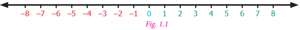
Every integer on this number line is placed in an increasing order from left to right.
The integers at each point ye, B, C, D in the figure given below are ye equal to plus 3, B equal to plus 7, D equal to minus 1 and C equal to minus 5
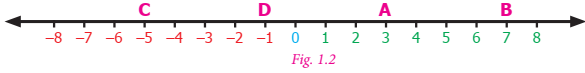
Try these
1. Write the following integers in ascending order: minus 5,0,2,4, minus 6,10, minus 10
2. If the integers minus 15,12, minus 17,5, minus 1, minus 5,6 are marked on the number line then the integer on the extreme left is dash
3. Complete the following pattern:
Dash, minus 40,Dash,dash, minus 10,0,dash,20,30,dash,50
4. Compare the given numbers and write less than, greater than”, or Equal to in the boxes.
a) minus 65 Dash 65
b) 0 Dash 1000
c) minus 2018 Dash minus 2018
5.Write the given integers in descending order: minus 27,19,0,12, minus 4, minus 22,47,3, minus 9, minus 35
In class 6, we studied how to compare and arrange integers. Now, let us try to add and subtract integers.
We know 7 minus 5 is equal to 2. But, what is 5 minus 7? Let us try to take away 7 from 5 using the number line As the integers on the number line increases from left to right, we should move to the left of zero to do this subtraction.
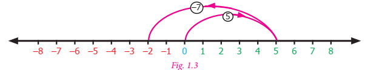
Is it really necessary to do this? Have you come across any such situations in life? Yes, there are situations like increase or decrease in temperature, amount deposited and withdrawn from an account, profit and loss in ye business are all instances where integers are involved.
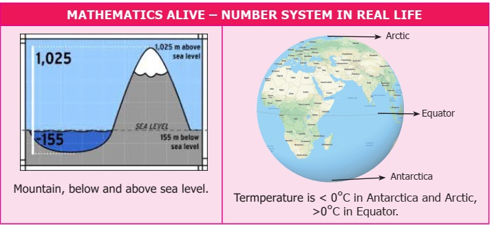
The number line is ye simple tool to visualise addition of integers. Let us do an activity with the number line.
Activity
Imagine that the number line is ye road with markers on it. We are allowed to step forward or backward on this road. One step taken is equal to one unit of number. Initially we start at zero and face positive direction. We step forward for positive integers and backward for negative integers. We maintain the same positive direction for addition operation.
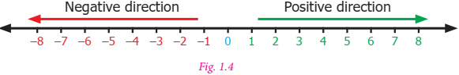
To add (+5) and (minus 3), we start at zero facing positive direction and move five steps forward to represent (+5). Since the operation is addition we maintain the same direction and move three units backward to represent (minus 3). We land at +2. So, (+5) + (minus 3) equal to2 This is shown in figure 1.5.
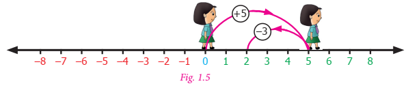
Proceeding in the same way let us try another example. Find the sum of (minus 6) and (minus 4). We start at zero facing positive direction continuing in the same direction and move 6 units backward to represent (minus 6) and in the same direction move 4 units backward to represent (minus 4). We land at (minus 10).
Therefore, (minus 6) + (minus 4)equal to minus 10
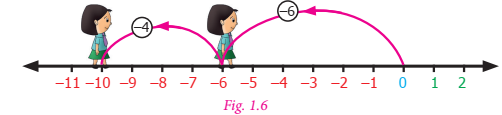
Try this
Find the value of the following using the number line activity:
1) (minus 4) + (+3)
2) (minus 4) + (minus 3)
3) (+4) + (minus 3)
Activity
There are two bowls with tokens of two different colours brown and pink. Let us denote one brown token by (+1) and one pink token by (minus 1). ye pair of tokens, brown (+1) and pink (minus 1), will denote zero [1+( minus 1) equal to 0]
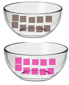
To add two integers, we pick the required number of tokens and form possible zero pairs. The remaining number of tokens left after pairing is the sum of the two integers.
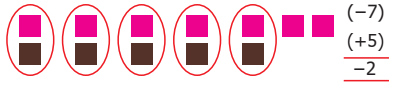
To add (minus 7) and (+5) we pick 7 pink tokens and 5 brown tokens. We form zero pairs from the tokens as above. We can form 5 zero pairs. Then we are left with 2 pink tokens. Hence, minus 7 + plus 5 equal to minus 2
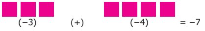
To add (minus 3) and (minus 4) we pick 3 pink tokens first and 4 pink tokens later. The total number of tokens is 7 pink tokens. There are no zero pairs. So, the sum of (minus 3) and (minus 4) is (minus 7). Teacher can give different integers and ask them to add using tokens.
Note
1. When we add two integers of the same sign the sum will also be an integer of the same sign. When we add two integers of different sign, the sum will be the difference between the two integers and have the sign of the integer with greater value.
2. The integer without sign represents positive integer.
Example 1.1
Add the following integers using number line
1) 10 and minus 15
2) minus 7 and minus 9
Solution
Let us add the integers using number line
1) 10 and minus 15
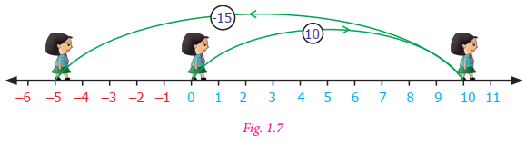
On the number line we first start at zero facing positive direction and move 10 steps forward, reaching 10. Then we move 15 steps backward to represent minus 15 and reach at minus 5. Thus, we get10 + (minus 15)equal to minus 5
2) minus 7 and minus 9
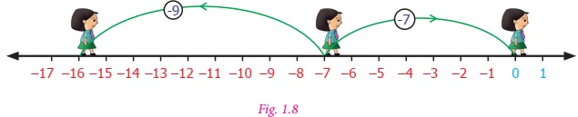
On the number line we first start at zero facing positive direction and move 7 steps backward, reaching minus 7. Then we move 9 steps backward to represent minus 9 and reach at minus 16. Thus, we get (minus 7) + (minus 9) equal to minus 16
Example 1.2
Add
1) (minus 40) and (30)
2) 60 and (minus 50)
Solution
1) (minus 40) and (30)
minus 40+30equal to minus 10
2) 60 and (minus 50)
60+( minus 50) equal to 60 minus 50 equal to 10
Example 1.3
Add
1) (minus 70) and (minus 12)
2) 103 and 39
Solution
1) (minus 70)+( minus 12)
minus 70 minus 12equal to minus 82
2) 103+ 39
103 + 39 equal to142
Example 1.4
ye submarine is at 32 feet below the sea level. Then it moves up 8 feet. Find the depth of the submarine.
Solution
ye submarine is 32 feet below sea level.
Therefore, it is represented by minus 32
Next it moves up 8 feet
Moves above is represented as +8
The depth of the submarine equal to minus 32+8 equal to minus 24
Therefore, the submarine is located at 24 feet below the sea level
Example 1.5
Sita saved Rupees 225.00 and she has spent Rupees 400 on credit basis for the purchase of stationary. Find her due amount.
Solution
The amount Sita has Rupees 225
The amount spent for stationary on credit equal to Rupees 400
The due amount to be paid equal to 225 minus 400 equal to minus 175
Therefore, Sita has to pay Rupees 175
Example 1.6
From the ground floor ye man went up six floors and came dow six floors. In which floor is he now?
Solution
Starting point equal to Ground floor
Number of floors climbed up equal to +6
Number of floors climbed down equal to minus 6
Now the landing point equal to +6 minus 6equal to 0 (ground floor)
In class 6, we have studied that the collection of whole numbers is closed under the addition operation. The sum of two whole numbers is always ye whole number. Does this property hold for the collection of integers also?
Complete the given table and check whether the sum of two integers is an integer or not?
1) 7+(minus 5) equal to |
2) (minus 6)+( minus 13) equal to |
3) 25+9 equal to |
4) (minus 12)+4 equal to |
5) 41+ 32 equal to |
6) (minus 19)+( minus 15) equal to |
7) 52+( minus 15) equal to |
8) (minus 7)+0 equal to |
9) 0+12 equal to |
10) 14+0 equal to |
11) (minus 6)+( minus 6) equal to |
12) (minus 27)+0 equal to |
We observe that in all the above cases the sum of two integers is an integer. Since addition of integers is an integer, we say that integers are closed under addition. This property is known as “closure property” of integers on addition.
Therefore, for any two integers ye,b; ye+b is also an integer.
We observe one more property of integers. The order in which we add two integers does not matter. For example, 12+( minus 13)is the same as (minus 13)+(12). Also (minus 7)+( minus 5) is the same as (minus 5)+( minus 7).
This property is known as “commutative property” of integers.
Therefore, for any two integers ye,b; ye+b equal to b+ye.
What happens when we add three integers? For example, will (minus 7)+( minus 2)+( minus 9) give the same value when they are added in any way of grouping.
Let us check by grouping the integers as [(minus 7)+( minus 2)]+( minus 9) and (minus 7)+[( minus 2)+( minus 9)].
First let us find the value of[(minus 7)+( minus 2)]+( minus 9).
[(minus 7)+( minus 2)+( minus 9)equal to( minus 9)+( minus 9)equal to minus 9 minus 9equal to minus 18
Let us illustrate this with the number line : [(minus 7)+( minus 2)]+( minus 9)can be represented as
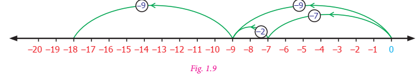
[(minus 7)+( minus 2)]+( minus 9)equal to minus 18
Then we will find the value of (minus 7)+[( minus 2) + (minus 9)]
(minus 7)+[ minus (2)+( minus 9)]equal to( minus 7)+( minus 11)equal to minus 7 minus 11equal to minus 18
[(minus 7)+( minus 2)]+( minus 9)can be represented on the number line as below.

[(minus 7)+( minus 2)]+( minus 9) equal to( minus 18)
We reach the same number minus 18 in both the cases. Hence, regrouping of integers does not change the value of the sum. This property is known as “associative property” under addition.
Therefore, for any three integers ye,b,c; (ye+(b+c) equal to(ye+b)+c
The collection of integers has positive, negative integers and zero. Have you noticed that zero is neither positive nor negative integer. What happens when we add zero to an integer?
For example, we observe that, 7+0 equal to7, minus 3+0equal to minus 3, minus 27+0 equal to minus 27
minus 79+0 equal to minus 79,0+( minus 69) equal to minus 69,0+( minus 85)equal to minus 85.
From the above it is clear that whenever zero is added to an integer, we get the same integer. Due to this property, zero is called the identity with respect to addition or “additive identity” of the collection of integers.
Therefore, for any integers ye,ye+0 equal to ye equal to 0+ye
The additive identity zero separates the number line into positive and negative integers. We have +1and minus 1,+5 and minus 5, minus 15 and +15 etc. on opposite sides of the number line that are equidistant from zero. Such integers on either side of zero are called “opposites” of each other. In fact, we find that the “opposites” added together always give the value zero.
For example, (minus 15)+15 equal to 0,21+( minus 21)equal to 0. This property of integers is named as “additive inverse”. (minus 15) is the additive inverse of 15 because their sum is zero. In the same way, 21 is the additive inverse of minus 21. Either of the pair of opposites is known as the “additive inverse” of the other.
Therefore, for any integer ye, minus ye is the additive inverse.
ye+( minus ye)equal to 0 equal to( minus ye)+ye
Try these
1. Fill in the blanks:
1) 20+( minus 11)equal todash + 20
2) (minus 5)+( minus 8)equal to( minus 8)+dash
3) (minus 3)+12equal todash+( minus 3)
2. Say true or false.
1) (minus 11)+( minus 8)equal to( minus 8)+( minus 11)
2) minus 7+2equal to2+( minus 7)
3) (minus 33)+8equal to8+(minus 33)
3. Verify the following:
1) [(minus 2)+( minus 9)]+6equal to( minus 2)+[( minus 9)+6]
2) [7+(minus 8)+( minus 5)equal to7+ [(minus 8)+( minus 5)]
3) [(minus 11)+5]+( minus 14)equal to( minus 11)+[5+( minus 14)]
4) (minus 5) + [( minus 32) + ( minus 2)] equal to [ minus (5) + ( minus 32)] + ( minus 2)
4. Find the missing integers:
1) 0+(minus 95)equal to dash
2) minus 611+dashequal to minus 611
3) dash +0equal todash
4) 0+(minus 140)equal to dash
5. Complete the following:
1) minus six hundred and three + six hundred and three equal to dash
2) 9847 + (minus 9847) equal to dash
3) 1652+dash equal to0
4) minus 777+dashequal to0
5) dash + 5281equal to0
Example 1.7
1) Are 120+51 and 51+120 equal?
2) Are (minus 5)+[( minus 4)+( minus 3)] and [(minus 5)+( minus 4)]+( minus 3) equal?
Solution
1) When we add, 120+51equal to171 ; 51+120equal to171
In both the cases we get same answer. This means that integers can be added in any order. Hence, addition of integers is commutative.
2) (minus 5)+[(minus 4)+(minus 3)]and [(minus 5)+(minus 4)]+(minus 3)
In (minus 5)+[(minus 4)+(minus 3)],(minus 4) and (minus 3) are added first and their result is then added with (minus 5)

(minus 5)+[(minus 4)+(minus 3)]equal to minus 12
Wheareas in(minus 5)+[(minus 4)+(minus 3)], (minus 4)and (minus 3) are added first and then the result is added with (minus 5)
![in figure 1.12, A number line with numbers minus twelve to +1 is given in which the numbers minus 12 to minus 1 are red, 0 is in blue . and +1 is in green colour. A line drawn starts from 0 and move minus 5 steps backward to minus 5 in number line and from minus 5, ,the line move backward to minus 4 steps and reach minus 9, another green line from 0 to minus 9 also indicated and from minus 9 ,the line move backward to minus 3 ,units to stop on minus 12, that is minus 5 minus 4=minus 9 minus 3=minus 12](images/image-21.png)
(minus 5)+[(minus 4)+(minus 3)]equal to minus 12
In both the cases, we get minus 12
That is (minus 5)+[(minus 4)+(minus 3)]equal to[(minus 5)+(minus 4)]+(minus 3) So, addition is associative.
Example 1.8
Find the missing integers
1) 0+(minus 2345) equal to dash
2) 23479+dash equal to 0
Solution
1) 0+( minus 2345)equal to minus 2345
2) 23479+(minus 23479) equal to 0
Therefore, additive inverse of 23479 is minus 23479
Example 1.9
Mention the property for the follwing equations:
1) (minus 45)+( minus 12)equal to minus 57
2) (minus 15)+7equal to(7)+( minus 15)
3) minus 10+3equal to minus 7
4) (minus 7)+( minus 5)equal to( minus 5)+( minus 7)
5) (minus 7)+[( minus 4)+( minus 3)]equal to[( minus 7)+( minus 4)]+( minus 3)
6) 0+( minus 7245)equal to minus 7245
Solution
1) Closure Property
2) Commutative Property
3) Closure Property
4) Commutative Property
5) Associative Property
6) Additive Identity
Exercise 1.1
1. Fill in the blanks
1) (minus 30)+dashequal to60
2) (minus 5)+dashequal to minus 100
3) (minus 52)+( minus 52)equal todash
4) dash+( minus 22)equal to0
5) dash + (minus 70)equal to70
6) 20+80+dashequal to0
7) 75+( minus 25)equal todash
8) 171+dashequal to0
9) [(minus 3)+( minus 12)]+( minus 77)equal todash+[( minus 12)+( minus 77)]
10) (minus 42)+[dash+( minus 23)]equal to[dash+fifteen]+dash
2. Say true or false.
1) The additive inverse of (minus 32) is (minus 32)
2) (minus 90)+( minus 30)equal to60
3) (minus 125)+25equal to minus 100
3. Add the following
1) 8 and minus 12 using number line
2) (minus 3)and (minus 5) using number line
3) (minus 100)+( minus 10)
4) 20+( minus 72)
5) 82+( minus 75)
6) minus 48+( minus 15)
7) minus 225+( minus 63)
4. Thenmalar appeared for competitive exam which has negative scoring of 1 mark for each incorrect answer. In paper 1 she answered 25 questions incorrectly and in paper 2, 13 questions incorrectly. Find the total reduction of marks.
5. In ye quiz competition, Team ye scored + thirty, minus 20, 0 and team B scored minus 20, 0, + 30 in three successive rounds. Which team will win? Can we say that we can add integers in any order?
6. Are (11 + 7) + ten and 11 + (7 + ten) equal? Mention the property.
7. Find 5 pairs of integers that add up to 2.
Objective type questions
8. The temperature at 12 noon at ye certain place was 18 degree above zero. If it decreases at the rate of 3 degree per hour at what time it would be 12 degree below zero?
1) 12 mid night
2) 12 noon
3) 10 am
4) 10 pm
9. Identify the problem with negative numbers as its answer:
1) minus 9+( minus 5)+6
2) 18+( minus 12) minus 6
3) minus 4+2+10
4) 10+( minus 4)+8
10. (minus 10)+(+7) equal to dash
1) +3
2) minus 3
3) minus 17
4) +17
11. (minus 8)+10+( minus 2) equal to dash
1) 2
2) 8
3) 0
4) 20
12. 20+( minus 9)+9 equal to dash
1) 20
2) 29
3) 11
4) 38
Let us learn subtraction of integers using number line.
Let us try to subtract integers using the number line activity we studied earlier. We should follow the same instructions as before but whenever we need to subtract, we turn towards the negative side.
To subtract(+4) from (+7) We start at zero facing positive direction. Moves 7 units forward to represent +7 them turn towards the negative side for the operation of subtration and move +4 units forward to represent +4. We reach the integer +3. So, (+7) minus (+4) equal to +3.
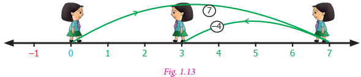
Let us find (minus 8) minus (minus 5)
We start at zero facing positive direction. Move 8 units backward to represent (minus 8). Then turn towards the negative side and move 5 units backwards. We reach minus 3. We have (minus 8) minus (minus 5) equal to(minus 3)
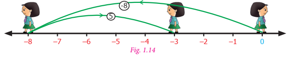
Now, let us learn subtraction of integers in another way.
Observe the following patterns:
7 minus 2equal to5 ; 7 minus 1equal to6 ; 7 minus 0equal to7
What will happen if we extend this to negative integers?
7 minus (minus 1)equal to8 ; 7 minus (minus 2)equal to9 ; 7 minus (minus 3)equal to10
We shall see some more patterns.
20 minus 2equal to18 ; 20 minus 1equal to19 ; 20 minus 0equal to20 ; 20 minus (minus 1)equal to21 ; 20 minus (minus 2)equal to22
We can see from the above patterns that while subtracting consecutive negative integers from 7 and 20 the difference increase consecutively.
It is clear that subtraction of negative integers gives increase in the difference. For example 7 minus (minus 2)equal to9. Hence, subtraction of minus 2 is equivalent to addition of 2, which is the additive inverse of minus 2. That is, 7+2equal to9.
So, to subtract ye negative integer from an integer we add the additive inverse of the integer which is to be subtracted.
For example, subtract (minus 5) from 7.
7 minus (minus 5)
To subtract(minus 5) we can add additive inverse of (minus 5)that is 5 with7
Therefore, 7 minus (minus 5)equal to12
Try these
1. Do the following by using number line
1) (minus 4) minus (+3)
2) (minus 4) minus (minus 3)
2. Find the values and compare the answers.
1) (minus 6) minus (minus 2) and (minus 6)+2
2) 35 minus (minus 7) and 35 + 7
3) 26 minus (+10)and 26 +( minus 10)
3. Put the suitable symbol less than,greater than or equal sign in the boxes.
1) minus 10 minus 8 Dash minus 10+8
2) (minus 20)+10 Dash (minus 20) minus (minus 10)
3) (minus 70) minus (minus 50) Dash (minus 70) minus 50
4) 100 minus (+100) Dash 100 minus (minus 100)
5) minus 50 minus 30 Dash minus 100+20
Note
Every subtraction statement has ye corresponding addition statement. For example, 8 minus 5equal to3 is ye subtraction statement. This can be seen as the addition statement 3+5equal to8. In the same way, (minus 8) minus (minus 5)equal to minus 3 is ye subtraction statement which can be written as the addition statement. (minus 8)equal to(minus 3)+( minus 5)
Example 1.10
Subtract the following using the number line.
1) minus 3 minus (minus 2)
2) +6 minus (minus 5)
Solution
1) minus 3 minus (minus 2)
To subtract minus 2 from minus 3 using number line,
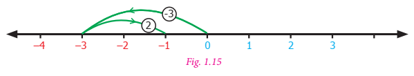
Therefore, minus 3, minus (minus 2)equal to minus 3+2equal to minus 1
2) +6 minus (minus 5)
To subtract minus 5 from 6 using number line,
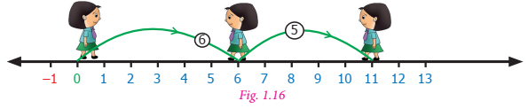
Therefore, +6 minus (minus 5)equal to+6+5equal to11.Now, let us see how to subtract negative integers using additive inverse.
Example 1.11
1) Subtract (minus 40) from 70
2) Subtract (minus 12) from (minus 20)
Solution
1) 70 minus (minus 40)
equal to70+ (additive inverse of -40)
equal to70+40equal to110
2) (minus 20) minus (minus 12)
equal to ( minus 20)+(additive inverse of (minus 12))
equal to (minus 20)+twelve
equal to minus 8
Example 1.12
Find the value of:
1) (minus 11) minus (minus thirty three)
2) (minus 90) minus (minus 50)
Solution
1) (minus 11) minus (minus thirty three)
equal to (minus 11) + ( + thirty three)
equal to22
2) (minus 90) minus (minus 50)
equal to minus 90 minus (minus 50)
equal to minus 90 + 50
equal to minus 40
Example 1.13
Chitra has Rupees 150. She wanted to buy ye bag which costs Rupees 225. How much money does she need to borrow from her friend?
Solution
Amount with Chitra equal to Rupees 150
Cost of bag equal to Rupees 225
Amount to be borrowed equal to 225 minus 150 equal to Rupees 75
Example 1.14
What is the balance in Cheliyan’s account as ye result of ye purchase for Rupees 1079, if he had an opening balance of Rupees 5000 in his account?
Solution
Opening balance equal to Rupees 5000
Debit amount equal to Rupees 1079 (minus)
Balance amount equal to Rupees 3921
Example 1.15
The temperature at Srinagar was minus 3 degree celsius on Friday. If the temperature decreases by 1 degree celsius next day, then what is the temperature on that day?
Solution
The temperature at Srinagar was minus 3 degree celsius on Friday. If the temperature decreases by 1 degree celsius then, temperature on the next day equal to minus 3 degree celsius minus 1 degree celsius equal to minus 4 degree celsius
Example 1.16
ye submarine is at 300 feet below the sea level. If it ascends to 175 feet, what is its new position?
Solution
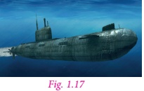
Initial position of submarine equal to 300 feet below
equal to minus 300 feet
Distance ascended by submarine equal to one hundred and seventy five feet
equal to + one hundred and seventy five feet
New position of submarine equal to (minus 300) + (+one hundred and seventy five)
equal to minus 125
That is, the submarine is 125 feet below the sea level.
We can test whether all the properties of integers that are true for addition still hold for subtraction or not.
Recall that subtraction of two whole numbers did not always result in ye whole number. However, this extended form of integers is enough to make sure that the difference of two integers is also an integer. For example, (minus 7) minus (minus 2) is an integer, (minus 5) + fourteen is an integer and 0 minus (minus 8) is an integer. From these examples we observe that the collection of integers is “closed”, that is, the difference of two integers is always an integer.
Therefore, for any two integers ye, b; ye minus b is also an integer.
What about the other properties? Can you see that (minus 2) minus (minus 5) equal to3 but (minus 5) minus (minus 2) equal to minus 3. Also, 10 minus (minus 5) equal to15 but (minus 5) minus 10equal to minus 15. Therefore, changing the order of integers in subtraction will not give the same value. Hence, the commutative property does not hold for subtraction of integers.
Therefore, for any two integers ye, b ye minus b not equal to b minus ye
Try these
1. Fill in the blanks.
1) (minus 7) minus (minus 15) equal to dash
2) 12 minus dash equal to19
3) dash minus (minus 5) equal to1
2. Find the values and compare the answers.
1) 15 minus 12 and 12 minus 15
2) minus 21 minus 32 and minus 32 minus (minus 21)
Think
Is associative property true for subtraction of integers? Take any three examples and check.
Exercise 1.2
1. Fill in the blanks
1) minus 44 + dash equal to- minus 88
2) dash minus 75equal to minus 45
3) dash minus (+fifty) equal to minus 80
2. Say true or false
1) (minus 675) minus (minus 400) equal to minus one thousand seventy five
2) 15 minus (minus 18) is the same as 15+18
3) (minus 45) minus (minus 8) equal to (minus 8) minus (minus 45)
3. Find the value of the following.
1) minus 3 minus (minus 4) using number line
2) 7 minus (minus 10) using number line
3) 35 minus (minus 64)
4) minus 200 minus (+100)
4. Kabilan was having 10 pencils with him. He gave 2 pencils to Senthil and 3 to Karthik. Next day his father gave him 6 more pencils, from that he gave 8 to his sister. How many pencils are left with him?
5.ye lift is on the ground floor. If it goes 5 floors down and then moves up to 10 floors from there. Then in which floor will the lift be?
6. When Kala woke up, her body temperature was one hundred and two degree Fahrenheit. She took medicine for fever. After 2 hours it was 2 degree Fahrenheit lower. What was her temperature then?
7. What number should be added to (minus 17) to get (minus 19)?
8.ye student was asked to subtract (minus 12) from (minus 47). He got. minus 30 Is he correct? Justify.
Objective type questions
9. (minus 5) minus (minus 18) equal to dash
1) 23
2) minus 13
3) 13
4) minus 23
10. (minus 100) minus 0+100 equal to dash
1) 200
2) 0
3) 100
4) minus 200
Situation 1
Ramani and Ravi are playing with pebbles in ye heap. Ramani is adding some pebbles to the heap while Ravi removes some pebbles. First, Ramani adds 3 pebbles. Then she adds 3 more pebbles. She repeats these 2 more times. Can you say how many pebbles she added in all? Since adding pebbles is positive we can write (+3) +(+3) +(+3) +(+3) equal to + twelve or 4 multiplied by (+3) equal to twelve
The total number of pebbles added is twelve
Ravi takes out 5 pebbles three times. If we represent “taking out” as ye negative integer then (minus 5) + (minus 5) + minus (5) equal to minus 15 or we can simply put it as. (minus 5) multiplied by 3equal to minus 15 Ravi has removed 15 pebbles from the heap. This illustrates that multiplication of negative integers is also repeated addition just like positive integers or whole numbers.
We can draw ye number line and visualise the above multiplication of integers as repeated addition.
4 multiplied by 3equal to12 (3 is added four times)
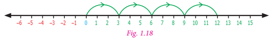
(minus 5) multiplied by 3equal to minus 15 (minus (5) is added three times)
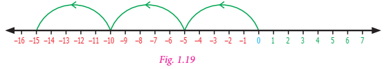
We have no difficulty to understand that ye positive integer like (+7) multiplied by another positive integer like (+8) is positive (+ fifty six). Also, ye positive integer like +7 multiplied by ye negative integer like minus 5 is minus 35 and +5 multiplied by minus 7equal to minus 35. But what about ye negative integer (minus 3) multiplied with another negative integer minus 5? To understand this, let us observe the following pattern.
(minus 5) multiplied by 3equal to minus 15
(minus 5) multiplied by 2equal to minus 10
(minus 5) multiplied by 1equal to minus 5
(minus 5) multiplied by 0 equal to 0
(minus 5) multiplied by (minus 1) equal to+5
(minus 5) multiplied by (minus 2) equal to+10
(minus 5) multiplied by (minus 3) equal to+15
Note that how in each step the number increase by 5 from minus 15 to minus 10, from minus 10 to minus 5, from minus 5 to 0. Therefore, the next number in the pattern will be +5 only and not. minus 5 Similarly, (minus 5) multiplied by (minus 2) is ye positive integer 10 So, the product of two negative integers is always ye positive integer.
Try these
1. Find the product of the following.
1) (minus 20) multiplied by (minus 45) equal to dash
2) (minus 9) multiplied by (minus 8) equal to dash
3) (minus 30) multiplied by 40 multiplied by (minus 1) equal to dash
4) (+50) multiplied by 2multiplied by (minus 10) equal to dash
2. Complete the following table by multiplying the integers in the corresponding row and column headers.
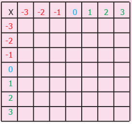
3. Which of the following is incorrect?
1) (minus 55) multiplied by (minus 22) multiplied by (minus 33) less than 0
2) (minus one thousand five hundred and twenty one ) multiplied by 2511 less than 0
3) 2512 minus 1252 less than 0
4) (+1981) multiplied by (+ 2000) less than 0
Think
Can you express the product 15 multiplied by 16 as sum or difference of integers?
Yes, here are 4 ways to compute 15 multiplied by 16 equal to +two hundred and forty
1) 15multiplied by 16 equal to (10+5) multiplied by (10+6) equal to100+60+50+30equal to two hundred and forty
2) 15multiplied by 16 equal to (20 minus 5) multiplied by (10+6) equal to200+120+( minus 50) + (minus 30) equal to two hundred and forty
3) 15multiplied by 16equal to (10+5) multiplied by (20 minus 4) equal to200+( minus 40) +100+( minus 20) equal to two hundred and forty
4) 15multiplied by 16equal to (20 minus 5) multiplied by (20 minus 4) equal to400+( minus 80) +( minus 100) +20equal to two hundred and forty
From the above pattern one can determine the product of two positive integers, two negative integers, one positive integer with one negative integer.
Example 1.17
Find the value of:
1) (minus 35) multiplied by (minus 11)
2) 96 multiplied by (minus 20)
3) (minus 5) multiplied by 12
4) 15 multiplied by 5
5) nine hundred and ninety nine multiplied by 0
Solution
1) (minus 35) multiplied by (minus 11) equal to 385
2) 96 multiplied by (minus 20) equal to minus one thousand nine hundred and twenty
3) (minus 5) multiplied by 12equal to minus 60
4) 15 multiplied by 5equal to75
5) nine hundred and ninety nine multiplied by 0equal to0
Example 1.18
ye fruit seller sold 5 kilograms of mangoes at ye profit of Rupees 15 per kilogram and 3 kilograms of apples at ye loss of Rupees 30 per kilogram. Find whether it is ye profit or loss.
Solution
Profit of 1-kilogram mangoes equal to Rupees 15
Profit of 5 kilograms mangoes equal to 15 multiplied by 5
equal to Rupees 75
Loss of 1 kilogram’s apples equal to Rupees 30
Loss of 3-kilogram apples equal to 30 multiplied by 3
equal to Rupees 90
Loss equal to 90 minus 75equal to Rupees 15
Example 1.19
Browsing rates in an internet centre is Rupees 15 per hour. Nila works on the internet for 2 hours in ye day for 5 days in ye week. How much does she pay?
Solution
Number of hours spent on an internet for ye day equal to 2 hours
Therefore, number of hours spent on the internet for 5 days equal to 5 multiplied by 2
equal to 10 hours
Cost of browsing per hour equal to Rupees 15
Cost of browsing for 10 hours equal to 15 multiplied by 10
Therefore, the amount paid by Nila for 5 days equal to Rupees 150
Recall that multiplication of whole numbers had the closure property. If we test this property for integers we find (minus 7) multiplied by (minus 2) equal to + fourteen, (minus 6) multiplied by 5equal to minus 30, 4 multiplied by (minus 9) equal to minus 36. Thus, product of any two integers is always an integer. “Closure property” holds for integers.
Therefore, for any two integers ye, b ye multiplied by b is also an integer.
Consider the examples, 21 multiplied by (minus 5) equal to minus 105 is the same as. (minus 5) multiplied by 21 equal to minus 105 The product. (minus 9) multiplied by (minus 8) equal to+ seventy two, (minus 8) multiplied by (minus 9) equal to seventy two In both the cases the product is the same integer. So, changing the order of multiplication does not change the value of the product. Hence, we conclude that multiplication of integers are “commutative”.
Therefore, for any two integers ye, b; ye multiplied by b equal to b multiplied by ye
To verify that multiplication of integers is associative, let us check whether (minus 5) multiplied by [(minus 9) multiplied by (minus 12) and [(minus 5) multiplied by (minus 9)] multiplied by (minus 12) are equal.
(minus 5) multiplied by [(minus 9) multiplied by (minus 12)] equal to (minus 540) and [(minus 5) multiplied by (minus 9)] multiplied by (minus 12) equal to (minus 540)
Hence, “associative” property is true for multiplication of integers.
Therefore, for any three integers ye, b, c; (ye multiplied by b) multiplied by c equal to ye multiplied by (b multiplied by c)
Just as zero added to an integer leaves it unchanged, integer 1 multiplied with any integer leaves the integer unaltered. For example, 57 multiplied by 1equal to57, and1 multiplied by (minus 62) equal to minus 62. We say that the integer 1 is the identity for multiplication of integers or “multiplicative identity”.
Therefore, for any integer ye; ye multiplied by 1equal to1 multiplied by ye equal to ye
Try these
1. Find the product and check for equality:
1) 18 multiplied by (minus 5) and (minus 5) multiplied by 18
2) 31 multiplied by (minus 6) and (minus 6) multiplied by 31
3) 4 multiplied by 51 and 51 multiplied by 4
2. Prove the following:
1) (minus 20) multiplied by (13 multiplied by 4) equal to [(minus 20) multiplied by 13] multiplied by 4
2) [(minus 50) multiplied by (minus 2) multiplied by (minus 3) equal to (minus 50) multiplied by [(minus 2) multiplied by (minus 3)]
3) [(minus 4) multiplied by (minus 3) multiplied by (minus 5) equal to (minus 4) multiplied by [(minus 3) multiplied by (minus 5)]
Note
Consider an example, (minus 7) multiplied by (minus 6) multiplied by (minus 5) multiplied by (minus 4)
Let us try do the above multiplication of integer,
(minus 7) multiplied by (minus 6) multiplied by (minus 5) multiplied by (minus 4) equal to [(minus 7) multiplied by (minus 6)] multiplied by [(minus 5) multiplied by (minus 4)]
equal to (+42) multiplied by (+20)
equal to+ 840
From the above example, we see that the product of four negative integers is positive. What will happen if we multiply odd number of negative integers.
Let us consider another example, (minus 7) multiplied by (minus 3) multiplied by (minus 2)
Multiplying the above integers, we get
(minus 7) multiplied by (minus 3) multiplied by (minus 2) equal to [(minus 7) multiplied by (minus 3)] multiplied by (minus 2)
equal to (+ twenty one) multiplied by (minus 2)
equal to minus 42
From the above example, we see that the product of three negative integers is negative.
In general, if the negative integers are multiplied even number of times, the product is ye positive integer, whereas negative integers are multiplied odd number of times, the product is ye negative integer.
We have already studied that multiplication distributes over addition on whole numbers. Let us check the property for integers.
Take for example, (minus 2) multiplied by (4+5) equal to [(minus 2) multiplied by 4] + [(minus 2) multiplied by 5]
Left hand side equal to (minus 2) multiplied by (4+5)
equal to (minus 2) multiplied by 9
equal to (minus 18)
equal to minus 18
Right hand side equal to [(minus 2) multiplied by 4] + [(minus 2) multiplied by 5]
equal to (minus 8) + (minus 10)
equal to minus 8 minus 10
equal to minus 18
From the above, we can observe that, (minus 2) multiplied by (4+5) equal to [(minus 2) multiplied by 4] + [(minus 2) multiplied by 5]
Hence, “distributive property of multiplication over addition” is true for integers.
Therefore, for any three integers, ye, b, c; ye multiplied by (b +c) equal to (ye multiplied by b) + (ye multiplied by c)
Try these
1. Find the values of the following and check for equality:
1) (minus 6) multiplied by (4+( minus 5) and [((minus 6) multiplied by 4) + (minus 6) multiplied by (minus 5)]
2) (minus 3) multiplied by [2+( minus 8)]and [(minus 3) multiplied by 2] + [(minus 3) multiplied by 8]
2. Prove the following:
1) (minus 5) multiplied by [(minus seventy six) +8 equal to [(minus 5) multiplied by (minus seventy six)] + [(minus 5) multiplied by 8]
2) forty two multiplied by [7+( minus 3)] equal to (forty two multiplied by 7) + [forty two multiplied by (minus 3)]
3) (minus 3) multiplied by [(minus 4) +( minus 5)] equal to [(minus 3) multiplied by (minus 4)] + [(minus 3) multiplied by (minus 5)]
4) one hundred and three multiplied by 25 equal to (100+3) multiplied by 25 equal to (hundred multiplied by 25) + (3 multiplied by 25)
Example 1.20
Prove that (minus 7) multiplied by (+8) is an integer and mention the property.
Solution
(minus 7) multiplied by (+8) equal to (minus 56)
Hence, minus 56 is an integer.
Therefore, (minus 7) multiplied by (+8) is closed under multiplication.
Example 1.21
Are (minus 42) multiplied by (minus 7) and (minus 7) multiplied by (minus 42) equal? Mention the property.
Solution
Consider, (minus 42) multiplied by (minus 7)
(minus 42) multiplied by (minus 7) equal to + 294
Consider, (minus 7) multiplied by (minus 42)
(minus 7) multiplied by (minus 42) equal to+ 294
Therefore, (minus 42) multiplied by (minus 7) and (minus 7) multiplied by (minus 42) are equal.
It is commutative.
Example 1.22
Prove that [(minus 2) multiplied by 3] multiplied by (minus 4) equal to (minus 2) multiplied by [3 multiplied by (minus 4)]
Solution
In the first case (minus 2) and (3) are grouped together and in the second case (3) and (minus 4) are grouped together.
Left hand side [(minus 2) multiplied by 3] multiplied by (minus 4)
equal to (minus 6) multiplied by (minus 4) equal to 24
Right hand side equal to (minus 2) multiplied by [3 multiplied by (minus 4)]
equal to (minus 2) multiplied by (minus 12) equal to24
Therefore, Left hand side equal to Right hand side
[(minus 2) multiplied by 3] multiplied by minus 4) equal to (minus 2) multiplied by [3 multiplied by (minus 4)] Hence it is proved.
Example 1.23
Are (minus 81) × [5 × (minus 2)] and [minus (81) multiplied by 5] × (minus 2) equal? Mention the property.
Solution
Consider, (minus 81) multiplied by [5 multiplied by (minus 2)]
(minus 81) multiplied by [5 multiplied by (minus 2)] equal to (minus 81) multiplied by (minus 10) equal to810
Consider, [(minus 81) multiplied by 5] multiplied by (minus 2)
[(minus 81) multiplied by 5] multiplied by (minus 2) equal to (minus four hundred and five) multiplied by (minus 2) equal to 810
Therefore, (minus 81) multiplied by [5 multiplied by (minus 2)]and [(minus 81) multiplied by 5] multiplied by (minus 2) are equal.
It is associative.
Example 1.24
Are 3 multiplied by [(minus 4) + 6] and [3 multiplied by (minus 4)] + (3 multiplied by 6) equal? Mention the property.
Solution
Consider, 3 multiplied by [(minus 4) + 6]
3 multiplied by [(minus 4) + 6] equal to 3multiplied by 2 equal to 6
Consider, [3 multiplied by (minus 4)] + (3multiplied by 6)
[3multiplied by (minus 4)] + [3multiplied by 6] equal to minus twelve+18equal to6
Therefore, 3 multiplied by [(minus 4) + 6]and [3 multiplied by (minus 4)] + (3multiplied by 6) are equal.
It is the distributive property of multiplication over addition.
Exercise 1.3
1. Fill in the blanks
1) minus 80 multiplied by dash equal to minus 80
2) (minus 10) multiplied by dash equal to20
3) (100) multiplied by dash equal to minus 500
4) dash multiplied by (minus 9) equal to minus 45
5) dash multiplied by 75 equal to 0
2. Say true or false.
1) (minus 15) multiplied by 5 equal to75
2) (minus 100) multiplied by 0 multiplied by 20equal to0
3) 8multiplied by (minus 4) equal to32
3. What will be the sign of the product of the following.
1) 16 times of negative integer.
2) 29 times of negative integer.
4. Find the product of
1) (minus 35) multiplied by 22
2) (minus 10) multiplied by 12 multiplied by (minus 9)
3) (minus 9) multiplied by (minus 8) multiplied by (minus 7) multiplied by (minus 6)
4) (minus 25) multiplied by 0 multiplied by 45 multiplied by 90
5) (minus 2) multiplied by (+fifty) multiplied by (minus 25) multiplied by 4
5. Check the following for equality and if they are equal, mention the property.
1) (8 minus 13) multiplied by 7 and 8 minus (13 multiplied by 7)
2) [(minus 6) minus (+8)] multiplied by (minus 4) and (minus 6) minus [8 multiplied by (minus 4)]
3) 3 multiplied by [(minus 4) + (minus 10)] and [3 multiplied by (minus 4) +3 multiplied by (minus 10)]
6. During summer, the level of the water in ye pond decreases by 2 inches every week due to evaporation. What is the change in the level of the water over ye period of 6 weeks?
7. Find all possible pairs of integers that give ye product of minus 50
Objective type questions
8. Which of the following expressions is equal to minus 30
1) minus 20 minus (minus 5 multiplied by 2)
2) (6 multiplied by 10) minus (6 multiplied by 5)
3) (2 multiplied by 5)+(4 multiplied by 5)
4) (minus 6) multiplied by (+5)
9. Which property is illustrated by the equation: (5 multiplied by 2)+(5 multiplied by 5)equal to5 multiplied by (2+5)
1) commutative
2) closure
3) distributive
4) associative
10. 11 multiplied by ( minus 1)equal to dash
1) minus 1
2) 0
3) +1
4) minus 11
11. (minus 12) multiplied by ( minus 9)equal todash
1) 108
2) minus 108
3) +1
4) minus 1
We have already seen that each multiplicationj statement has two division statements in whole numbers. Can we try the same for integers also; let us play with this number converter machine and see how division works.
Number converter
Input |
Multiplication Statement |
Division Statement |
Output |
Input 1) Product of positive integer and positive integer. |
Multiplication Statement 8 multiplied by 9 equal to72 |
Division Statement 72divided by 9equal to8 72divided by 8equal to9
|
Output Positive integer divided by positive integer is positive. |
Input 2) Product of positive integer and negative integer. |
Multiplication Statement minus 10 multiplied by 7equal to minus 70 |
Division Statement (minus 70)divided by7equal to minus 10 (minus 70) divided by (minus 10) equal to7 |
Output Negative integer divided by positive integer is negative integer divided by negative integer is positive. |
Input 3) Product of negative integer and negative integer. |
Multiplication Statement (minus 5) multiplied by ( minus 9)equal to45 |
Division Statement 45divided by( minus 9)equal to minus 5 45divided by (minus 5) equal to minus 9 |
Output Positive integer divided by negative integer is negative. |
From the above table, we infer that the division of two integers with the same sign is ye positive integer.
Division of two integer with opposite signs gives ye negative integer.
Try these
1) (minus 32) divided by 4 equal to dash
2) (minus 50) divided by 50 equal to dash
3) 30 divided by 15 equal to dash
4) minus 200 divided by 10 equal to dash
5) minus 48 divided by 6 equal to dash
Example 1.25
Divide:
1) (minus 85) by 5
2) (minus 250) by (minus 25)
3) 120 by (minus 6)
4) 182 by (minus 2)
Solution
1) (minus 85) divided by 5equal to minus 17
2) (minus 250) divided by (minus 25)equal to+ ten
3) 120 divided by (minus 6)equal to minus 20
4) 182 divided by (minus 2)equal to minus 91
Example 1.26
In ye competitive exam 4 marks are given for every correct answer and (minus 2) marks are given for every incorrect answer, Kalaivili attended the exam and answered all the questions and scored 20 marks only even though she got 10 correct answers. How many questions did she answer incorrectly?
Solution
Marks given for one correct answer equal to 4
Marks given for 10 correct answers equal to 10 multiplied by 4equal to40
Kalaivili’s final scoreequal to20
Marks reduced for incorrect answers equal to 40 minus 20equal to20
Therefore, number of questions answered incorrectly equal to20 divided by 2equal to10
Example 1.27
ye shopkeeper earns ye profit of Rupees 5 by selling one notebook and incurs ye loss of Rupees 2 per pen while selling of his old stock. In ye particular day he earns neither profit nor loss. If he sold 20 notebooks, how many pens did he sell?
Solution
Since neither profit nor loss
Profit + Loss equal to 0
That is Profit equal to minus Loss
Profit earned from 1 notebook equal to Rupees 5
Profit earned from 20 notebooks equal to20 multiplied by Rupees 5
equal to Rupees 100
Loss incurred by selling pens equal to Rupees 100 Loss
equal to minus 100
Loss for 1 pen equal to Rupees 2
Loss equal to minus 2
Total number of pens sold equal to (minus 100) divided by (minus 2)
equal to50 pens
Activity
Students may be divided into two groups and do the activity using “In out box”. This box takes any number as input and apply the rule to the given number and gives the answer. One group will carry out the role of finding output applying the corresponding rule. One is done in each rule for your reference.
![In table 1, Rule to add minus 7 is given “In out box”. is drawn in which in in the first column and out in the second column.in the first row of in column minus 10 is given which when added to minus 7 gives out as minus 17 in the first row of out box, similarly, minus 7,5,16and 4 is given in the other rows respectively The second, third, fourth and sixth rows in outbox remains blank. the negative numbers are given in red and positive numbers in green colour. In table 2, Rule to subtract minus 10 is given “In out box”. is drawn in which in in the first column and out in the second column.in the first row of in column minus 20 is given which when subtracted to minus 10 gives out as minus 10 in the first row of out box, similarly, minus 13,7,10,and 15 is given in the other rows respectively The second, third, fourth and sixth rows in outbox remains blank. the negative numbers are given in red and positive numbers in green colour. In table 3, Rule to multiply by minus 5 is given “In out box”. is drawn in which in the first column and out in the second column.in the first row of in column minus 7 is given which when multiplied by minus 5 gives out as +35 in the first row of out box, similarly,minus 12,+15,18 and minus 5 is given in the other rows respectively The second, third, fourth and sixth rows in outbox remains blank. minus 7 and minus 12 are in red colour and plus 15. 18 and minus 5 are in green colour. In table 4, Rule to divide by minus 3 is given “In out box”. is drawn in which in in the first column and out in the second column in the first row of in column minus 18 is given which when divided by minus 3 gives out as +6 in the first row of out box, similarly, 27, minus 99, minus 273 and minus 35 is given in the other rows respectively The second, third, fourth and sixth rows in outbox remains blank. the negative numbers are given in red and positive numbers in green colour.](images/image-35.png)
Can you find the value when (minus 5) is divided by 3? The value is not an integer. Clearly, the collection of integers is not ‘closed’ under division. Test it by taking 5 more examples.
To test the commutative property of division on integers, let us take minus 5 and 3.
(minus 5)divided by3≠3divided by(minus 5). Also 5divided by(minus 3)≠(minus 3)divided by5 and (minus 5)divided by(minus 3)≠(minus 3)divided by(minus 5)
Therefore, division of integers are not commutative. Verify this with 5 more examples. Since the commutative property is not true, associative property does not hold.
Let us take integers, minus 7 and 1
(minus 7)divided by1equal to minus 7but 1divided by(minus 7)≠ minus 7
Let us take (minus 6)divided by(minus 1) and 6divided by(minus 1)
(minus 6)divided by(minus 1)equal to6 and 6divided by(minus 1)equal to minus 6
Therefore, when we divide an integer by, minus 1 we will not get the same integer.
Hence, there does not exist an identity for division of integers.
Take any five integers and verify the above.
Note
An integer divided by zero is not defined. But zero divided by ye non-zero integer is zero.
Exercise 1.4
1. Fill in the blanks.
1) (minus 40)divided bydash equal to40
2) 25divided by dashequal to minus 5
3) dash divided by(minus 4)equal to9
4) (minus 62)divided by(minus 62)equal todash
2. Say true or false.
1) (minus 30)divided by(minus 6)equal to minus 6
2) (minus 64)divided by(minus 64)is 0
3. Find the values of the following.
1) (minus 75)divided by5
2) (minus 100)divided by(minus 20)
3) 45divided by(minus 9)
4) (minus 82)divided by82
4. The product of two integers is. minus 135 If one number is, minus 15 Find the other integer.
5. In 8 hours duration, with uniform decrease in temperature, the temperature dropped. 24 degree How many degrees did the temperature drop each hour?
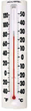
6. An elevator descends into ye mine shaft at the rate of. 5 metre per minutes If the descent starts from 15 metre above the ground level, how long will it take to reach minus 250 metre?
7.ye person lost 4800 calories in 30days. If the calory loss is uniform, calculate the loss of calory per day.
8. Given 168 multiplied by 32equal to5376 then, find (minus 5376)divided by(minus 32)
9. How many (minus 4)’s are there in (minus 20)?
10. (minus 400) divided into 10 equal parts gives dash
Objective type questions
11. Which of the following does not represent an Integer?
1) 0 divided by (minus 7)
2) 20 divided by (minus 4)
3) (minus 9) divided by3
4) (12) divided by 5
12. (minus 16) divided by 4 is the same as
1) minus (minus 16 divided by 4)
2) minus (16)divided by(minus 4)
3) 16divided by(minus 4)
4) minus 4divided by16
13. (minus 200) divided by10 is
1) 20
2) minus 20
3) minus 190
4) two hundred and ten
14. The set of integers is not closed under
1) Addition
2) Subtraction
3) Multiplication
4) Division
Do you know?
One of the earliest exposition on negative numbers is by the seventh century Indian Mathematician and Astronimen Brahma gupta, who in his famous text “Brahmas phuta suddhanta” gave ye very clear understanding of the concept of zero and consequently the negative integers. His texts were in the form of poetry which when translated reads something like this...
Rule for dealing with positive (fortune) and negative (debt) numbers.
The story of Mathematics.
We have learned how to add, subtract, multiply and divide integers. This section will review the rules learned for operations with integers.
All the mathematical problems are life oriented problems.
Situation 1
If ye person’s initial balance is Rupees 530 in ye particular month. In the same month if he deposits Rupees 230 withdraws Rupees 150, again ye withdrawal of Rupees 200 and ye deposit of Rupees 99. How will you find the answer for this?
Situation 2
If ye person buys 8 pens for 80 rupees and he sells 4 pens with ye profit of Rupees 3 per pen and 3 pens with ye loss of Rupees 2 per pen and one pen at the buying cost, find the total loss or profit of him.
Do you have any idea to approach this problem?
To solve all the statement problem, the following steps may be followed.
1. Read the problem thoroughly.
2. Write down what is given.
3. Find out what they are asking.
4. Use the required formulae or easy way to attain the answer.
5. Apply it.
6. Solve it.
7. Arrive the answer.
8. Check your answer.
Let us approach the above two situations as given below:
Serial Number |
Steps |
Situation 1 |
Situation 2 |
Serial Number 1 |
Steps Read the problem |
Situation 1 If ye person’s initial balance is Rupees 530 in ye particular month. In the same month if he deposits Rupees 230 withdraws Rupees 150, again ye withdrawal of Rupees 200 and ye deposit of Rupees 99. How will you find the answer for this? |
Situation 2 If ye person buys 8 pens for 80 rupees and he sells 4 pens with ye profit of Rupees 3 per pen and 3 pens with ye loss of Rupees 2 per pen and one pen at the buying cost, find the total loss or profit of him. |
Serial Number 2 |
Steps Write down what is given |
Situation 1 Initial balance equal to Rupees 530 Deposit 1 equal to Rupees 230 Deposit 2 equal to Rupees 99 Withdrawal 1 equal to Rupees 150 Withdrawal 2 equal to Rupees 200 |
Situation 2 Buying 8 pens for Rupees 80 Sells 4 pens at ye profit of Rupees 3 per pen. Sells 3 pens at ye loss of Rupees 2 per pen. Sells 1 pen at the cost price. |
Serial Number 3 |
Steps What is asked |
Situation 1 Final balance |
Situation 2 Amount of loss or profit |
Serial Number 4 |
Steps Use formulae |
Situation 1 Add and Subtract |
Situation 2 Find the cost of each pen. Selling price of each pen. |
Serial Number 5 |
Steps Apply it |
Situation 1 530+230+99 minus (150+200) |
Situation 2 Cost of each pen equal to 80 divided by 8equal to10 |
Serial Number 6 |
Steps Solve it |
Situation 1 530+230+99 minus (150+200) equal to Rupees 509 |
Situation 2 Cost of each pen equal to80 divided by 8equal to10 Selling price of 4 pens equal to13 multiplied by 4equal to52 Selling price of 3 pens equal to8 multiplied by 3equal to24 Selling price of 1 pen equal to1 multiplied by 10equal to10 Total selling price equal to52+24+10equal to86 |
Serial Number 7 |
Steps Arrive the answer |
Situation 1 Final balance equal to Rupees 509 |
Situation 2 Selling price (86) greater than Cost price (80) Therefore, profit equal to Rupees 6 |
Example 1.28
Ferozkhan collects Rupees one thousand hundred and fifty at the rate of Rupees 25 per head from his classmates on account of the ‘Flag Day’ in his school and returns Rupees 8 to each one of them, as instructed by his teacher. Find the amount handed over by him to his teacher.
Solution
Ferozkhan collects Rupees one thousand hundred and fifty at the rate of Rupees 25 per head from his classmates on account of the ‘Flag Day’
Total amount collected equal to Rupees one thousand hundred and fifty
Amount per head equal to Rupees 25
Number of students equal to one thousand hundred and fifty divided by 25equal to46
Amount returned to each student is Rupees 8
Amount returned to 46 students equal to46 multiplied by 8equal to Rupees 368
Amount handed over to the class teacher equal to Rupees one thousand hundred and fifty minus Rupees 368 equal to Rupees 782
Amount handed over to the class teacher equal to Rupees 782
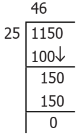
Example 1.29
Each day, the workers drill down 22 feet further until they hit ye pool of water. If the water is at 110 feet, on which day will they hit the pool of water?
Solution
Depth drilled in one day equal to minus 22 feet
Depth of water equal to minus 110 feet
Number of days required equal to(minus 110)divided by(minus 22)equal to5
Hence the workers will reach resource in 5 days.
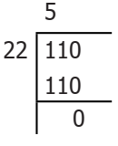
Example 1.30
How many years are between Three hundred and twenty three Before Christ (Before Common Era) and one thousand six hundred and eighty seven After Death (Common Era)?
Solution
Years in After Death (Common Era) are taken as positive integers and Before Christ (Before Common Era) as negative integers.
Therefore, the difference is
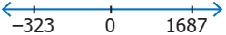
equal to one thousand six hundred and eighty seven minus (minus Three hundred and twenty three)
equal to one thousand six hundred and eighty seven + Three hundred and twenty three equal to 2010 years.
Exercise 1.5
1. One night in Kashmir, the temperature is. minus 5 degree celsius Next day the temperature is. 9 degree celsius What is the increase in temperature?
2. An atom can contain protons which have ye positive charge (+) and electrons which have ye negative charge (minus) When an electron and ye proton pair up, they become neutral (0) and cancel the charge out. Now, determine the net charge:
1) 5 electrons and 3 protons gives minus 5+3equal to minus 2 that is 2 electrons negative charge
2) 6 protons and 6 electrons gives dash
3) 9 protons and 12 electrons gives dash
4) 4 protons and 8 electrons gives dash
5) 7 protons and 6 electrons gives dash
3. Scientists use the Kelvin Scale (K) as an alternative temperature scale to degrees Celsius ( degree C) by the relation. Τemperature degree celsius equal to(Termperature + 273) Κ
Convert the following to kelvin:
1) minus275 degree celsius
2) 45 degree celsius
3) minus 400 degree celsius
4) minus 273 degree celsius
4.Find the amount that is left in the student’s bank account, if he has made the following transaction in ye month. His initial balance is Rupees 690.
1) Deposit (+) of Rupees 485
2) Withdrawal (minus) of Rupees 500
3) Withdrawal (minus) of Rupees 350
4) Deposit (+) of Rupees 89
5) If another Rupees 300 was withdrawn, what would the balance be?
5. ye poet Tamil Nambi lost 35 pages of his ‘lyrics’ when his file had got wet in the rain. Use integers, to determine the following:
1) If Tamil Nambi wrote 5 page per day, how many day’s work did he lose?
2) If four pages contained 1800 characters, (letters) how many characters were lost?
3) If Tamil Nambi is paid Rupees 250 for each page produced, how much money did he lose?
4) If Kavimaan helps Tamil Nambi and they are able to produce 7 pages per day, how many days will it take to recreate the work lost?
5) Tamil Nambi pays Kavimaan Rupees 100 per page for his help. How much money does Kavimaan receive?
6 Add 2 to me. Then multiply by 5 and subtract 10 and divide now by 4 and I will give you 15! Who am I?
7.Kamatchi, ye fruit vendor sells 30 apples and 50 pomegranates. If she makes ye profit of Rupees 8 per apple and loss Rupees 5 per pomegranate, what will be her overall profit (or) loss?
8.During ye drought, the water level in ye dam fell 3 inches per week for 6 consecutive weeks. What was the change in the water level in the dam at the end of this period?
9.Buddha was born in 563 Before Christ (Before Common Era) and died in 483 Before Christ (Before Common Era) was he alive in 500 Before Christ (Before Common Era)? And find his life time. (Source: Compton’s Encyclopedia)
Exercise 1.6
Miscellaneous Practice Problems
1. What should be added to minus 1 to get 10?
2. minus 70+20equal toDash minus 10
3. Subtract ninety four thousandeight hundred and sixty from(minus eighty six thousand nine hundred and forty five)
4. Find the value of(minus 25)+60+( minus 95)+( minus 385)
5. Find the sum of(minus 9999)( minus 2001) and (minus 5999)
6. Find the product of(minus 30) multiplied by ( minus 70) multiplied by 15
7. Divide (minus 72) by 8
8. Find two pairs of integers whose product is +fifteen
9. Check the following for equality
1) (11+7)+10 and 11+(7+10)
2) (8 minus 13) multiplied by 7 and 8 minus (13 multiplied by 7)
3) [(minus 6) minus (+8)] multiplied by ( minus 4) and (minus 6) minus [8 multiplied by ( minus 4)]
4) 3 multiplied by [( minus 4)+( minus 10)] and [3 multiplied by ( minus 4)+3 multiplied by ( minus 10)]
10. Kalaivani had Rupees 5000 in her bank account on first January two thousand and eighteen She deposited Rupees 2000 in January and withdrew Rupees 700 in February. What was Kalaivani’s bank balance on first April two thousand and eighteen if she deposited Rupees 1000 and withdrew Rupees 500 in March?
11. The price of an item x increases by Rupees 10 every year and an item y decreases by Rupees 15 every year. If in two thousand and eighteen, the price of x is Rupees 50 and y is Rupees 90, then which item will be costlier in the year two thousand and twenty
12. Match the statements in column ye and column B
Serial Number |
ye |
B |
Serial Number 1 |
For any two integers 72 and one hundred and eight, 72 + and one hundred and eight is an also an integer. |
a) Distributive property of multiplication over addition. |
Serial Number 2 |
For any three integers 68, 25 and 99 68 multiplied by (25+99) equal to (68 multiplied by 25) +(68 multiplied by 99) |
b) Multiplicative identity. |
Serial Number 3 |
zero+( minus 138) equal to (minus 138) equal to (minus 138) +zero |
c) Commutative property under multiplication. |
Serial Number 4 |
For any two integers (minus 5) and10 (minus 5) multiplied by 10equal to10 multiplied by (minus 5) |
d) Closed under addition |
Serial Number 5 |
1 multiplied by (minus one thousand and ninety eight) equal to (minus one thousand and ninety eight) equal to (minus one thousand and ninety eight) multiplied by 1 |
e) Additive identity |
Challenge Problems
13. Say true or false.
1) The sum of ye positive integer and ye negative integer is always ye positive integer.
2) The sum of two integers can never be zero.
3) The product of two negative integers is ye positive integer.
4) The quotient of two integers having opposite sign is ye negative integer.
5) The smallest negative integer is minus 1
14. An integer divided by 7 gives ye quotient. minus 3 What is that integer?
15. Replace the question mark with suitable integer in the equation 72+( minus 5) minus Dashequal to72.
16. Can you give 5 pairs of single digit integers whose sum is zero?
17. If P equal to minus 15 and Q equal to5 find (P minus Q) divided by(P+Q)
18. If the letters in the English alphabets ye to M represent the number from 1 to13 respectively and N represents 0 and the letters O to Z correspond from minus 1 to minus 12, find the sum of integers for the names given below.
For example,
M ye T H to sum to 13+1 minus 6+8equal to16
1) YOUR NAME
2) SUCCESS
19. From ye water tank 100 litres of water is used every day. After 10 days there is 2000 litres of water in the tank. How much water was there in the tank before 10 days?
20. ye dog is climbing down in to ye well to drink water. In each jump it goes down 4 steps. The water level is in 20th step.How many jumps does the dog take to reach the water level?
21. Kannan has ye fruit shop. He sells 1 dozen banana at ye loss of Rupees 2 each because it may get rotten next day. What is his loss?
22.ye submarine was situated at 650 feet below the sea level. If it descends 200 feet, what is its new position?
23. In ye magic square given below each row, column and diagonal should have the same sum, Find the values of x, y and zed.
1 |
Minus 10 |
x |
y |
minus 3 |
minus 2 |
minus 6 |
4 |
zed |
Summary
ICT Corner
Expected Result is shown in this picture
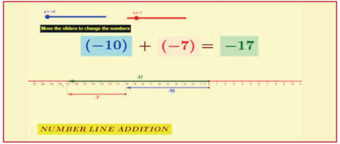
Step 1
Open the Browser type the URL Link given below (or) Scan the QR Code. GeoGebra work book named “Number System” will open. Select Term 1
Step 2
There are several work sheets for each chapter. Select the worksheet “Number System”. In this Number line addition is given. Move the sliders to change the numbers. You can see the answer in green colour arrow.
Step 1
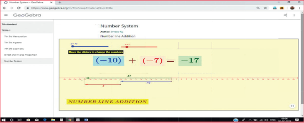
Step 2
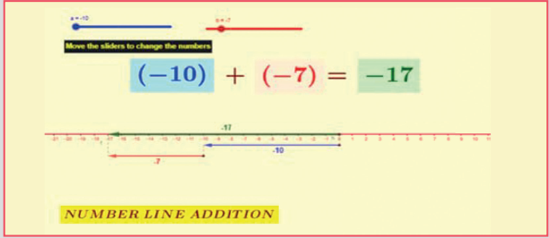
Browse in the link
Number System : https://ggbm.at/f4w7csup
or Scan the QR Code.
Learning Objectives
Recap
In ancient days people used non-standardised measures such as cubit, king’s foot, king’s arm and yard etcetera later, people realised the need for standardised units and International System of Units which were introduced in the year 1971.
Distance |
Weight |
Time |
Distance metre |
Weight gram |
Time second |
The SI Units of various measures are shown in the table.
In class 6, we studied about area and perimeter of rectangle, square and right angled triangle.
Perimeter is the distance around and Area is the region occupied by the closed shape.
Try these
Find the missing values for the following:
Serial Number |
Length |
Breadth |
Area |
Perimeter |
Serial Number 1 |
Length 12 metre |
Breadth 8 metre |
Calculate Area |
Calculate Perimeter |
Serial Number 2 |
Length 15 centimetre |
Calculate Breadth |
Area 90 square centimetre |
Calculate Perimeter |
Serial Number 3 |
Calculate Length |
Breadth 50 milli metre |
Calculate Area |
Perimeter 300 milli metre |
Serial Number 4 |
Length 12 centimetre |
Calculate Breadth |
Calculate Area |
Perimeter 44 centimetre |
Hint
The perimeter of ye rectagle equal to 2 multiplied by (l+b) units
Area of ye rectangle equal to l multiplied by b square units.
(l and b are length and breadth of ye rectangle)
Serial Number |
Side |
Area |
Perimeter |
Serial Number 1 |
Side 60 centimetre |
Calculate Area |
Calculate Perimeter |
Serial Number 2 |
Calculate Side |
Area 64 square metre |
Calculate Perimeter |
Serial Number 3 |
Calculate Side |
Calculate Area |
Perimeter 100 milli metre |
Hint
Perimetre of ye square equal to 4 multiplied by ye units
Area of ye square equal to ye multiplied by ye square units
('ye' is the side of the square)
Serial Number |
Base |
Height |
Area |
Serial Number 1 |
Base 13 metre |
Height 5 metre |
Calculate Area |
Serial Number 2 |
Base 16 centimetre |
Calculate Height |
Area 240 square centimetre |
Serial Number 3 |
Calculate Base |
Height 6 milli metre |
Area 84 square milli metre |
Hint
Area of the right angled triangle equal to1 divided by 2 (b multiplied by h) square units.
('b' is the base and 'h' is the height of the triangle)
We have studied area of four sided shapes such as square and rectangle. Do you think that all the four sided shapes will happen to be square or rectangle? Think!
Let us learn about some more four sided shapes that we see around us through the conversation that follows.
Observe the shapes found in the figure
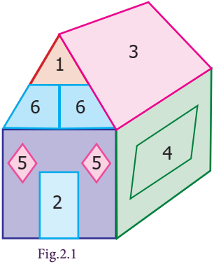
Teacher
Can you tell me the name of the shapes that you see in the figure?
Student
Yes teacher, there is ye triangle, square and rectangle
Teacher
What is the shape, numbered 4 in the figure?
Student
The shape looks like ye rectanlge because the opposite sides are equal and parallel but the adjacent sides do not make right angle. Can we call such shapes as rectangles?
Teacher
Even though the opposite sides are equal and parallel, the adjacent sides do not make right angles instead they make acute and obtuse angles. This shape has ye special name called parallelogram.
Student
Teacher, can you tell me about shape, numbered 5?
Teacher
Try to tell the properties that you know, then I will help you.
Student
Shape 5 has all the sides equal and looks like ye square but the adjacent sides do not make right angles. Is there any special name for such shapes.
Teacher
Yes, it has ye special name called rhombus. What about the shape, numbered 6?
Student
Shape 6 does not have any of the properties of square and rectangle. But one pair of opposite sides are parallel. Does this also have ye different name?
Teacher
Yes, it is called trapezium.
Now, let us learn about all the three new shapes namely parallelogram, rhombus and trapezium.
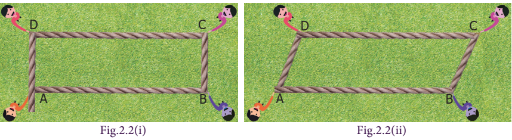
Ask any four students to come with ye rope to form ye rectangle ye B C D as shown in figure 2.2 (1) Students standing at C and D are asked to move 4 equal steps to their left to form the shape as shown in figure 2.2 (2). Now, the new shape formed is called parallelogram. The pair of sides ye B and C D are parallel to each other and the other pair of sides B C and ye D are also parallel to each other. The length of the parallel sides are found to be equal.
Hence, we can conclude that ye parallelogram is ye four-sided closed shape, in which opposite sides are both parallel and equal.
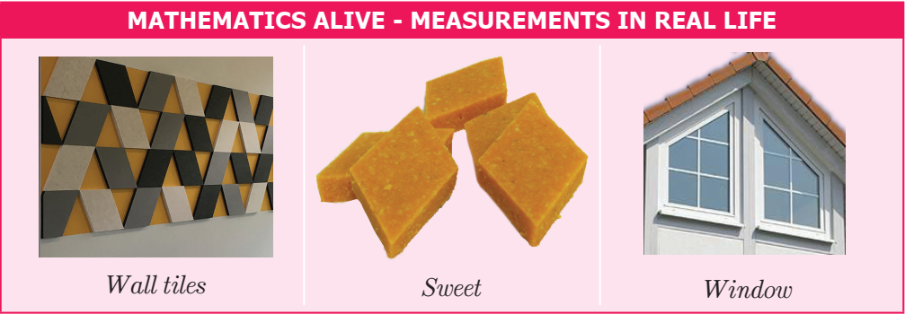
Draw ye parallelogram on ye graph sheet as shown in figure 2.3 (1) and cut it. Draw ye perpendicular line from one vertex to the opposite side. Cut the triangle and shift the triangle to the other side of the parallelogram as shown in figure 2.3 (2). What shape is seen now? It is ye rectangle as in figure 2.3 (3). Hence, the area of the parallelogram is the same as that of the rectangle.
![in the first picture of figure 2.3 1 parallelogram with base and height is drawn on a graph sheet and its height is marked on one of its left side of vertices to its opposite side as a base. in the second picture of figure 2.3 , 2 the height of a parallelogram is cutdown which is a triangle piece and placed on its right side vertices. now the parallelogram looks like a rectangle. in the third picture of figure 2.3 3 The rectangle formed is marked with length and breadth , similarly the triangle piece in the breadth of the rectangle is replaced to its left side look like a parallelogram.](images/image-48.png)
Therefore, area of the rectangle equal to length multiplied by breadth
equal to base multiplied by height square units
equal to b multiplied by h square units
equal to Area of the parallelogram.
Further, the perimeter of ye parallelogram is the sum of the lengths of the four sides.
Think
1. Explain the area of the parallelogram as sum of the areas of the two triangles.
2.ye rectangle is ye parallelogram but ye parallelogram is not ye rectangle. Why?
Try these
1. Count the squares and find the area of the following parallelograms by converting those into rectangles of the same area (without changing the base and height)
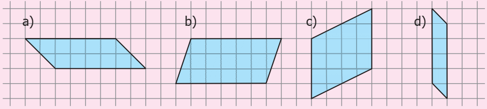
ye) dash squareunits
b) dash squareunits
c) dash squareunits
d) dash squareunits
2. Draw the heights for the given parallelograms and mark the measure of their bases and find the area. Analyse your result.
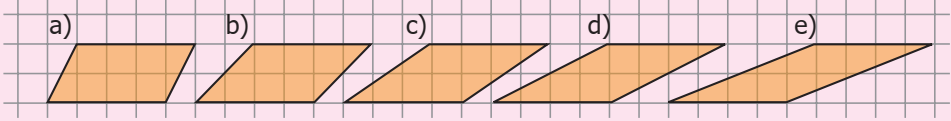
3. Find the area of the following parallelograms by measuring their base and height, using formula
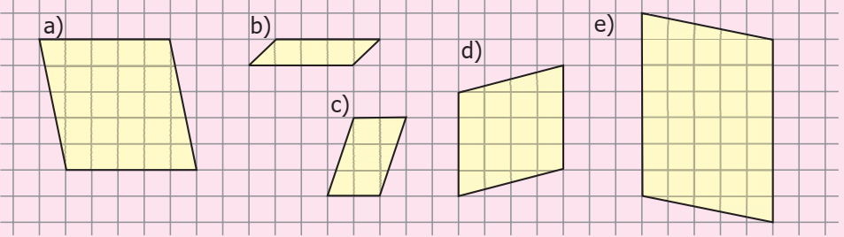
ye) dash squareunits
b) dash squareunits
c) dash squareunits
d) dash squareunits
e) dash squareunits
4. Draw as many parallelograms as possible in ye grid sheet with the area 20 square units each.
Example 2.1
Find the area and perimeter of the parallelogram given in the figures.
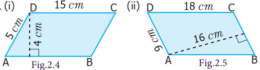
Solution
1) From the figure 2.4
Base of ye parallelogram (b)equal to15 centimeter
Height of ye parallelogram (h)equal to4 centimeter
Area of ye parallelogram equal to b multiplied by h squareunits
Therefore, Area equal to15 multiplied by 4equal to 60 squarecentimeter
Thus, area of the parallelogram is 60 squarecentimeter
Perimeter of the parallelogram equal to sum of the length of the four sides.
equal to (15+5+15+5) equal to 40 centimeter
2) From the figure 2.5
Base of ye parallelogram (b)equal to 9 centimetre
Height of ye parallelogram (h) equal to 16 centimetre
Area of ye parallelogram equal to b multiplied by h squareunits
Therefore, Area equal to9 multiplied by 16 equal to144 squarecentimetre
Thus, area of the parallelogram is 144 squarecentimetres
Perimeter of the parallelogram equal to sum of the length of the four sides.
equal to (18+9+18+9) equal to 54 centimetre
Example 2.2
One of the sides and the corresponding height of the parallelogram are 12 metre and 8 metre respectively. Find the area of the parallelogram.
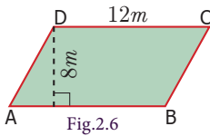
Solution
Given b equal to12 metre, h equal to 8 metre
Area of the parallelogram equal to b multiplied by h squareunits
equal to12 multiplied by 8 equal to 96 squaremetre
Therefore, Area of the parallelogram equal to 96 squaremetre
Example 2.3
Find the height h of the parallelogram whose area and base are 368 squarecentimetre and 23 centimetres respectively.
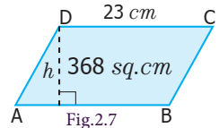
Solution
Given Area equal to 368 squarecentimetre
Base b equal to23 centimetre
Area of the parallelogram equal to 368 squarecentimetre
b multiplied by h equal to 368
23 multiplied by h equal to368
h equal to368 divided by 23 equal to16 centimetre
Thus, the height of the parallelogram equal to16 centimetre
Example 2.4
ye parallelogram has adjacent sides 12 centimetre and 9 centimetres. If the distance between its shorter sides is 8 centimetres find the distance between its longer side.
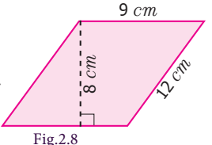
Solution
Given that the adjacent sides of parallelogram are 12 centimetre and 9 centimetres
If we choose the shorter side as base, that is b equal to9 centimetre then distance between the shorter sides is height, that is h equal to 8 centimetre
Area of parallelogram equal to b multiplied by h squareunits equal to9 multiplied by 8equal to72 square centimetre
Again, if we choose longer side as base, that is b equal to12 centimetre then distance between longer sides is height Let it be 'h' units.
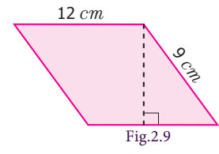
We know that, the area of the parallelogram equal to72 square centimetre
b multiplied by h equal to72
12 multiplied by h equal to72
h equal to72 divided by12 equal to 6 centimetre
Therefore, the distance between the longer sides equal to 6 centimetre
Example 2.5
The base of the parallelogram is thrice its height. If the area is, 192 square centimetre find the base and height.
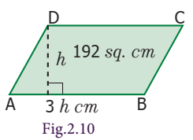
Solution
Let the height of the parallelogram equal to h centimetre
Then the base of the parallelogram equal to3h centimetre
Area of the parallelogram equal to192 square centimetre
b multiplied by h equal to192
3h multiplied by h equal to192
3h square equal to192
h square equal to64
h multiplied by h equal to8 multiplied by 8
h equal to 8 centimetre
base equal to3 h equal to3 multiplied by 8 equal to24 centimetre
Therefore, base of the parallelogram is 24 centimetre and height is 8 centimetre
Do you know?
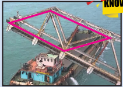
Most of the bridges are constructed using parallelogram as the structural design (For example, Pamban Bridge in Rameswaram)
Engineers use properties of parallelograms to build and repair bridges.
Exercise 2.1
1. Find the area and perimeter of the following parallelograms:
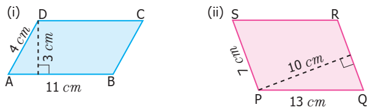
2. Find the missing values.
Serial Number |
Base |
Height |
Area |
Serial Number 1 |
Base 18 centimetre |
Height 5 centimetres |
Calculate Area |
Serial Number 2 |
Base 8 metre |
Calculate Height |
Area 56 square metre |
Serial Number 3 |
Calculate Base |
Height 17 milli metre |
Area 221 square milli metre |
3. Suresh won ye parallelogram-shaped trophy in ye state level chess tournament. He knows that the area of the trophy is 735 square centimetre and its base is 21 centimetres. What is the height of that trophy?
4. Janaki has piece of fabric in the shape of ye parallelogram. Its height is 12 metre and its base is 18 metre. She cuts the fabric into four equal parallelograms by cutting the parallel sides through its mid-points. Find the area of each new parallelogram.
5. ye ground is in the shape of parallelogram. The height of the parallelogram is 14 metres and the corresponding base is 8 metres longer than its height. Find the cost of levelling the ground at the rate of Rupees 15 per square metre.
Objective type questions
6. The perimeter of ye parallelogram whose adjacent sides are 6 centimetre and 5 centimetre is
1) 12 centimetre
2) 10 centimetre
3) 24 centimetre
4) 22 centimetre
7. The area of ye parallelogram whose base 10 metre and height 7 metre is
1) 70 square metre
2) 35 square metre
3) 7 square metre
4) 10 square metre
8. The base of the parallelogram with area is 52 square centimetre and height 4 centimetre is
1) 48 centimetre
2) 104 centimetre
3) 13 centimetre
4) 26 centimetre
9. What happens to the area of the parallelogram, if the base is increased 2 times and the height is halved?
1) Decreases to half
2) Remains the same
3) Increases by two times
4) none
10. In ye parallelogram the base is three times its height. If the height is 8 centimetres then the area is
1) 64 square centimetre
2) 192 square centimetre
3) 32 square centimetre
4) 72 square centimetre
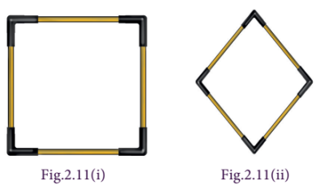
Take four sticks of equal length and four connectors. Connect four sticks to form ye square as shown in the figure 2.11 (1). Then, try to make any two opposite vertices closer as shown in the figure 2.11 (2) such that opposite sides remain parallel to each other to get ye new shape called rhombus.
Hence, we conclude that, in ye parallelogram, if all the sides are equal then it is called ye rhombus.
Note
In ye rhombus,
(1) all the sides are equal
(2) opposite sides are parallel
(3) diagonals divide the rhombus into 4 right angled triangles of equal area.
(4) the diagonals bisect each other at right angles.
Draw ye rhombus on ye graph sheet as shown in the figure 2.12 (1) and cut it. Draw ye perpendicular line from one vertex to the opposite side. Cut the triangle and shift the triangle to the other side of the rhombus as shown in the figure 2.12 (2). What shape do you see? It is ye rectangle Hence the area of the rhombus is the same as that of the rectangle.
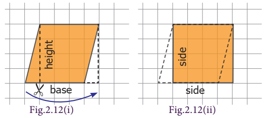
Area of the rectangle
equal to length multiplied by breadth square units
equal to base multiplied by height square units
equal to area of the rhombus
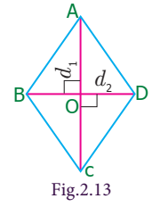
Let us find, area of the rhombus ye B C Dby splitting it into two triangles.
Here ye B equal to B C equal to C D equal to D ye and diagonals ye C (d1) and B D (d2) are perpendicular to each other.
Area of the rhombus ye B C D equal to Area of triangle ye B C +Area of triangle ye D C
equal to 1 divided by 2 multiplied by ye C multiplied by O B + 1 divided by 2 multiplied by ye C multiplied by O D
equal to 1 divided by 2 multiplied by ye C (O B + O D)
equal to 1 divided by 2 multiplied by ye C multiplied by B D
equal to 1 divided by 2 multiplied by d 1 multiplied by d 2 squareunits
Therefore, area of the rhombus equal to 1 divided by 2 (product of diagonals) square units.
Try these
1. Observe the figure 2.14 and answer the following questions.
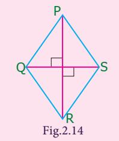
1) Name two pairs of opposite sides
2) Name two pairs of adjacent sides.
3) Name the two diagonals
2. Find the area of the rhombus given in figure 2.15 and figure 2.16
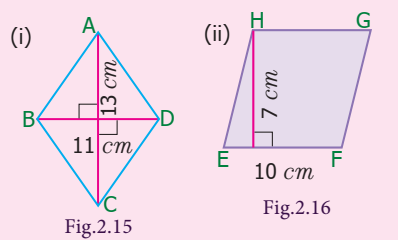
Example 2.6
Find the area of the rhombus whose side is 17 centimetre and the height is 8 centimetre
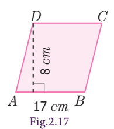
Solution
Given, Base equal to 17 centimetre
Height equal to 8 centimetre
Area of the rhombus equal to b multiplied by h square units
equal to 17 multiplied by 8 equal to 136
Therefore, area of the rhombus equal to 136 square centimetre
Think
1. Can you find the perimeter of the rhombus?
2. Can diagonals of ye rhombus be of the same length?
3. ye square is ye rhombus but ye rhombus is not ye square Why?
4. Can you draw ye rhombus in such ye way that the side is equal to the diagonal?
Example 2.7
Calculate the area of the rhombus having diagonals equal to 6 metre and 8 metre
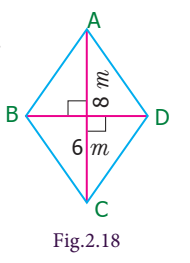
Solution
Given: d1 equal to 6 metre, d2 equal to 8 metre
Area of the rhombus equal to 1 divided by 2 multiplied by (d 1 multiplied by d 2) squareunits
equal to 1 divided by 2 multiplied by (6 multiplied by 8)
equal to 48 divided by 2
equal to 24 square metre
Hence, area of the rhombus is 24 square metre.
Example 2.8
If the area of the rhombus is 60 square centimetre and one of the diagonals is 8 centimetres, find the length of the other diagonal.
Solution
Given, the length of one diagonal d1equal to 8 centimetre
Let, the length of the other diagonal be d2 centimetre
Area of the rhombus equal to 60 squarecentimetre (given)
1 divided by 2 multiplied by (d 1 multiplied by d 2) equal to 60
1 divided by 2multiplied by (8 multiplied by d 2) equal to 60
(8 multiplied by d 2) equal to 60 multiplied by 2
D 2 equal to120 divided by 8
equal to15
Therefore, length of the other diagonal is 15 centimetres.
Example 2.9
The floor of an office building consists of 200 rhombus shaped tiles and each of its length of the diagonals are 40 centimetre and 25 centimetres. Find the total cost of polishing the floor at Rupees 45 per square metre.
Solution
Given, the length of the diagonals of ye rhombus shaped tile are 40 centimetre and 25 centimetres.
The area of one tile equal to 1 divided by 2 multiplied by (d 1 multiplied by d 2) square units
equal to1 divided by 2 multiplied by (40 multiplied by 25)
equal to 500 squarecentimetre
Therefore, the area of 200 such tiles equal to200 multiplied by 500
equal to one lakh square centimetre
equal to one lakh divided by ten thousand (1 square metre equal to ten thousand square centimetre
equal to10 squaremetre
Therefore, the cost of polishing 200 such tiles at the rate of Rupees 45 per square metre
equal to10 multiplied by 45equal to Rupees 450
Do you know?
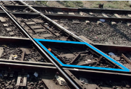
In the terminology of railways, “Diamond Crossing” refers to the point where two railway lines cross, forming the shape of rhombus at the crossing point. The most famous diamond crossing is at Nagpur, where lines from the North, South, East and Western railways meet.
Exercise 2.2
1. Find the area of rhombus P Q R S shown in the following figures.
1)
2)
2. Find the area of ye rhombus whose base is 14 centimetre and height is 9 centimetre.
3. Find the missing value.
Serial Number |
Diagonal (d1) |
Diagonal (d2) |
Area |
Serial Number 1 |
Diagonal (d1)19 centimetre |
Diagonal (d2)16 centimetre |
Calculate Area |
Serial Number 2 |
Diagonal (d1)26 metre |
Calculate Diagonal (d2) |
Area 468 Square metre |
Serial Number 3 |
Calculate Diagonal (d1) |
Diagonal (d2)12 milli metre |
Area 180 square milli metre |
4. The area of ye rhombus is 100 square centimetre and length of one of its diagonals is 8 centimetre Find the length of the other diagonal.
5.ye sweet is in the shape of rhombus whose diagonals are given as 4 centimetre and 5 centimetre. The surface of the sweet should be covered by an aluminium foil. Find the cost of aluminium foil used for 400 such sweets at the rate of Rupees 7 per 100 square centimetre.
Objective type questions
6. The area of the rhombus with side 4 centimetre and height 3 centimetre is
1) 7 square centimetre
2) 24 square centimetre
3) 12 square centimetre
4) 10 square centimetre
7. The area of the rhombus when both diagonals measuring 8 centimetre is
1) 64 square centimetre
2) 32 square centimetre
3) 30 square centimetre
4) 16 square centimetre
8. The area of the rhombus is 128 square centimetre and the length of one diagonal is 32 centimetre. The length of the other diagonal is
1) 12 centimetre
2) 8 centimetre
3) 4 centimetre
4) 20 centimetre
9. The height of the rhombus whose area 96 square metre and side 24 metre is
1) 8 metre
2) 10 metre
3) 2 metre
4) 4 metre
10. The angle between the diagonals of ye rhombus is
1) 120 Degree
2) 180 Degree
3) 90 Degree
4) 100 Degree
We are familiar with parallelogram and rhombus. What will happen in ye parallelogram if one pair of parallel sides are not equal? Can you draw it? How will it look like? The shape looks as given in figure 2.19.
ye parallelogram with one pair of non-parallel sides is known as ye Trapezium.
The distance between the parallel sides is the height of the trapezium.
Here the sides ye D and B C are not parallel, but ye B is parallel to D C.
Isosceles Trapezium
If the non-parallel sides of ye trapezium are equal (ye D equal to B C) then, it is known as an isosceles trapezium.
Ye B C D is ye trapezium with parallel sides ye B and D C measuring ‘ye’ units and ‘b’ units respectively. Let the distance between the two parallel sides be ‘h’ units. The diagonal B D divides the trapezium into two triangles ye B D and B C D.
Area of the trapezium equal to area of triangle ye B D + area of triangle B C D
equal to 1 divided by 2 multiplied by ye B multiplied by h + 1 divided by 2 multiplied by D C multiplied by h [Since the two triangles ye B D and B C D have same heights]
Area of ye trapezium equal to1 divided by 2 multiplied by {h multiplied by (ye B + D C)}
Therefore, Area of the trapezium equal to 1 divided by 2 multiplied by h multiplied by (ye + b) square units
Example 2.10
Find the area of the trapezium whose height is 14 centimetre and the parallel sides are 18 centimetre and 9 centimetre of length.
Solution
Given, height (h) equal to 14 centimetre
Parallel sides are (ye) equal to 18 centimetre and (b) equal to 9 centimetre
Area of the trapezium equal to1divided by 2 multiplied by h multiplied by (a +b)
equal to1 divided by 2 multiplied by 14 multiplied by (18 + 9)
equal to7 multiplied by 27
equal to189 square centimetre.
Therefore, area of the trapezium is 189 squarecentimetre.
Example 2.11
The parallel sides of ye trapezium are 23 centimetre and 12 centimetre. The distance between the parallel sides is 9 centimetre. Find the area of the trapezium.
Solution
Given, height (h) equal to 9 centimetre
Parallel sides are (ye) equal to 23 centimetre and (b) equal to 12 centimetre
Area of the trapezium equal to1divided by2multiplied by h (a +b)
equal to1divided by2multiplied by 9 multiplied by (23+12)
equal to1divided by2multiplied by 9 multiplied by (35)
equal to157.5 square centimetre
Therefore, Area of the trapezium is 157.5 square centimetre
Example 2.12
The area of ye trapezium is 828 squarecentimetre. If the lengths of its parallel sides are 19.6 centimetre and 16.4 centimetre, find the distance between them.
Solution
Given, Area of the Trapezium equal to 828 centimetresquare
1divided by2 multiplied by h multiplied by (a +b) equal to 828
1divided by2 multiplied by h multiplied by (19.6+16.4) equal to 828
1divided by2 multiplied by h multiplied by (36) equal to 828
h multiplied by (18) equal to 828
h equal to 828 divided by18
h equal to 46 centimetre
Therefore, distance between the parallel sides equal to 46 centimetre
Example 2.13
The area of ye trapezium is 352 square centimetre and the distance between its parallel sides is 16 centimetre. If one of the parallel sides is of length 25 centimetre then find the length of the other side.
Solution
Let, the length of the required side be x centimetre
Then, area of the trapezium equal to1divided by 2 multiplied by h multiplied by (a +b) square units
equal to1divided by2multiplied by 16 multiplied by (25+x)
equal to200+8x
But, the area of the trapezium equal to 352 squarecentimetre (given)
Therefore, 200+8x equal to 352
⟹8x equal to 352 minus 200
⟹8x equal to 152
⟹x equal to152 divided by 8
⟹x equal to19
Therefore, the length of the other side is 19 centimetre.
Think
1. Can you find the perimeter of the trapezium? Discuss.
2. Mention any three life situations where the isosceles trapeziums are used.
Example 2.14
The collar of ye shirt is in the form of isosceles trapezium whose parallel sides are 17 centimetre and 14 centimetre and the distance between them is 4 centimetre Find the area of canvas that will be used to stitch the collar.
Solution
Given height (h) equal to4 centimetre
Parallel sides are (a) equal to17 centimetre and (b) equal to14 centimetre
Area of the trapezium equal to1divided by2multiplied by h (a +b) square units
equal to1divided by2multiplied by 4 (17+14)
equal to1divided by2multiplied by 4 (31)
equal to62 square centimetre
Therefore, the area of canvas used is 62 square centimetre.
Do you know?
Though there are various common types of cross sections available for irrigation canals, trapezoidal cross section is widely used, because it prevents overflowing during heavy rains, maximum water flow is possible with minimum time (least frictional resistance) and safety measures can be taken easily while someone or something falls into it.
Exercise 2.3
1. Find the missing values.
Serial Number |
Height ‘h’ |
Parallel side ‘ye’ |
Parallel side ‘b’ |
Area |
Serial Number 1 |
Height ‘h’ 10 metre |
Parallel side ‘ye’ 12 metre |
Parallel side ‘b’ 20 metre |
Calculate Area |
Serial Number 2 |
Calculate Height ‘h’ |
Parallel side ‘ye’ 13 centimetre |
Parallel side ‘b’ 28 centimetre |
Area 492 square centimetre |
Serial Number 3 |
Height ‘h’ 19 metre |
Calculate Parallel side ‘ye’ |
Parallel side ‘b’ 16 metre |
Area 323 square metre |
Serial Number 4 |
Height ‘h’ 16 centimetre |
Parallel side ‘ye’ 15 centimetre |
Calculate Parallel side ‘b’ |
Area 360 square centimetre |
2. Find the area of ye trapezium whose parallel sides are 24 centimetre and 20 centimetre and the distance between them is 15 centimetre.
3. The area of ye trapezium is one thousand five hundred and eightysix square centimetre the distance between its parallel sides is 26 centimetre If one of the parallel sides is 84 centimetre then, find the other side.
4. The area of ye trapezium is one thousand and eighty square centimetre If the lengths of its parallel sides are 55.6 centimetre and 34.4 centimetre, find the distance between them.
5. The area of ye trapezium is 180 square centimetre and its height is 9 centimetre If one of the parallel sides is longer than the other by 6 centimetre, find the length of the parallel sides.
6. The sunshade of ye window is in the form of isosceles trapezium whose parallel sides are 81 centimetre and 64 centimetre and the distance between them is 6 centimetre Find the cost of painting the surface at the rate of Rupees 2 per square centimetre.
7.ye window is in the form of trapezium whose parallel sides are 105 centimetre and 50 centimetre respectively and the distance between the parallel sides is 60 centimetre Find the cost of the glass used to cover the window at the rate of Rupees 15 per 100 square centimetre.
Objective type questions
8. The area of the trapezium, if the parallel sides are measuring 8 centimetre and 10 centimetre and the height 5 centimetre is
1) 45 square centimetre
2) 40 square centimetre
3) 18 square centimetre
4) 50 square centimetre
9. In ye trapezium if the sum of the parallel sides is 10 centimetre and the area is 140 square centimetre, then the height is
1) 7 centimetre
2) 40 centimetre
3) 14 centimetre
4) 28 centimetre
10. When the non-parallel sides of ye trapezium are equal then it is known as
1) ye square
2) ye rectangle
3) an isosceles trapezium
4)ye parallelogram
Exercise 2.4
Miscellaneous Practice Problems
1. The base of the parallelogram is 16 centimetre and the height is 7 centimetre less than its base Find the area of the parallelogram.
2. An agricultural field is in the form of ye parallelogram, whose area is 68.75 square hectometre. The distance between the parallel sides is 6.25 hectometre Find the length of the base.
3.ye square and ye parallelogram have the same area. If the side of the square is 48 metre and the height of the parallelogram is 18 metre, find the length of the base of the parallelogram.
4. The height of the parallelogram is one fourth of its base. If the area of the parallelogram is 676 square centimetre, find the height and the base.
5. The area of the rhombus is 576 square centimetre and the length of one of its diagonals is half of the length of the other diagonal then find the length of the diagonals.
6.ye ground is in the form of isosceles trapezium with parallel sides measuring 42 metre and 36 metre long. The distance between the parallel sides is 30 metre Find the cost of levelling it at the rate of Rupees 135 square metre.
Challenge Problems
7. In ye parallelogram P Q R S (see the diagram) P M and P N are the heights corresponding to the sides Q R and R S respectively If the area of the parallelogram is 900 square centimetre and the length of P M and P N are 20 centimetre and 36 centimetre respectively, find the length of the sides QR and SR.
8. If the base and height of ye parallelogram are in the ratio 7 is to 3 and the height is 45 centimetre then, find the area of the parallelogram.
9. Find the area of the parallelogram ye B C D, if ye C is 24 centimetre and B E equal to D F equal to 8 centimetre.
10. The area of the parallelogram ye B C D is one thousand four hundred and seventy square centimetre If ye B equal to 49 centimetre and ye D equal to 35 centimetre then, find the heights D F and B E.
11. One of the diagonals of ye rhombus is thrice as the other If the sum of the length of the diagonals is 24 centimetre, then find the area of the rhombus.
12.ye man has to build ye rhombus shaped swimming pool One of the diagonal is 13 metre and the other is twice the first one Then find the area of the swimming pool and also find the cost of cementing the floor at the rate of Rupees 15 per square centimetre.
13. Find the height of the parallelogram whose base if four times the height and whose area is 576 squarecentimetre.
14. The table top is in the shape of trapezium with measurements given in the figure. Find the cost of the glass used to cover the table at the rate of Rupees 6 per 10 square centimetre.
15. Arivu has ye land ye B C D with the measurements given in the figure. If ye portion ye B E D is used for cultivation (where E is the mid-point of D C), find the cultivated area.
Summary
ICT Corner
Expected Result is shown in this picture
Step 1
Open the Browser type the URL Link given below (or) Scan the QR Code. GeoGebra work sheet name “ seventhth std Mensuration” will open. In the right side of the work sheet there are three sliders to change Length, Breadth and Corner angle.
Step 2
Move the sliders to get, Parallelogram or Rectangle or Square and see the points given and observe.
Step 1
Step 2
Browse in the link
Mensuration: https://ggbm.at/zzvqg9vh
or Scan the QR Code.

Learning Objectives
Recap
In class 6, we have learnt how geometric patterns and number patterns can be generalised using variables and constants.ye variable takes different values which is represented by x, y, zed etcetera and constant has numerical values such as 31, minus7,3divided by10 etcetera.
For example
1) The number of Ice candy sticks required to from one square is four sticks, for two squares is eight sticks, for three squares is twelve sticks and so on.
Continuing in the same way, it is clear that if the number of squares to be formed is k (any natural number), then the number of candy sticks required will be 4 multiplied by k equal to 4 k, where k is ye variable and 4 is ye constant.
This can be observed in the following table:
Number of squares formed |
Number of Ice candy sticks required |
Number of squares 1 |
Number of Ice candy sticks 4 multiplied by 1 equal to 4 |
Number of squares 2 |
Number of Ice candy sticks 4 multiplied by 2 equal to 8 |
Number of squares 3 |
Number of Ice candy sticks 4 multiplied by 3 equal to12 |
So on |
So on |
Number of squares formed k |
Number of Ice candy sticks 4 multiplied by k equal to4 k |
So on |
So on |
2) Observe the following pattern
7 multiplied by 9 equal to 9 multiplied by 7,
23 multiplied by 56 equal to 56 multiplied by 23
999 multiplied by 888 equal to 888 multiplied by 999
This can be generalised as ye multiplied by b equal to b multiplied by ye, where ye, b are variables.
Try these
1. Identify the variables and constants among the following terms:
ye,11 minus 3 x, x y, minus 89, minus m, minus n,5,5 ye b, minus 5,3y,8p q r,18, minus 9 t, minus 1, minus 8
2. Complete the following table:
Serial Number |
Verbal statements |
Algebraic statements |
Serial Number 1 |
Verbal statements 12 more than x |
Calculate Algebraic statements |
Serial Number 2 |
Calculate Verbal statements |
Algebraic statements M minus 7 |
Serial Number 3 |
Calculate Verbal statements |
Algebraic statements 2 p+1 |
Serial Number 4 |
Verbal statements Twice the sum of y and zed |
Calculate Algebraic statements |
Serial Number 5 |
Calculate Verbal statements |
Algebraic statements 2 k minus 3 |
Serial Number 6 |
Verbal statements 5 is reduced from the product of x and y |
Calculate Algebraic statements |
Note: Algebraic statements are also known as Algebraic expressions.
Consider the situation. Murugan’s mother gave him Rupees 100 to buy 1 kilogram of sugar. If the shopkeeper returned Rupees 58, what is the price of sugar?

Let us see another situation. Jayashri wants to share chocolates among her friends on her birthday. She had Rupees 190 in her piggy bank. If she could buy 95 chocolates with that amount, then what is the price of one chocolate?
Did you get the answers? How did you work out?
You might have created numeric expressions like 100 minus 58 equal to question mark (?) and 190divided by95equal to question mark (?) and then solved it. Isn’t it? In both cases, question mark (?) stands for an unknown value. Instead of using question marks everytime, we could use the letters like x, y, a, b, etcetera
Let us learn more about this interesting branch of mathematics which deals with the methods of finding the unknown values.

We combine variables and constants using the mathematical operations addition and subtraction to construct algebraic expressions.
For example, the expression 6x+1 is obtained by adding two parts 6x and 1.Here 6x and 1 are known as terms.The term6x is ye variable and the term 1 is ye constant, since it is not multiplied by ye variable. Also we say that 6, x are the factors of the term6x.
Similarly, in the expression3 ye b+5c, the terms are 3 ye b and 5c.The factors of the term 3 ye b are 3, ye and. b In the same way, the factors of the term 5c are 5 and c.
Now let us further try to understand the terms of an algebraic expression.
Observe the figure 3.2

What is the perimeter of the given figure?
The perimeter, ‘P’ equal to x+5+6+y+5+4+zed+w units,
equal to x+y+zed+w+(5+6+5+4)
equal to x+y+zed+w+20
Where x,y,zed,w are variables and 20 is constant.
Note that, in the above expression, 5 terms are combined by using addition.
Consider another example as. 6x minus 5y+3 To find the terms of the expression, we write 6x+(minus 5y)+3. Here the terms are 6x,(minus 5y) and 3. An expression may have one, two, three or more terms.
Also,ye term may be any one of the following:
1) ye constant such as 8,minus 11,7,minus 1, etcetera
2) ye variable such as x ,ye ,p ,y, etcetera
3) ye product of two or more variables such as x y,p q,ye b c, etcetera
4) ye product of constant and ye variable or variables such as 5x,minus 7 p q,3 ye b c, etcetera
Think
Can we use the operations multiplication and division to combine terms?
Note
An algebraic expression can have one term, two terms or more than two terms.An expression with one term is called ye monomial, two terms is called ye binomial and three terms is called ye trinomial. An expression with one or more terms is called ye polynomial. For example, the expression 2x is ye monomial, 2 x+3 y is ye binomial, and 2 x+3 y+4 zed is ye trinomial. All the expressions given above are polynomials.
Activity
To further strengthen the understanding of variables and constants let us do the following activity.
Consider, two baskets of cards.One containing constants and the other containing variables.Pick ye constant from the first basket and ye variable from the second basket and form ye term by expressing it as ye product. Write all the possible terms that can be constructed using the given constants and variables.

Try this
Complete the following table by forming expressions using the terms given. One is done for you.
Terms |
Algebraic Expressions |
|
|
|
Terms 7 x,2 y,minus 5zed |
Algebraic Expressions 7 x+2 y |
2 y minus 5 zed |
7 x minus 5 zed |
7 x+2 y minus 5 zed |
Terms 3 p,4 q,5 r |
Form the Algebraic Expressions |
Form the Algebraic Expressions |
Form the Algebraic Expressions |
Form the Algebraic Expressions |
Terms 9 m,n,minus 8 k |
Form the Algebraic Expressions |
Form the Algebraic Expressions |
Form the Algebraic Expressions |
Form the Algebraic Expressions |
Terms ye,minus 6 b,3 c |
Form the Algebraic Expressions |
Form the Algebraic Expressions |
Form the Algebraic Expressions |
Form the Algebraic Expressions |
Terms 12 x y,9 x,minus y |
Form the Algebraic Expressions |
Form the Algebraic Expressions |
Form the Algebraic Expressions |
Form the Algebraic Expressions |
Example 3.1
Identify the variables, terms and number of terms in each of the following expressions:
1) 12 minus x
2) 7+2 y
3) 29+3x+5 y
4) 3x minus 5+7 zed
Solution
Serial Number |
Expressions |
Variables |
Terms |
Number of terms |
Serial Number 1 |
Expressions 12 minus x |
Variables x |
Terms 12,minus x |
Number of terms 2 |
Serial Number 2 |
Expressions 7+2 y |
Variables y |
Terms 7,2 y |
Number of terms 2 |
Serial Number 3 |
Expressions 29+3 x+5 y |
Variables x,y |
Terms 29,3 x,5 y |
Number of terms 3 |
Serial Number 4 |
Expressions 3 x minus 5+7 zed |
Variables x,zed |
Terms 3 x,minus 5,7 zed |
Number of terms 3 |
ye term of an algebraic expression is ye product of factors. Here each factor or product of factors is called the co-efficient of the remaining product of factors.
For example, in the term 5 x y,5 is the co-efficient of remaining factor product, x y.Similarly x is the co-efficient of 5 y; 5 x is the co-efficient of y.The constant 5 is called the numerical co-efficient, and others are called simply co-efficients.
ye co-efficient can either be ye numerical factor or an algebraic factor or product of both.
Since we often talk about the numerical co-efficients of ye term, if we say “co-efficient” it will be understood that we are referring to the numerical co-efficient.If no numerical co-efficient appears in ye term, then the co-efficient is understood to be 1.
Consider the term minus 6 ye b. It is the product of three factors minus 6,ye and b.Also it can be written as ye product of two factors such as minus 6 ye multiplied by b,minus 6 b multiplied by ye and minus 6 multiplied by ye b.
The co-efficient of ‘ye’ is minus 6 b
The co-efficient of ‘b’ is minus 6 ye
The co-efficient of ‘ye b’ is minus 6
Thus -6 is the numerical co-efficient in the term minus 6 ye b.
Example 3.2
Find the numerical co-efficient of the following terms.Also, find the co-efficient of x and y in each of the term:3 x, minus 5 x y,minus y zed,7 x y zed,y,16 y x.
Solution
Term |
Numerical co-efficient |
Co-efficient of x |
Co-efficient of y |
Term 3 x |
Numerical co-efficient 3 |
Co-efficient of x 3 |
Co-efficient of y Not possible |
Term Minus 5 x y |
Numerical co-efficient Minus 5 |
Co-efficient of x Minus 5 y |
Co-efficient of y Minus 5 x |
Term Minus y zed |
Numerical co-efficient Minus 1 |
Co-efficient of x Not possible |
Co-efficient of y Minus zed |
Term 7 x y zed |
Numerical co-efficient 7 |
Co-efficient of x 7 y zed |
Co-efficient of y 7 x zed |
Term y |
Numerical co-efficient 1 |
Co-efficient of x Not possible |
Co-efficient of y 1 |
Term 16 y x |
Numerical co-efficient 16 |
Co-efficient of x 16 y |
Co-efficient of y 16 x |
When you visit ye market, you can see that, the vegetables and fruits of same kind are kept as separate heaps. Similarly, we can group the same kind of terms in an algebraic expression.


For example, the expression 7 x+5 x+12 x minus 16 has 4 terms but the first three terms have the same variable factor x. We say that 7x,5x and 12x are like terms.
However, the terms 12 x and minus 16 have different variable factors. The term 12x has the variable x and the term minus 16 is ye constant.Such terms are called unlike terms.
Consider another example. In the expression 14 xy minus 7y minus 12 y x+5 y minus 10, the terms minus 7 y and 5 y are like terms. Also, 14 x y and minus 12 y x are like terms.But , we cannot group the terms 14 x y,7 y and minus 10, as they do not have the same variables, thus called unlike terms.
Hence, the terms of an expression having the same variable(s) are called like terms; otherwise, they are called unlike terms. The followig activity is helpful in identifying the like terms and unlike terms.
Try this
Identify the like terms among the following and group them:
7 x y,19 x,1,5 y, x,3 y x,15, minus 13 y,6 x,12 x y, minus 5,16 y, minus 9 x,15 x y,23,45 y, minus 8 y,23 x, minus y,11.
Note
Terms with the variables x y and y x are like terms, because of the commutative property of multiplication x multiplied by y equal toy multiplied by x. Also, terms obey the commutative property of addition, that is x +y equal to y +x.
Points to remember while identifying like terms are as follows:
1) In each of the term ignore numerical co-efficient.
2) Observe the algebraic variables of the terms. They must be the same. (Here the order in which the variables are multiplied should not be considered).
Sometimes we would like to assign definite values to the variables in an expression to find the value of that expression. This situation arises in many real-life problems.

For example, if the teacher of class 7 wants to select 10 students for ye competition, for which she can choose any number of boys and girls.
If the number of boys are x and the number of girls are y, then the required algebraic expression to find the total number of participants is. x+y
Here, the total number of students to be selected is 10 and if only two girls are interested to participate in the competition, then how many boys shuld be selected? Obviously, if y equal to2 then x+2 equal to10. The value xequal to8 satisfies the equation. So, the number of boys to be selected is 8.
Follow the steps to obtain the value.
Step 1
Study the problem. Fix the variable and write the algebraic expression.
Step 2
Replace each variable by the given numerical value to obtain an numerical expression.
Step 3
Simplify the numerical expression by BIDMAS method.
Step 4
The value so obtained is the required value of the expression.
Try this
Try to find the value of the following expressions, if p equal to 5 and q equal to 6.
1) p+q
2) q minus p
3) 2p+3q
4) pq minus p minus q
5) 5pq minus 1
Example 3.3
If x equal to 3,y equal to 2 find the value of,
1) 4x+7y
2) 3x+2y minus 5
3) x minus y
Solution
1) 4x+7y equal to4 multiplied by 3+7 multiplied by 2equal to12+14equal to26
2) 3x+2y minus 5equal to3 multiplied by (3)+2 multiplied by (2) minus 5equal to9+4 minus 5equal to8
3) x minus y equal to3 minus 2equal to1

Example 3.4
Find the value of,
1) 3 yem + 2 n
2) 2 yem minus n
3) yem n minus 1, given that yem equal to 2,n equal to minus 1.
Solution
1) 3 yem + 2 n equal to 3 multiplied by (2) + 2 multiplied by (minus 1) equal to 6 minus 2 equal to 4
2) 2 yem minus n equal to2 multiplied by (2) minus (minus 1) equal to 4 + 1 equal to 5
3) yem n minus 1 equal to (2) multiplied by ( minus 1) minus 1equal to minus 2 minus 1equal to minus 3
Exercise 3.1
1. Fill in the blanks:
1) The variable in the expression 16 x minus 7 is dash
2) The constant term of the expression 2 y minus 6 is dash
3) In the expression25 yem+14 n, the type of the term are dash terms.
4) The number of terms in the expression 3 ye b+4c minus 9 is dash
5) The numerical co-efficient of the term minus x y is dash.
2. Say True or False.
1) x+( minus x)equal to0
2) The co-efficient of ye b in the term 15 ye b c is. 15
3) 2 p q and minus 7 q p are like terms
4) When y equal to minus 1, the value of the expression 2 y minus 1 is 3
3. Find the numerical coefficient in each of the following terms: minus 3 y x,12 k,y,121 b c, minus x,9 p q,2 ye b
4. Write the variables, constants and terms of the following expressions.
1) 18 + x minus y
2) 7 p minus 4 q + 5
3) 29 x + thirteen y
4) b + 2
5. Identify the like terms amont the following: 7x, 5y, minus 8x,12y,6zed,zed, minus 12x, minus 9y,11zed
6. If x equal to 2and y equal to3,then find the value of the following expressions.
1) 2x minus 3y
2) x+y
3) 4y minus x
4) x+1 minus y
Objective type questions
7. An algebraic expressions which is equivalent to the verbel statement “Three times the sum of x and y is
1) 3 multiplied by (x+y)
2) 3+x+y
3) 3x+y
4) 3+xy
8. The numerical co efficient of minus 7 yem n is
1) 7
2) minus 7
3) p
4) minus p
9. Choose the pair of like terms
1) 7p,7x
2) 7r,7x
3) minus 4x,4
4) minus 4x,7x
10. The value of 7ye minus 4 b when ye equal to3,b equal to 2is
1) 21
2) 13
3) 8
4) 32
We have discussed about algebraic expressions. Now, let us see how to add and subtract algebraic expressions.
Situation:
Kannan has some number of beads and Aravind has 20 beads more than Kannan. Kavitha says that she has 3 more beads than the number of beads that Kannan and Aravind together have. How will you find the number of beads that Kavitha have?
Now we see that even though 3 persons are involved with 3 unknown quantities, we make use of one variable, since all the three variables are related.
Let that one variable be x which represents the number of beads that Kannan has.
Aravind has 20 more beads than Kannan. That is. x + 20
Kavitha has 3 beads more than Kannan and Aravind have together. So, the number of beads that Kavitha has is given by x+ x+ 20+3.
Now, we change the situation. Instead of Aravind has 20 more beads than Kannan, suppose Aravind has 20 beads less than Kannan.
If Kavitha has 3 beads more than what Kannan and Aravind have together, then find the number of beads that Kavitha has.
Now, Aravind has x minus 20 beads. So, the number of beads that Kavitha has, is given by x+x minus 20 +3.
For example, to add 8 ye b, 4 ye b, and 2 ye b, where ye b is variable, we add the co efficients alone, that is 8 ye b+4 ye b+2 ye b equal to(8+4+2) ye b equal to14 ye b equal to14 ye b.
In the same way, we can add the algebraic expressions. Let us try to add the expressions 11y+7 and 5y minus 3, where 11y and 5y are like terms with ye variable y and 7 and minus 3 are constants (like terms).
Hence, (11 y+7)+(5 y minus 3)equal to [11 y+5 y]+[7+( minus 3)]
equal to(11+5) y+(7 minus 3)
equal to16 y +4.
Try this
Add the terms:
1) 3 p,14 p
2) yem,12 yem,21 yem
3) 11 ye b c,5 ye b c
4) 12 y, minus y
5) 4 x,2 x, minus 7 x
Example 3.5
Add the expressions:
1) p q minus 1 and 3 p q+2
2) 8 x+3 and 1 minus 7 x
Solution
1) p q minus 1 + 3 p q+2 equal to(p q+3 p q)+( minus 1+2)
equal to (1+3) p q+1
equal to 4 p q+1
2) 8x +3 + 1 minus 7x equal to 8x+3+1 minus 7x
equal to (8x minus 7x)+(3+1)
equal to (8 minus 7) x+4
equal to x+4
Subtraction of ye term can be looked as addition of its additive inverse as we saw in subtraction of integers. To understand subtraction of algebraic expression, let us consider subtraction of algebraic expression with one term.
For example, to subtract 6 y from 12 y, we can add 12 y and (minus 6 y).
Thus we have, 12 y+( minus 6y)equal to12 y minus 6y
equal to(12 minus 6) yequal to6 y.
Now, let us subtract minus yem n from 3 yem n. Additive inverse of minus m n is mn. Hence, we have to add yem n with 3 yem n. Thus, 3 yem n + m nequal to(3+1) yem n equal to 4 yem n
Similarly, we can subtract two algebraic expressions. For example, to subtract 13 ye minus 2 from
25 ye + eleven, we have to add the additive inverse of 13 ye minus 2 with 25 ye + eleven
Additive inverse of 13 ye minus 2 is minus (13 ye minus 2) equal to minus 13 ye + 2
Therefore, 25 ye+ eleven minus (13 ye minus 2)equal to(25 ye + eleven)+( minus 13 ye + 2)
equal to(25 ye minus 13 ye) + (eleven + 2)
equal to12 ye + 13
Note
1. Subtracting 4y is the same as adding minus 4y and subtracting minus 11x is the same as adding 11x.
2. We know that, minus 3 is the additive inverse of 3. In the same way minus x is an additive inverse of x. Hence, x, minus x are equal in numerical value; but opposite in sign. Therefore, x+( minus x)equal to0. But, x minus (minus x)equal tox+xequal to2x.
Example 3.6
Subtract:
1) 7pq from 11pq
2) minus ye from ye
3) 5x+7 from 21x+9
Solution
1) 11 p q minus 7 p q. Additive inverse of 7 p q is minus 7 p q
11 p q+( minus 7 p q)equal to11 p q minus 7 p qequal to(11 minus 7) p qequal to4 p q
2) ye minus (minus ye) Additive inverse of minus ye is ye
So, ye+ye equal to2 ye
3) 21x+9 minus (5x+7). Additive inverse of 5x+7is minus (5x+7)
(21x+9)+[ minus (5x+7)] equal to(21x+9) minus (5x+7)
equal to21x+9 minus 5x minus 7
equal to(21 minus 5) x+(9 minus 7)
equal to16x+2.

Think
3x+(y minus x) equal to3x+y minus x But, 3x minus (y minus x)≠3x minus y minus x. Why?
Example 3.7
Simplify: 100x+ ninety nine y minus 98z+ ten x+ ten y+ ten zed minus x minus y+zed
Solution
In the given algebraic expression, x, y, zed are the varibles.
Let us group like terms.
100x+ ninety nine y minus 98 zed+ ten x+ ten y+ ten zed minus x minus y+zed
equal to(100x+ ten x minus x)+( ninety nine y+ ten y minus y)+( minus 98zed+ ten zed+zed)
equal to(100+ ten minus 1)x+( ninety nine + ten minus 1)y+( minus 98+ ten +1)zed
equal to(110 minus 1)x+(109 minus 1)y+( minus 98+11)zed
equal to109x+one hundred and eight y+( minus 87)zed
equal to109x+ one hundred and eight y minus 87zed
Note
For adding or subtracting algebraic expressions, we can write the like terms one after the other horizontally by using brackets or one below the other vertically.
Example 3.8
1) Add: 3x minus 4y+zed and 2x minus zed+3y
2) Subtract: 2x minus 5y from 4x+3y
Solution
1) (3x minus 4y+zed) +( 2x minus zed+3y)
equal to(3x+2x)+( minus 4y+3y)+(zed minus zed)
equal to(3+2)x+( minus 4+3)y+(1 minus 1)zed
equal to 5x minus 1y+ zero zed
equal to 5x minus y

2) (4x+3y) minus (2x minus 5y)
equal to(4x+3y)+( minus 2x+5y)
equal to(4x minus 2x)+(3y+5y)
equal to(4 minus 2)x+(3+5)y
equal to2x+8y

Think
What will you get if twice ye number is subtracted from thrice the same number?
Example 3.9
Mani and his friend Mohamed went to ye hotel for dinner. Mani had 2 idlys and 2 dosas whereas Mohamed had 4 idlys and 1 dosa. If the price of each idly and dosa is xand yrespectively, then find the bill amount in xand y.

Solution
Given that, the price of one idly is ‘x’ rupees and the price of one dosa is ‘y’ rupees
So, Mani’s bill amount: (2 multiplied by x) + (2 multiplied by y) equal to (2x+2y)
Mohamed’s bill amount: (4 multiplied by x) + (1multiplied by y) equal to 4x+y
Therefore, the total bill amount equal to (2x+2y) + (4x+y)
equal to (2+ 4) x + (2 +1) y equal to 6 x+ 3 y
Aliter:
In total, they had 2 + 4 equal to6 idly’s that is. 6 multiplied by x equal to6 x and
2+1 equal to3 dosa’s that is 3 multiplied by y equal to3 y
Therefore, the total bill amount equal to 6x + 3y
Example 3.10
Rani earns Rupees 200 on the first day and spends some amount in the evening. She earns Rupees 300 on the second day and spends double the amount as she spent on the first day. She earns Rupees 400 on the third day and spends 4 times the amount as she spent on the first day. Can you give an algebraic expression of the total amount with her, at the end of the third day?
Solution
The amount earned on the first day is Rupees 200
Let the amount spent on the first day be Rupees x. Amount with her at the end of the first day is (200 minus x)
Amount earned on the second day is Rupees 300 and the amount spent on the second day is Rupees 2x. The amount left on the second day is 300 minus 2x.
Similarly, the net amount that she would have on the third day is 400 minus 4x. Therefore, the total amount that she would have at the end of three days is (200 minus x) + (300 minus 2x) + (400 minus 4x)
That is, 200+300+400+(minus 1 minus 2 minus 4) x equal to 900+( minus 7) x
Thus, the required algebraic expression is 900 minus 7x
Activity
Here is ye magic number trick that you can perform using Algebra.
Choose any number of your choice |
If it is 2 |
If it is 3 |
If it is 4 |
General term ‘x’ |
Add 2 to this number |
Add 2+2equal to4 |
Add 3+2equal to5 |
Add 4+2equal to6 |
Add x+2 |
Multiply the sum by 5 |
Multiply 4 multiplied by 5 equal to twenty |
Multiply 5 multiplied by 5equal to25 |
Multiply 6 multiplied by 5equal to 30 |
Multiply 5 multiplied by (x+2) equal to 5x+ ten |
Add ten to the product |
Add twenty +ten equal to30 |
Add 25+ ten equal to35 |
Add 30+ten equal to 40 |
Add 5x + ten +ten equal to 5x+ twenty) equal to 5 multiplied by (x+4) |
Divide the sum by 5 |
Divide 30 divided by5 equal to6 |
Divide 35 divided by5 equal to7 |
Divide 40 divided by5 equal to8 |
(5 multiplied by (x+4)) divided by5equal tox+4 |
Subtract the original number |
Subtract 6 minus 2equal to4 |
Subtract 7 minus 3equal to4 |
Subtract 8 minus 4equal to4 |
Subtract x+4 minus x equal to4 |
The final result is |
The final result is 4 |
The final result is 4 |
The final result is 4 |
The final result is 4 |
Everyone will get the same result 4 irrespective of the number they think. Play this number game with your friends and surprise them. We generalized the pattern in the final column using algebraic expressions. Observe the same and create your own number game and verify whether it works for any number by finding the general term.
Exercise 3.2
1. Fill in the blanks.
1) The addition of minus 7b and 2b is dash
2) The subtraction of 5 yem from minus 3 yem is dash
3) The additive inverse of minus 37 x y zed is dash
2. Say True or False.
1) The expressions 8x+3y and 7x+2y cannot be added.
2) If x is ye natural number, then x+1 is its predecessor.
3) Sum of ye minus b + c and minus ye + b minus c is zero.
3. Add:
1) 8x, 3x
2) 7 yem n, 5 yem n
3) minus 9y, 11y, 2y
4. Subtract:
1) 4 k from 12 k
2) 15 q from 25 q
3) 7 x y zed from 17 x y zed
5. Find the sum of the following expressions.
1) 7 p + 6 q, 5 p minus q, q + 16 p
2) ye + 5 b + 7 c, 2 ye+ 10 b + 9 c
3) yem n + t, 2 yem n minus 2t, minus 3 t+3 yem n
4) u + v, u minus v, 2u+5v, 2u minus 5v
5) 5 x y zed minus 3 x y, 3 zed x y minus 5 y x
6. Subtract.
1) 13 x + 12 y minus 5 from 27 x + 5 y minus 43
2) 3 p+5 from p minus 2 q+7
3) yem + n from 3 yem minus 7n
4) 2 y + zed from 6 zed minus 5 y
7. Simplify.
1) (x + y minus zed) + (3 x minus 5 y + 7 zed) minus (14x+7y minus 6 zed)
2) p+p+2+p+3 minus p minus 4 minus p minus 5+p+10
3) n+(yem+1) + (n+2) + (yem+3) + (n+4) + (yem+5)
Objective type questions
8. The addition of 3 yem n, minus 5 yem n, 8 yem n and minus 4 yem n is
1) yem n
2) minus yem n
3) 2 yem n
4) 3 yem n
9. When we subtract ‘ye’ from ‘minus ye’, we get dash
1) 0
2)2 ye
3) minus 2 ye
4) minus ye
10. In an expression, we can add or subtract only
1) Like terms
2) Unlike terms
3) All terms
4) None of the above
Now, let us learn to construct simple linear equations and solve them.
Consider an expression 7x+3, where x is the variable.
When x equal to2, the value of the expression is (7 multiplied by 2) + 3 equal to 14+3 equal to17
Also, this can be written as 7x+3 equal to17, when x equal to 2, 7 x + 3 equal to 17 is called an equation.
Moreover, no value of x other than 2 satisfies the Equation 7x+3equal to17,Thus x equal to2 is called the solution to the equation 7x+3 equal to17.
An equation, is always equated to either ye numerical value or another algebraic expression. The equality sign shows that the value of the expression to the left of the 'equal to' sign is equal to the value of the expression to the right of the 'equal to' sign. In the above example, the expression 7x+3 on the left side is equal to the constant 17 on the right side.
In general, the Right Hand Side (RHS) of an equation is just ye number. But, this need not be always be so. The Right Hand Side (RHS) may be an expression containing the variable. For example, the equation 7x+3equal to3x minus 1 has the expression 7x+3 on the left and 3x minus 1 on the right separated by an equality sign.
Let us look at some situations where we have the value of an expression without actually knowing the values of each of the variables.
The cost of 10chairs and 4 tables is Rupees four thousand. We are not given the price of ye chair or ye table. Let us take the price of one chair Rupees x and one table as Rupees y. Then the cost of 10 chairs and 4tables is 10x+4y. Therefore, 10x+4y equal to four thousand .This is an equation in two variables x and y taking the value four thousand. Let us consider some more examples and find the algebraic equation.

1. The cost of an apple and 2 mangoes is Rupees 120
If the price of an apple is ye and one mango is yem, then the required equation is ye+2 yem equal to120
2.ye rectangle of some dimensions has perimeter 50 centimetre
If l and b are the length and breadth of the rectangle then we write 2 (l + b) equal to 50
3. Thamarai is 4 years elder to her sister Selvi and sum of their ages is 24
The ages of Thamarai and her sister are treated as variables. Although, their ages are different, we consider this as one variable, because the age of Thamarai is associated to the age of Selvi.
Suppose, if Selvi’s age is 10, then the age of Thamarai is 10+4 equal to14. In the same way, if the age of Selvi is x, then the age of Thamarai is x+4. Thus, we can from an equation as x+(x+4) equal to 24. Otherwise, 2x+4equal to24.
Hence an equation can be looked as algebraic expression equated to either ye constant or any other algebraic expression.
Try these
Try to construct algebraic equations for the following verbal statements.
1. One third of ye number plus 6 is 10
2. The sum of five times of x and 3 is 28
3. Taking away 8 from y gives 11
4. Perimeter of ye square with side ye is 16 centimetre
5. Venkat’s mother’s age is 7 years more than 3 times Venkat’s age. His mother’s age is 43 years.
An equation is like ye weighing balance with equal weights on both of its pans, in which case the arm of the balance is exactly horizontal.
If we add the same weights to both the pans, the arms remain horizontal. In the same way, if we remove the same weights from both the pans, then also the arm remains horizontal. We use the same principle for solving an equation.
We use the following principles to separate the variables and constants thereby solving an equation.

1. If we add or subtract the same number on both sides of the equation, the value remains the same. For example, to solve x+5 equal to12, we have to subtract 5 on both sides, for separating the constants and variables of the equation, that is x+5 minus 5 equal to12 minus 5 x+0 equal to7 Hence x equal to7 [since 0 is the additive identity]
Think
Why should we subtract 5 and not some other number? Why don’t we add 5 on both sides? Discuss.
2. Similarly, if we multiply or divide the equation with the same number on both sides, the equation remains the same. For example, to solve the equation 5y equal to 20, divide by 5 on both sides.
Thus, we have 1 divided by 5 multiplied by 5y equal to 1 divided by 5 multiplied by 20
Y equal to 20 divided by 5
Therefore, y equal to 4
3. An equation remains the same, when the expressions on the left and on the right are interchanged. The equation 7x+3 equal to 17 is the same as 17 equal to7x+3. Similarly, the equation 7x+3 equal to3x minus 1 is the same as 3x minus 1 equal to7x+3.
Try this

If the dogs, cats and parrots represent unknowns, find them. Substitute each of the values so obtained in the equations and verify the answers.
Example 3.11
Find two consecutive natural numbers whose sum is 75.
Solution
The numbers are natural and consecutive. Let the numbers be x and x+1
Given that,
x+(x+1) equal to75
2x+1 equal to75
2x+1 minus 1 equal to75 minus 1 [Subtract 1 on both sides]
2x+zero equal to 74
2x divided by 2equal to 74 divided by 2 [Divide by 2 on both sides]
X equal to37 and x+1equal to38
Therefore, the required numbers are 37 and 38.

Example 3.12
A person has Rupees 960 in denominations of Rupees 1, Rupees 5 and Rupees 10 notes. The number of notes in each denomination is equal. What is the total number of notes?
Solution
Let the number of notes in each denomination be x
Then x+5x+ ten x equal to 960
(1+5+ten ) x equal to 960
16 x equal to 960
Divide by 16 on both the sides,
16x divided by16 equal to 960 divided by16
Therefore, x equal to 60
Thus, the number of notes in each denomination is 60.
Example 3.13
In an examination,ye student scores 4 marks for every correct answer and loses one mark for every wrong answer. If he answers 60 questions in all and gets 130 marks, find the number of questions he answered correctly.
Solution
Let the number of correct answers be x
Thus the number of wrong answers equal to60 minus x
Then, 4x minus 1(60 minus x)equal to130
4x minus 60+xequal to130
4x+x minus 60+60equal to130+60 [Add 60 on both sides]
5x+0 equal to190
5xequal to190
Divide by 5 on both the sides,
5x divided by 5equal to190 divided by 5
xequal to38
Hence, the number of correct answer is 38
Example 3.14
A school bus starts with full strength of 60 students. If drops some students at the first bus stop. At the second bus stop, twice the number of students get down from the bus. 6 students get down at the third bus stop and the number of students remaining in the bus is only 3. How many students got down at the first stop?

Solution
Since we do not know the number of students who get down at the first stop, let us take the number as x. The number of students get down at the second bus stop is 2x
x+2x+6+3equal to60
(1+2) x+9equal to60
3x+9equal to60
3x+9 minus 9 equal to60 minus 9 [Subtract 9 on both sides]
3xequal to51
3x divided by 3equal to51 divided by 3 [Divide by 3 on both sides]
Therefore, x equal to17
Thus, the numbeer of students got down in the first bus stop is 17.
Example 3.15
A cricket team won two matches more than they lost. If they win they get 5 points and for loss minus 3 points, how many matches have they played if their total score is 50.

Solution
Let the number of matches lost equal to x
Then number of matches won equal to x+2
Given that, 5(x+2)+( minus 3)x equal to 50
5x+ ten minus 3x equal to50
2x+ ten equal to 50
2x+ten minus ten equal to 50 minus ten [Subtract ten on both sides]
2x equal to 40
Divide by 2 on both the sides, x equal to 20
Therefore, the number of matches played is x+x+2equal to2x+2
equal to(2 multiplied by 20)+2
equal to 40+2
equal to 42
Try this

Kandhan and Kavya are friends. Both of them are having some pens.
Kandhan
If you give me one pen, then we will have equal number of pens. Will you?
Kavya
But, if you give me one of your pens, then mine will become twice as yours. Will you?
Construct algebraic equations for this situation. Can you guess and find the actual number of pens, they have?
Exercise 3.3
1. Fill in the blanks.
1) An expression equated to another expression is called dash
2) If ye equal to5, the value of 2 ye+5 is dash
3) The sum of twice and four times of the variable x is dash
2. Say True or False.
1) Every algebraic expression is an equation
2) The expression 7x+1 cannot be reduced without knowing the value of x
3) To add two like terms, its coefficients can be added.
3. Solve:
1) x+5 equal to 8
2) p minus 3 equal to7
3) 2x equal to30
4) m divided by 6 equal to5
5) 7x+10 equal to 80
4. What should be added to 3x+6y to get 5x+8y?
5. Nine added to thrice ye whole number gives 45. Find the number.
6. Find two consecutive odd numbers whose sum is 200.
7. The taxi charges in ye city comprise of ye fixed charge of Rupees 100 for 5 kilometres and Rupees 16 per kilometre for every additional kilometre. If the amount paid at the end of the trip was Rupees 740 find the distance travelled.
Objective type questions
8. The generalization of the numbeer pattern 3, 6, 9, 12, etcetera is
1) n
2) 2n
3) 3n
4) 4n
9. The solution of 3x+5 equal to x+9 is
1) 2
2) 3
3) 5
4) 4
10. The equation y+1 equal to0 is true only when y is
1) 0
2) minus 1
3) 1
4) minus 2
Exercise 3.4
Miscellaneous Practice Problems
1. Subtract minus 3 ye b minus 8 from 3 ye b + 8. Also, subtract 3 ye b + 8 from minus 3 ye b minus 8
2. Find the perimeter of ye triangle whose sides are x + 3 y, 2 x + y, x minus y.
3. Thrice ye number when increased by 5 gives 44. Find the number.
4. How much smaller is 2 ye b + 4 b minus c than 5 ye b minus 3 b + 2 c
5. Six times ye number subtracted from 40 gives minus 8. Find the number.

Challenge Problems
6. From the sum of 5x+7y minus 12 and 3x minus 5y+2, subtract the sum of 2x minus 7y minus 1 and minus 6x+3y+9
7. Find the expression to be added with 5ye minus 3b+2c to get ye minus 4b minus 2c?
8. What should be subtracted from 2 yem + 8 n + 10 to get minus 3 yem + 7 n + 16?
9. Give an algebraic equation for the following statement:
The difference between the area and perimeter of ye rectangle is 20
10. Add: 2 ye + b + 3 c and ye+ 1 divided by 3 b + 2 divided by 5 c
Do you know?

Puzzles are instrumental for the origin of Algebra. Leelavathi is the first puzzle book in India written by Baskaracharya (Baskara 2) who lived in Maharastra during twelveth Century. The modified version of the interesting puzzle is for you.
“The beads form ye pearl necklace fell down. One third of the pearls fell on the ground. One fifth of the pearls rolled under cot. Two persons started collecting the pearls. One person was able to collect one sixth and the other person collected one tenth of the pearls. If only 6 pearls are left in the necklace, find the total number of pearls in the necklace?”
Let the total number of pearls be x
Using the given details, we can create an equation,
X minus (x divided by 3+x divided by 5+x divided by 6+x divided by10) equal to 6
x minus x multiplied by (10 divided by 30+6 divided by 30+5 divided by 30+3 divided by 30) equal to 6
Least Common Multiple (LCM) take for 5, 6, 3, 10 is 30
So, x multiplied by (1 minus 24 divided by 30) equal to 6
X multiplied by (30 minus 24) divided by 30) equal to 6
X multiplied by (6 divided by 30) equal to 6
X multiplied by (1 divided by 5) equal to 6
X equal to 6 multiplied by 5 equal to30 pearls
Summary
ICT Corner
Expected Result is shown in this picture

Step 1
Open the Browser type the URL Link given below (or) Scan the QR Code. GeoGebra work sheet named “seventh standard Algebra” will open. Click on “NEW PROBLEMS” to get new questions.
Step 2
Enter the correct number in the input box and enter. If the answer is correct it will show “Great Job”. Practice more and more problems.
Step 1

Step 2

Browse in the link
Algebra: https://ggbm.at/tbxusqg7
or Scan the QR Code.

Learning Objectives
Recap
Ratio and Proportion
In class 6 we have learnt ratio and proportion. Let us recall them now.
Ratio is the comparison of two quantities of the same kind. If the quantity ye’ is compared with the quantity ‘b, the ratio can be written in the form ye is to b (read as ye is to b)
When two ratios ye is to band c is to d are equal then we say that the ratios are in proportion. This is denoted as ye is to b is as c is to d and it is read as ‘ye is to b is as c is to d’. in ye is to b is as c is to d, product of the means is equal to product of the extremes, that is b c equal to ye d.
Try these
1. Find the ratio of the number of circles to number of squares.
2. Find the ratio
1) 555 grams to 5 kilograms
2) 21 kilometres to 175 metre
3. Find the value of x in the following proportions.
1) 110 is to x is as 8 is to 88
2) x is to 26 is as 5 is to 65
We come across many situations in day-to-day life where we see ye change in one quantity brings ye change in the other quantity. Let us learn more about the concept of variation that helps us to handle situations efficiently.
Now, let us consider such situations which we come across in everyday life.
We consider the task of cleaning ye school,
1) When more number of students are involved, the time taken to clean will be less.
2) When the number of students are more, the work done will also be more.
In the first case, number of students is compared with time taken and in the second case, the number of students is compared with the amount of work. The quantities taken for comparison decides the type of variation.
Situation 1
Manimala prepares vegetable soup for her family of 4 members. She uses 2 cup of vegetables, 600 milli litre of water, 1 teaspoon of salt and 1divided by2 teaspoon of pepper. Suddenly her aunt and uncle join them. What would be the change in quantities of the ingredients to prepare soup for all the six members?
Situation 2
In ye military camp there are 200 soldiers. Grocery for them are available for 40 days. If 50 more soldiers join them, how long will these grocery last?
In the above situations ye change in one quantity results in the corresponding change in other quantity. That is in situation 1, more the number of members, more will be the quantity of items. In situation 2, the more number of soldiers in the group, the grocery needed will be more and so it will last for less number of days.
In these situations when one quantity varies that brings ye change in other quantity in two ways, that is,
1) both the quantities increase or decrease
2) increase in one quantity causes decrease in the other quantity or vice-versa.
If such quantities varies in constant ratio, they are said to be in proportion. Two different variations give rise to two types of proportion which will be discussed now.
For example, if the cost of ye shirt is Rupees 500, then the price of 3 shirts will be Rupees 1,500. The price of the shirts increases as the number of shirts increases. Proceeding the same way we can find the cost of any number of such shirts.
When observing the above situation, two quantities namely the number of shirts and their prices are related to each other. When the number of shirts increases, the price also increases in such ye way that their ratio remains constant.
Let us denote the number of shirts as x and the price of shirts as y rupees. Now observe the following table.
Number of shirts (x) |
Price of shirts in Rupees (y) |
Number of shirts 1 |
Price five hundred Rupees |
Number of shirts 2 |
Price 1000 Rupees |
Number of shirts 3 |
Price 1500 Rupees |
Number of shirts 6 |
Price three thousand Rupees |
Number of shirts 7 |
Price three thousand five hundred Rupees |
etcetera |
etcetera |
From the table, we can observe that when the values of x increase the corresponding values of y also increases in such way that the ratio x divided by y in each case has the same value which is ye constant (say k). Now let us find the ratio for each of the value from the table.
X divided by y equal to1 divided by 500equal to2divided by1000equal to3 divided by 1500equal to6 divided by 3000equal to7divided by3500 and so on. All the ratios are equivalent and its simplified form is 1 divided by 500
In general, x divided by y equal to1 divided by 500equal to k (k is ye constant)
When x and y are in direct proportion, we get x divided by y equal to k or x equal to k y (k is ye constant)
Considering any two ratios given above, say, 2 divided by 1000equal to6 divided by 3000, where 2(x1) and 6(x2) are the number of shirts (x) and 1000 (y1) and 3000(y2) are their prices (y). So, when x and y are in direct proportion we can write x1divided byy1 equal tox2 divided by y2 [where, y1, y2 are values of y corresponding to the values x1, x2 of x]
Think
The number of chocolates to be distributed to the number of children. Is this statement in direct proportion?
Try this
Observe the following 5 squares of different sides given in the graph sheet
The measures of the sides are recorded in the table given below. Find the corresponding perimeter and the ratios of each of these with the sides given and complete the table.
Side of the square (x) in centimetre |
Perimeter of the square (y) in centimetre |
x divided by y |
Side of the square 2 centimetre |
Calculate perimeter |
Calculate x divided by y |
Side of the square 3 centimetre |
Calculate perimeter |
Calculate x divided by y |
Side of the square 4 centimetre |
Calculate perimeter |
Calculate x divided by y |
Side of the square 5 centimetre |
Calculate perimeter |
Calculate x divided by y |
Side of the square 6 centimetre |
Calculate perimeter |
Calculate x divided by y |
From the information so obtained state whether the side of ye square is in direct proportion to the perimeter of the square.
Think
When ye fixed amount is deposited for ye fixed rate of interest, the simple interest changes propotionaly with the number of years it is being deposited. Can you find any other examples of such kind.
Example 4.1
If 6 children shared 24 pencils equally, then how many pencils are required for 18 children?
Solution
Let x be the number of pencils required for 18 children. As the numberr of children increases, number of pencils also increases.
In the case of direct proportion we take x1 divided by y1 equal tox2 divided by y2
Number of children |
Number of pencils |
Number of children 6 |
Number of pencils 24 |
Number of children 18 |
Number of pencils x |
6 divided by 24equal to18 divided by x
(6 multiplied by x) divided by 24equal to18
X equal to(18 multiplied by 24) divided by 6 equal to72
Hence, 72 pencils are required for 18 children.
Example 4.2
If 15 chart papers together weigh 50 grams, how many of the same type will be there in ye pack of
2 and half kilogram?
Solution
Let x be the required number of charts.
Number of chart papers |
Weight in grams |
Number of chart papers 15 |
Weight 50 grams |
Number of chart papers x |
Weight two thousand five hundred grams |
As weight increases, the number of charts also increases. So the quantities are in direct proportion.
Hence x1 divided by y1 equal tox2 divided by y2
15 divided by 50equal tox divided by 2500
15 multiplied by 2500equal tox multiplied by 50
x multiplied by 50equal to15 multiplied by 2500
xequal to(15 multiplied by 2500) divided by 50equal to750
Therefore, 750 charts will weigh 2 and half kilogram.
Unitary Method
We know the concept of unitary method studied in the previous class.
First, the value of one unit will be found. It will be useful to find the value of the required number of units. We will try to solve more problems using unitary method.
Example 4.3
Anbu bought 2 notebooks for Rupees 24. How much money will be needed to buy 9 such notebooks?
Solution
Using unitary method we can solve this as follows:
The cost of 2 notebooks equal to Rupees 24
The cost of 1 notebook equal to 24 divided by 2equal to Rupees 12
Therefore, the cost of 9 notebooks equal to9 multiplied by Rupees 12 equal toRupees 108
Hence, Anbu has to pay Rupees 108 for 9 notebooks.
Example 4.4
A car travels 90 kilometre in 2 hours 30 minutes. How much time is required to cover 210 kilometre?
Solution
Time taken to cover 90 kilometre equal to 2 hours 30 minutes equal to 150 minutes
Time taken to cover 1 kilometre equal to150 divided by 90 minutes
Time taken to cover 210 kilometre equal to150 divided by 90 multiplied by 210 minutes
equal to350 minutes
equal to5 hours 50 minutes
Thus, the time taken to travel 210 kilometre is 5 hours 50 minutes.
Exercise 4.1
1. Fill in the blanks.
1) If the cost of 8 apples is Rupees 56 then the cost of 12 apples is dash
2) If the weight of one fruit box is 3 and half kilogram, then the weight of 6 such boxes is dash
3)ye car travels 60 kilometre with 3 litre of petrol. If the car has to cover the distance of 200 kilometre, it requires dash litres of petrol.
4) If the cost of 7 metre cloth is Rupees 294, then the cost of 5 metre of cloth is dash
5) If ye machine in ye cool drinks factory fills 600 bottles in 5 hours, then it will fill dash bottles in 3 hours.
2. Say True or False.
1) Distance travelled by ye bus and time taken are in direct proportion.
2) Expenditure of ye family to number of members of the family are in direct proportion.
3) Number of students in ye hostel and consumption of food are not in direct proportion.
4) If mallika walks 1 kilometre in 20 minutes, then she can cover 3 kilometre in 1 hour.
5) If 12 men can dig ye pond in 8 days, then 18 men can dig it in 6 days
3.ye dozen bananas costs Rupees 20. What is the price of 48 bananas?
4.ye group of 21 students paid Rupees 840 as the entry fee for ye magic show. How many students entered the magic show if the total amount paid was Rupees 1,680?
5.ye birthday party is arranged in third floor of ye hotel. 120 people take 8 trips in ye lift to go to the party hall. If 12 trips were made how many people would have attended the party?
6. The shadow of ye pole with the height of 8 metre is 6 metre. If the shadow of another pole measured at the same time is 30 metre, find the height of the pole?
7.ye postman can sort out 738 letters in 6 hours. How many letters can be sorted in 9 hours?
8. If half ye meter of cloth costs Rupees 15. Find the cost of 8 one by 3 meters of the same cloth.
9. The weight of 72 books is 9 kilogram. What is the weight of 40 such books? (using unitary method)
10. Thamarai pays Rupees 7500 as rent for 3 months. With the same rate how much does she have to pay for 1 year? (using unitary method)
11. If 30 men can reap ye field in 15 days, then in how many days can 20 men reap the same field?
12. Valli buys 10 pens for Rupees 180 and Kamala buys 8 pens for Rupees 96. Can you say who bought the pen cheaper? (using unitary method)
13.ye motorbike requires 2 litres of petrol to coverr 100 kilometres. How many litres of petrol will be required to cover 250 kilometres? (using unitary method)
Objective type questions
14. If the cost of 3 books is Rupees 90, then find the cost of 12 books.
1) Rupees 300
2) Rupees 320
3) Rupees 360
4) Rupees 400
15. If mani buys 5 kilogram of potatoes for Rupees 75 then he can buy dash kilogram of potatoes for Rupees 105.
1) 6
2) 7
3) 8
4) 5
16. 35 cycles were produced in 5 days by ye company then dash cycles will be produced in 21 days.
1) one hundred and fifty
2) 70
3) 100
4) 147
17. An aircraft can accommodate 280 people in 2 trips. It can take dash trips to take 1400 people.
1) 8
2) 10
3) 9
4) 12
18. Suppose 3 kilogram of sugar is used to prepare sweets for 50 members, then dash kilogram of sugar is required for 150 members.
1) 9
2) 10
3) 15
4) 6
Let us consider the following situation.
Situation
The following table shows the number of workers and the number of days to finish the construction of water tank in school.
Number of workers (x) |
Number of days (y) |
2 |
40 |
4 |
20 |
5 |
16 |
10 |
8 |
In this situation, the two quantities namely number of workers and the number of days are related to each other. We observe that when the number of workers increase, the number of days to finish the job decreases. Consider the number of workers as x and the number of days as y then we note that the product is always the same. That is,
X multiplied by y equal to2 multiplied by 40 equal to4 multiplied by 20 equal to5 multiplied by 16 equal to10 multiplied by 8
Consider each of the value of x and the corresponding value of y. Their products are all equal say x × y equal to 80 equal to k (k is ye constant) and it can be expressed as x × y equal to k (k is ye constant)
If y1 and y2 are the values of y corresponding to the values of x1 and x2 of x respectively then x1 y1equal to x2 y2 (equal to k) x1divided byy1 equal to x2divided by y2 We say that x and y are in inverse proportion.
Think
Think of an example in real life where two variables are inversely proportional.
Try these
1. Complete the table given below and find the type of proportion.
Number of chocolates |
Price in rupees (Rupees) |
1 |
5 |
find the Number of chocolates |
10 |
3 |
find the Price in rupees |
4 |
20 |
5 |
find the Price in rupees |
find the Number of chocolates |
find the Price in rupees |
proportion |
Find the type of proportion |
Number of workers |
Time in hours |
1 |
20 |
2 |
Find the Time in hours |
4 |
5 |
5 |
Find the Time in hours |
Find the Number of workers |
2 |
Find the Number of workers |
1 |
proportion |
Find the type of proportion |
2. Read the following examples and group them in two categories.
Serial Number |
Quantities |
Direct Proportion |
Inverse Proportion |
Serial Number 1 |
Number of note books purchased and its cost. |
Find whether the quantity is a direct proportion |
Find whether the quantity is a Inverse Proportion |
Serial Number 2 |
Food shared by number of students to the fixed quantity of food. |
Find whether the quantity is a direct proportion |
Find whether the quantity is a Inverse Proportion |
Serial Number 3 |
Number of boxes of same size and their weight. |
Find whether the quantity is a direct proportion |
Find whether the quantity is a Inverse Proportion |
Serial Number 4 |
Number of uniforms to the number of students. |
Find whether the quantity is a direct proportion |
Find whether the quantity is a Inverse Proportion |
Serial Number 5 |
Speed of ye vehicle and the time taken to cover the fixed distance. |
Find whether the quantity is a direct proportion |
Find whether the quantity is a Inverse Proportion |
Activity
Form all possible rectangles with area 36 square centimetre by completing the following table.
Length |
Breadth |
36 |
1 |
18 |
Find its breadth |
Find its length |
3 |
9 |
Find its breadth |
Observe and answer the following
1) When length decreases, the breadth dash
2) When breadth increases, the length dash
3) If the length is 8 centimetre what will be the breadth? Discuss.
Extend this activity and try the same with area 24 and 48 square units.
Example 4.5
60 workers can spin ye bale of cotton in 7 days. In how many days will 42 workers spin it?
Solution
Let x be the required number of days. The decrease in number of workers lead to the increase in number of days. (Therefore, both are in inverse proportion)
Number of workers |
Number of days |
60 |
7 |
42 |
X |
For inverse proportion x1 multiplied by y1equal to x2 multiplied by y2
Hence 60 multiplied by 7equal to42 multiplied by x
42×xequal to60 multiplied by 7
X equal to (60 multiplied by 7) divided by42
X equal to10
In 10 days, 42 workers can spin ye bale of cotton.
Example 4.6
The cost of 1 box of tomato is Rupees two hundred. Vendan had money to buy 13 boxes. If the cost of the box is increased to Rupees two hundred and sixty then how many boxes will he buy with the same amount?
Solution
Number of boxes |
Cost in Rupees |
13 |
two hundred |
X |
two hundred and sixty |
The cost of one box equal to Rupees two hundred
Increased cost of one box equal to Rupees two hundred and sixty
Let x be the number of boxes bought by Vendan.
As cost of boxes increases the number of boxes decreases.
This is in inverse proportion.
Therefore, x1 multiplied by y1equal to x2 multiplied by y2
13 multiplied by two hundred equal to x multiplied by two hundred and sixty
X multiplied by two hundred and sixty equal to13 multiplied by 200
x equal to (13 multiplied by two hundred) divided by two hundred and sixty
x equal to10
Therefore, he can buy 10 boxes for the same amount.
Do you know?
Direct and Indirect proportion is very much useful in project scheduling. Ye project can be any work that is time bound like building ye house, construction of bridges, etcetera.
Exercise 4.2
1. Fill in the blanks.
1) 16 taps can fill ye petrol tank in 18 minutes. The time taken for 9 taps to fill the same tank will be dash minutes.
2) If 40 workers can do ye project work in 8 days, then dash workers can do it in 4 days.
2. 6 pumps are required to fill ye water sump in 1 hour 30 minutes. What will be the time taken to fill the sump if one pump is switched off?
3.ye farmer has enough food for 144 ducks for 28 days. If he sells 32 ducks, how long will the food last?
4. It takes 60 days for 10 machines to dig ye hole. Assuming that all machines work at the same speed, how long will it take 30 machines to dig the same hole?
5. Forty students stay in ye hostel. They had food stock for 30 days. If the students are doubled then for how many days the stock will last?
6. Meena had enough money to send 8 parcels each weighing 500 grams through ye courier service. What would be the weight of each parcel, if she has to send 40 parcels for the same money?
7. It takes 120 minutes to weed ye garden with 6 gardeners if the same work is to be done in 30 minutes, how many more gardeners are needed?
8. Neelaveni goes by bi-cycle to her school every day. Her average speed is 12 kilometre per hours and she reach school in 20 minutes. What is the increase in speed, if she reaches the school in 15 minutes?
9.ye toy company requires 36 machines to produce car toys in 54 days. How many machines would be required to produce the same number of car toys in 81 days?
Objective type questions
10. 12 cows can graze ye field for 10 days. 20 cows can graze the same field for dash days.
1) 15
2) 18
3) 6
4) 8
11. 4 typists are employed to complete ye work in 12 days. If two more typists are added, they will finish the same work in dash days.
1) 7
2) 8
3) 9
4) 10
Exercise 4.3
Miscellaneous Practice Problems
1. If the cost of 7 kilogram of onions is Rupees 84 find the following
1) Weight of the onions bought for Rupees 180
2) The cost of 3 kilogram of onions
2. If C equal to k d,
1) What is the relation between C and d?
2) Find k when C equal to 30 and d equal to 6
3) Find C, when d equal to10
3. Every 3 months Tamilselvan deposits Rupees 5000 as savings in his bank account. In how many years he can save Rupees one lakh fifty thousand.
4.ye printer, prints ye book of 300 pages at the rate of 30 pages per minute. Then, how long will it take to print the same book if the speed of the printer is 25 pages per minute?
5. If the cost of 6 cans of juice is Rupees 210, then what will be the cost of 4 cans of juice?
6. x varies inversely as twice of y. Given that when y equal to6, the value of x is 4. Find the value of x when y equal to8.
7.ye truck requires 108 litres of diesel for covering ye distance of 594 kilo metre. How much diesel will be required to cover ye distance of 1650 kilo metre?
Challenge Problems
8. If the cost of ye dozen soaps is Rupees 396, what will be the cost of 35 such soaps?
9. In ye school, there is 7 period ye day each of 45 minutes duration. How long each period is, if the school has 9 periods ye day assuming the number of hours to be the same?
10. Cost of 105 notebooks is Rupees 2415. How many notebooks can be bought for Rupees 1863?
11. 10 farmers can plough ye field in 21 days. Find the number of days reduced if 14 farmers ploughed the same field?
12.ye flood relief camp has food stock by which 80 people can be benefited for 60 days. After 10 days 20 more people have joined the camp. Calculate the number of days of food shortage due to the addition of 20 more people?
13. Six men can complete ye work in 12 days. Two days later, 6 more men joined them. How many days will they take to complete the remaining work?
Summary
Ye change in one quantity results ye corresponding change in other quantity is called proportion.
Two quantities x and y are said to be in direct proportion with each other if they increase of decrease together in such ye way that x divided by y remains constant.
Two quantities x and y are said to be in inverse proportion if an increase in x leads to ye decrease in y (or vice versa) in such ye way that, the product x y remains constant.
ICT Corner
Expected Result is shown in this picture
Step 1
Open the Browser type the URL Link given below (or) Scan the QR Code. GeoGebra work sheet named “Direct and Inverse Proportion” will open. There is one activity for Inverse proportion and two videos.
In the activity “Inverse proportion”, Move the slider to change the speed of the car. Click start button to move the car at desired speed. Observe the time taken when the speed is increased.
Step 2
In the second and third page two videos for Direct and inverse proportion are given. Go through the video and compare what you learned from book.
Browse in the link
Direct and Inverse proportion https://ggbm.at/z7surxdx
or Scan the QR Code.
Learning Objectives
Recap
Lines
Let us recall the following concepts on lines and points which we have learnt in class 6.
ye line extends along both directions without any end. ye line ye B is denoted by line (ye B) Sometimes small letters like l, ye m, n and so on are used to denote lines. |
|
ye line segment has two end points. The line segment ye B is represented by line segment (ye B). |
|
ye Ray is ye line that starts from ye point ye and extends without any end in ye particular direction passing through ‘B’ which is denoted by ray (ye B). |
|
If two lines ye m and n are parallel, then we denote it as m parallel to n Parallel lines never intersect each other. |
|
When two lines have ye common point they are called intersecting lines and that point is called the point of intersection of the given two lines. |
|
If three or more points lie on the same line, then they are called collinear points; otherwise they are called non-collinear points. |
Try these
1. Complete the following statements.
1)ye dash is ye straight path that goes on endlessly in two directions.
2)ye dash is ye line with two end points.
3)ye dash is ye straight path that begins at ye point and goes on and extends endlessly in the other direction.
4) The lines which intersect at right angles are dash
5) The lines which intersect each other at ye point are called dash
6) The lines that never intersect are called dash
2. Use ye ruler or straightedge to draw each figure.
1) line C D
2) ray ye B
3) line segment M N
3. Look at the figure and answer the following questions:
1) Which line is parallel to ye B
2) Name ye line which intersect C D
3) Name the lines which are perpendicular to G H
4) How many lines are parallel to I J
5) Will E F intersect ye B? Explain.
Angles
Recall that an angle is formed when two rays diverge from ye common point. The rays forming an angle are called the arms of the angle and the common point is called the vertex of the angle. You have studied different types of angles, such as acute angle, right angle, obtuse angle, straight angle and reflex angle, in class 6. We can summarize them as follows:
Acute angle An angle whose measure is less than 90 degree is called an acute angle. |
|
Right angle An angle whose measure is exactly 90 degree is called ye right angle. |
|
Obtuse angle An angle whose measure is greater than 90 degree and less than 180 degree is called an obtuse angle. |
|
Straight angle An angle whose measure is exactly 180 degree is called ye straight angle. |
|
Reflex angle An angle whose measure is greater than 180 degree and less than 360 degree is called ye reflex angle. |
Also, we have studied about related angles such as complementary and supplementary angles in our previous class. Let us recall them.
Complementary angles
Two angles are called Complementary angles if their sum is 90 degree
Are the two angles given in the figure complementary? Yes. The pair of angles 35 degree and 55 degree are complementary, where the angle 35 degree is said to be the complement of the other angle 55 degree and vice versa.
Supplementary angles
Two angles are called Supplementary angles if their sum is 180 degree
Observe the sum of measures of the angles 70 degree and 110 degree given in the figure is 180 degree. When two angles are Supplementary, each angle is said to be the supplement of the other.
Try these
Choose the correct answer.
1.ye straight angle measures
a) 45 degree
b) 90 degree
c) 180 degree
d) 100 degree
2. An angle with measure 128 degree is called dash angle.
a)ye straight
b) an obtuse
c) an acute
d) right
3. The corner of the A4 paper has
a) an acute angle
b) ye right angle
c) straight
d) an obtuse angle
4. If ye perpendicular line is bisecting the given line, you would have two
a) right angles
b) obtuse angles
c) acute angles
d) reflex angles
5. An angle that measure 0degree is called dash
a) right angle
b) obtuse angle
c) acute angle
d) zero angle
We are familiar with complementary and supplementary angles. Let us see some more related pairs of angles now.
We are going to study related angles such as adjacent angles, linear pair of angles and vertically opposite angles.
The teacher shows ye picture of sliced orange with angles marked on it.
Read the conversation between the teacher and students.
Teacher
How many angles are marked on the picture? Can you name them?
Kavin
Three angles are marked on the picture. They are angle ye O C, angle ye O B and angle B O C
Teacher
Which are the angles seen next to each other?
Thoorigai
Angles such as angle ye O B and angle B O C are next to each other.
Teacher
How many vertices are there?
Mugil
There is only one common vertex.
Teacher
How many arms are there? Name them.
Amudhan
There are three arms. They are line O ye, line O B and line O C
Teacher
Is there any common arm for angle ye O B and angle B O C?
Oviya
Yes. Line O B is the common arm for angle ye O B and angle B O C
Teacher
What can you say about the arms O ye and O C?
Kavin
They lie on the either side of the common arm line O B
Teacher
Are the interiors of angle ye O B and angle B O C overlapping?
Mugil
No. Their interiors are not overlapping
Teacher
Hence the two angles, angle ye O B and angle B O C have one common vertex O, one common arm and line O B, other two arms line O ye and line O C lie on either side of the common arm and their interiors do not overlap.
Such pair of angles angle ye O B and angle B O C are called adjacent angles.
So, two angles which have ye common vertex and ye common arm, whose interiors do not overlap are called adjacent angles.
Now observe the figure 5.2 in which angles are named angle 1, angle 2 and angle 3.
It can be observed that there are two pairs of adjacent angles such as angle 1, angle 2 and angle 2, angle 3. Then what about the pair of angles angle 1 and angle 3?
They are not adjacent because this pair of angles have ye common vertex but they do not have ye common arm as angle 2 is in between angle 1 and angle 3. Also, interiors of angle 1 and angle 3 do not overlap. Since the pair of angles does not satisfy one among the three conditions they are not adjacent.
Think
In each of the following figures, observe the pair of angles that are marked as angle 1 and angle 2. Do you think that they are adjacent pairs? Justify your answer.
Try these
1. Few real life examples depicting adjacent angles are shown below.
Can you give three more examples of adjacent angles seen in real life?
2. Observe the six angles marked in the picture shown (figure 5.2). Write any four pairs of adjacent angles and that are not.
3. Identify the common arm, common vertex of the adjacent angles and shade the interior with two colours in each of the following figures.
4. Name the adjacent angles in each of the following figure.
Observe the figure 5.3 angle Q P R and angle R P S are adjacent angles. It is clear that angle Q P R and angle R P S together will make angle Q P S which is acute When angle Q P R and angle R P S are increased angle Q P S becomes
1) right angle,
2) obtuse angle
3) straight angle and
4) reflex angle as shown in figure 5.4
If the resultant angle is ye straight angle then the angles are called supplementary angles. The adjacent angles that are supplementary lead us to ye pair of angles that lie on straight line (figure 5.4 (3)). This pair of angles are called linear pair of angles.
Try these
1. Observe the following pictures and find the other angle of linear pair.
Think
Observe the figure. There are two angles namely angle P Q R equal to one hundred and fifty degree and angle Q P S equal to30degree. Is all this pair of supplementary angles ye linear pair? Discuss.
Example 5.1
In figure 5.5, find angle ye O C.
Solution
angle ye O C equal to angle ye O B+ angle B O C
equal to 51 degree + 46 degree
equal to97degree
Example 5.2
If angle P O Qequal to23 degree and angle P O Requal to62 degree then find angle Q O R
Solution
We know that angle P O R equal to angle P O Q+ angle Q O R
62 degree equal to23 degree + angle Q O R
Subtracting 23 degree on both sides
62 degree minus 23 degree equal to23 degree + angle Q O R minus 23 degree
angle Q O R equal to39 degree
Example 5.3
Which of the following pair of adjacent angles will make ye linear pair?
1) 89 degree, 91 degree
2) one hundred and five degree, 65 degree
3) 117 degree, 62 degree
4) 40 degree, one hundred and forty degree
Solution
1) Since 89 degree + 91 degree equal to 180 degree, this pair will be ye linear pair.
2) Since 105 degree + 65 degree equal to 170 degree ≠ 180 degree, this pair cannot make ye linear pair.
3) Since 117 degree + 62 degree equal to 179 degree ≠ 180 degree, this pair cannot make ye linear pair.
4) Since 40 degree + 140 degree equal to 180 degree, this pair will be ye linear pair.
Example 5.4
Find the missing angle.
Solution
1) Since the angles are linear pair, angle ye C D+ angle B C Dequal to180 degree
123 degree + angle B C Dequal to180 degree
Subtracting 123 degree on both sides
123 degree + angle B C D minus 123 degree equal to 180 degree minus 123 degree
angle B C D equal to57 degree
2) Since the angles are linear pair, angle L N O+ angle ye m N O equal to180 degree
46 degree+ angle ye m N O equal to180 degree
Subtracting 46 degree on both sides
46 degree + angle ye m N O minus 46degreeequal to180 degree minus 46 degree
angle ye m N O equal to134 degree
Example 5.5
Two angles are in the ratio 3 is to 2. If they are linear pair, find them.
Solution
Let the angles be 3x and 2x
Since they are linear pair of angles, their sum is 180 degree
Therefore, 3x + 2x equal to 180 degree
5x equal to 180 degree
X equal to (180 degree) divided by 5
X equal to 36 degree
The angles are 3x equal to 3 multiplied by 36 equal to 108 degree
2x equal to 2 multiplied by 36 equal to 72 degree
More on linear pairs
Amudhan asked his teacher what would happen if he drew ye ray in between ye linear pair of angles? The teacher told him to draw it. Amudhan drew the ray as shown in figure 5.8
Teacher asked Amudhan, “what can you say about the angles angle ye O B and angle B O C?”. He said that they are adjacent angles. Also, it is true that angle ye O B+ angle B O C equal to angle ye O C.
The teacher also asked about the pair of angles angle ye O C and angle C O D. He replied that they are linear pair Therefore, their sum is 180degreethat is. angle ye O C + angle C O D equal to180degree
Combining these two results we get angle ye O B+ angle B O C+ angle C O D equal to180degree
Thus, the sum of all the angles formed at ye point on ye straight line is 180degree
Think
What would happen to the angles if we add 3 or 4 or 5 rays on ye line as given below?
We can learn one more result on linear pairs.
Observe the following figure 5.9
Ye B is ye straight line. O C is ye ray meeting ye B at O
Here, angle ye O C and angle B O C are linear pair.
Hence angle ye O C + angle B O C equal to180degree
Also, O D is another ray meeting ye B at O
Again angle ye O D and angle B O D are linear pair.
Hence angle ye O D+ angle B O D equal to180degree
Now, angle ye O C, angle B O C, angle ye O D and angle B O D are the angles that are formed at the point O
We can observe that (angle ye O C+ angle B O C) +( angle ye O D+ angle B O D) equal to 180 degree + one hundred and eighty degree equal to 360 degree
So, the sum of all angles at ye point is 360degree
Think
Can you justify the following statement.
angle ye O B+ angle B O C+ angle C O D+ angle D O E+ angle E O F+ angle F O ye equal to360degree?
Example 5.6
From figure 5.10, find the measure of angle R O S
Solution
We know that angle Q O R+ angle R O S+ angle S O Pequal to180degree
26degree+ angle R O S+ thirty two degree equal to180degree
angle R O S+58degree equal to180degree
Subtracting 58degree on both sides,
We get, angle R O S equal to180degree minus 58degreeequal to122degree
Example 5.7
In figure 5.11, find the value of xdegree
Solution
98 degree + 23 degree + seventy six degree + x degree equal to 360 degree
197 degree + x degree equal to 360 degree
X degree equal to 360 degree minus 197degree equal to 163 degree
We have already studied about intersecting lines Observe the figure 5.12.
There are two lines namely l and m which are intersecting at ye point O and forming four angles at that point of intersection. They are, angle 1, angle 2, angle 3 and angle 4.
Consider any one angle among this say angle 1 The angles which are adjacent to angle 1 are angle 2 and angle 4, angle 3 is ye non-adjacent angle. Similarly, for the remaining three angles two angles will be adjacent and one angle will be non-adjacent. We can observe that an angle and its nonadjacent angle are just opposite to each other at the point of intersection O (vertex). Such angles which are opposite to each other with reference to the vertex are called vertically opposite angles.
When two lines intersect each other, two pairs of non-adjacent angles formed are called vertically opposite angles.
Try these
1. Four real life examples for vertically opposite angles are given below.
Give four more examples for vertically opposite angles in your surroundings.
2. In the given figure, two lines line ye B and line C D intersect at O. Observe the pair of angles and complete the following table. One is done for you.
Pair of angles |
angle ye O C |
angle ye O D |
angle B O C |
angle B OD |
angle ye O C |
Same angle |
Adjacent angle |
Adjacent angle |
Non-adjacent angle |
angle ye O D |
Observe the pair of angles |
Observe the pair of angles |
Observe the pair of angles |
Observe the pair of angles |
angle B O C |
Observe the pair of angles |
Observe the pair of angles |
Observe the pair of angles |
Observe the pair of angles |
angle B O D |
Observe the pair of angles |
Observe the pair of angles |
Observe the pair of angles |
Observe the pair of angles |
3. Name the two pairs of vertically opposite angles.
4. Find the value of xdegree in the figure given below.
Activity
On ye paper draw two intersecting lines line ye B and line C D Let the two lines intersect at O Label the two pairs of vertically opposite angles as angle 1, angle 2 and angle 3, angle 4 Make ye trace of angle 2 and angle 3 Place the traced angle 2 on angle 1. Are they equal? Place the traced angle 3 on angle 4. Are they equal? Continue the same for five different pair of intersecting lines Record your observations and discuss.
Exercise 5.1
1. Name the pairs of adjacent angles.
2. Find the angle J I L from the given figure.
3. Find the angle G E H from the given figure.
4. Given that ye B is ye straight line Calculate the value of x degree in the following cases.
5. One angle of ye linear pair is ye right angle. What can you say about the other angles?
6. If the three angles at ye point are in the ratio 1 is to 4 is to 7, find the value of each angle?
7. There are six angles at ye point. One of them is 45degree and the other five angles are all equal. What is the measure of all the five angles?
8. In the given figure, identify
1) any two pairs of adjacent angles.
2) two pairs of vertically opposite angles.
9. The angles at ye point are x degree, 2 x degree, 3 x degree, 4 x degree and 5 x degree. Find the value of the largest angle?
10. From the given figure, find the missing angle.
11. Find the angles x degree and y degree in the figure shown.
12. Using the figure, answer the following questions.
1) What is the measure of angle x degree?
2) What is the measure of angle y degree?
Objective type questions
13. Adjacent angles have
1) no common interior, no common arm, no common vertex
2) one common vertex, one common arm, common interior
3) one common arm, one common vertex, no common interior
4) one common arm, no common vertex, no common interior
14. In the given figure the angle 1 and angle 2 are
1) opposite angles
2) adjacent angles
3) linear pair
4) supplementary angles
15. Vertically opposite angles are
1) not equal in measure
2) complementary
3) supplementary
4) equal in measure
16. The sum of all angles at ye point is
1) 360 degree
2) 180 degree
3) 90 degree
4) 0 degree
17. The measure of angle B O C is
1) 90 degree
2) 180 degree
3) 80 degree
4) 100 degree
Observe the figure 5.13 Here m and n are any two non-parallel lines and l is another line intersecting them at ye and B respectively We call such intersecting line l as transversal Therefore, ye transversal is ye line that intersects two lines at distinct points. We can extend this idea to any number of lines.
Now observe the following figure 5.14 Check whether the line l is transversal to other line in both the cases (1) and (2).
In figure (1) the line l is not ye transversal to the lines m and n, but it is ye transversal to the pair of lines m and o, n and o.
In figure (2) l does not intersect the lines m and n at distinct points. So, it is not ye transversal.
Think
For ye given set of lines, is it possible to draw more than one transversal?
Try these
1. Draw as many possible transversals in the given figures.
2. Draw ye line which is not the transversal to the above figures.
3. How many transversals can you draw for the following two lines?
If ye transversal meet two lines, eight angles are formed at the points of intersection as shown in the figure 5.15.
It is clear that the pair of angles angle 1, angle 2; angle 3, angle 4; angle 5, angle 6 and angle 7, angle 8 are linear pairs. Can you find more linear pairs of angles?
Besides, the pair angle 1, angle 3; angle 2, angle 4; angle 5, angle 7 and angle 6, angle 8 are vertically opposite angles.
We can further classify the angles shown in the figure 5.15. into different categories as follows.
Corresponding angles
Observe that the pair of angles angle 1 and angle 5 that are marked at the right side of the transversal l. In that angle 1 lies above the line m and angle 5 lies above the line n.
Also observe the pair of angles angle 2 and angle 6 that are marked on the left of the transversal l. In that angle 2 lies above m and angle 6 lies above n.
In the same way observe the pair of angles angle 3 and angle 7 that are marked on left of transversal l In that angle 3 lies below m and angle 7 lies below n.
Observe the pair of angles angle 4 and angle 8 that are marked on the right of transversal l. In that angle 4 lies below m and angle 8 lies below n.
So, all these pairs of angles have different vertices, lie on the same side (left or right) of the transversal l, lie above or below the lines m and n. Such pairs are called corresponding angles.
Alternate Interior angles
Each of pair of angles named angle 3 and angle 5, angle 4 and angle 6 are marked on the opposite side of the transversal l and are lying between lines m and n are called alternate interior angles.
Alternate Exterior angles
Each pair of angles named angle 1 and angle 7, angle 2 and angle 8 are marked on the opposite side of the transversal l and are lying outside of the lines m and n are called alternate exterior angles.
Now let us observe some more pairs of angles.
Each pair of angles named angle 3 and angle 6, angle 4 and angle 5 are marked on the same side of transversal l and are lying between the lines m and n. These angles are lying on the interior of the lines m and n as well as the same side of the transversal l.
Each pair of angles named angle 1 and angle 8, angle 2 and angle 7 are marked on the same side of transversal l and are lying outside of the lines m and n. These angles are lying on the exterior of the lines m and n as well as the same side of the transversal l.
How can we call such angles?
We call them as co-interior and co-exterior angles.
Do you know?
In Architecture, corresponding angles are used to assure symmetry and balance when designing the structure. Alternative exterior angles are used to ensure symmetry in floor plans. Alternate interior angles are used to ensure that two beams are parallel and do not let the structure bend or deform in any form.
Interior angles on the same side of the transversal are used to determine if two beams are parallel and will not result in any distractions to the overall design. Exterior angles on the same side of the transversal are used to confirm that the walls are indeed straight and not at ye different angle.
We saw different types of angles formed by ye transversal while intersecting two given lines. Now let us observe some interesting facts on the angles formed by ye transversal with the parallel lines from the following activities.
Activity
Observe the marked pair of corresponding angles in each figure. One in the interior and other in the exterior of the parallel lines and both lie on the same side of the transversal. One pair of angles are measured and found equal. Measure the remaining three pairs of angles and check.
From the above activity, we can conclude that when two parallel lines are cut by ye transversal, each pair of corresponding angles are equal.
Try these
1. Four real life examples for transversal of parallel lines are given below.
Give four more examples for transversal of parallel lines seen in your surroundings.
2. Find the value of x
Activity
Observe the alternate Interior angles in each figure Both lying between the interior of the parallel lines and on the opposite sides of the transversal One pair of angles are measured and found equal. Measure the remaining three pairs of angles and check.
From the above activity we can conclude that when two parallel lines are cut by ye transversal, each pair of alternate interior angles are equal.
Activity
Observe the marked alternate Exterior angles in each figure. Both lying at the exterior of the parallel lines and on the opposite sides of the transversal. One pair of angles are measured and found equal. Measure the remaining three pairs of angles and check.
From the above activity we can conclude that when two parallel lines are cut by ye transversal, each pair of alternate exterior angles are equal.
Try these
Find the value of x degree
Activity
Observe the marked co-interior angles in each figure. Both lying between the interior of the parallel lines and on the same side of the transversal. One pair of angles are measured and found the sum to be 180degree. Measure the remaining three pairs of angles and check.
From the above activity we can conclude that when two parallel lines are cut by ye transversal, each pair of interior angles that lie on the same side of the transversal are supplementary.
Activity
Observe the marked co-exterior angles in each figure. Both lying at the exterior of the parallel lines and on the same side of the transversal. One pair of angles are measured and found that they are supplementary. Measure the remaining three pairs of angles and check.
From the above activity we can conclude that when two parallel lines are cut by ye transversal, each pair of exterior angles that lie on the same side of the transversal are supplementary.
Try these
Find the value of x
Example 5.8
1) Name the angle that corresponds to angle 1
2) Name the angle that is alternate interior to angle 3
3) Name the angle that is alternate exterior to angle 8
4) Name the angle that corresponds to angle 8
5) Name the angle that is alternate exterior to angle 7
6) Name the angle that is alternate interior to angle 6
Solution
1) The angle that corresponds to angle 1 is angle 5
2) The angle that is alternate interior to angle 3 is angle 5
3) The angle that is alternate exterior to angle 8 is angle 2
4) The angle that corresponds to angle 8 is angle 4
5) The angle that is alternate exterior to angle 7 is angle 1
6) The angle that is alternate interior to angle 6 is angle 4
Example 5.9
1) Which angles are corresponding angles to b degree?
2) What is the measure of b degree?
3) Which angles have the measure 68degree?
4) Which angles have the measure one hundred and twelve degree?
Solution
1) The corresponding angles to b degree are d degree and 68 degree
2) The measure of b degree is 68degree (Because b degree corresponds to 68degree)
3) The angles having measure 68degree are b degree, d degree, g degree, I degree and k degree
4) The angles having measure 112degree are ye degree, c degree, e degree, f degree, h degree and j degree
Example 5.10
If l is parallel to yem, find the measure of x and y in the figure.
Solution
Given l is parallel to yem and n is transversal to l and yem
We get, y equal to 2x [Vertically opposite angles are equal]
y+4x equal to180 degree [sum of interior angles that lie on the same side of the transversal]
2x+4xequal to180 degree [since y equal to2x]
6xequal to180 degree
Dividing by 6 on both sides
x divided by 6equal to (180degree) divided by 6 gives, x equal to30degree
Now, y equal to2× (30degree) equal to60degree
Exercise 5.2
1. From the figure name the marked pair of angles.
1)
2)
3)
4)
5)
6)
2. Find the measure of angle x in each of the following figures.
1)
2)
3)
4)
5)
3. Find the measure of angle y in each of the following figures.
1)
2)
3)
4)
4. Find the measure of angle zed in each of the following figures.
1)
2)
3)
4)
5. Find the value of angle ye in each of the following figures.
1)
2)
3)
4)
6. Find the value of angle x in both the figures.
1)
2)
7. Anbu has marked the angles as shown below in (1) and (2). Check whether both of them are correct. Give reasons.
1)
2)
8. Mention two real-life situations where we use parallel lines.
9. Two parallel lines are interested by ye transversal. What is the minimum number of angles you need to know to find the remaining angles. Give reasons.
Objective type questions
10.ye line which intersects two or more lines in different points is known as
1) parallel lines
2) transversal
3) non-parallel lines
4) intersecting line
11. In the given figure, angles ye and b are
1) alternate exterior angles
2) corresponding angles
3) alternate interior angles
4) vertically opposite angles
12. Which of the following statements is ALWAYS TRUE when parallel lines are cut by ye transversal
1) corresponding angles are supplementary
2) alternate interior angles are supplementary
3) alternate exterior angles are supplementary
4) interior angles on the same side of the transversal are supplementary
13. In the diagram, what is the value of angle x?
1) 43 degree
2) 44 degree
3) 132 degree
4) 134 degree
In geometry, construction means to draw lines, angles and shapes accurately. In earlier class we learnt to draw ye line segment, parallel and perpendicular line to given line segment and an angle using protractor.
Now we are going to learn to construct, perpendicular bisector of ye given line segment, angle bisector of ye given angle and angles 60degree, 30degree, 120degree, 90degree, 45degree without using protractor.
All the figures shown are not to scale.
In earlier class, we learnt about perpendicular lines. Observe the figure 5.24.
These are perpendicular lines. In both the cases the perpendicular line l divides both the line segments into two equal parts. This line is called perpendicular bisector of the line segment. So, ye perpendicular line which divides ye line segment into two equal parts is ye perpendicular bisector of the given line segment.
Now we are going to learn, how to construct ye perpendicular bisector to ye given line segment.
Example 5.11
Construct ye perpendicular bisector of the line segment ye B equal to6 centimetre
Step 1
Draw ye line. Mark two points ye and B on it so that ye B equal to6 centimetre
Step 2
Using compass with ye as centre and radius more than half of the length of ye B, draw two arcs of same length, one above ye B and one below B.
Step 3
With the same radius and B as centre draw two arcs to cut the arcs drawn in step 2 Mark the points of intersection of the arcs as C and D
Step 4
Join C and D.CD will intersect ye B. Mark the point of intersection as O
CD is the required perpendicular bisector of ye B. Measure angle ye O C Measure the length of ye O and O B. What do you observe?
Think
What will happen if the radius of the arc is less than half of ye B?
Exercise 5.3
1. Draw ye line segment of given length and construct ye perpendicular bisector to each line segment using scale and compass.
a) 8 centimetre
b) 7 centimetre
c) 5.6 centimetre
d) 10.4 centimetre
e) 58 milli metre
Ifyeline or line segment divides an angle into two equal angles, then the line or line segment is called angle bisector of the given angle.
In the following figures we can observe some angle bisectors.
Example 5.12
Construct bisector of the angle ye B C with the measure 80degree
Step 1
Draw the given angle ye B C with the measure 80degree using protractor.
Step 2
With B as centre and convenient radius, draw an arc to cut B ye and BC. Mark the points of intersection as E on B ye and F on BC
Step 3
With the same radius and E as centre, draw an arc in the interior of angle ye B C and another arc of same measure with centre at F to cut the previous arc.
Step 4
Mark the point of intersection as G. Draw ye ray BX through G.BG is the required bisector of the given angle ye B C.
Exercise 5.4
1. Construct the following angles using protractor and draw ye bisector to each of the angle using ruler and compass.
a) 60 degree
b) 100 degree
c) 90 degree
d) 48 degree
e) 110 degree
1) Construction of angle of measure 60degree
Step 1
Draw ye line. Mark ye point ye on it.
Step 2
With ye as centre draw an arc of convenient radius to the line to meet at ye point B
Step 3
With the same radius and B as centre draw an arc to cut the previous arc at C.
Step 4
Join ye C. Then angle B ye C is the required angle with the measure 60 degree
2) Construction of angle of measure 120degree
We know that there are two 60 degree angles in 120 degree. Hence, to construct 120 degree, we can construct two 60 degree angles consecutively as follows:
Step 1
Draw ye line. Mark ye point ye on it.
Step 2
With ye as centre, draw an arc of convenient radius to the line at ye point B
Step 3
With the same radius and B as centre, draw an arc to cut the previous arc at C
Step 4
With the same radius and C as centre, draw an arc to cut the arc drawn in step 2 at D.
Step 5
Join ye D. Then angle B ye D is the required angle with measure 120 degree
3) Construction of angle of measure 30 degree
Since 30 degree is half of 60degree, we can construct 30 degree by bisecting the angle 60 degree
Step 1
Construct angle 60 degree [Refer Construction of angle of measure 60 degree (1)]
Step 2
With B as centre, draw and arc of convenient radius in the interior of angle B ye C
Step 3
With the same radius and C as centre, draw an arc to cut the previous arc at D.
Step 4
Join ye D. Then angle B ye D is the required angle with measure 30 degree [Think about angle D ye C?]
4) Construction of angle of measure 90 degree
Step 1
Construct angle 120 degree [Refer construction of angle of measure 120 degree (2)]
Step 2
With C as centre, draw an arc of convenient radius in the interior of angle C ye D
Step 3
With the same radius and D as centre, draw an arc to cut drawn in step 3 at E.
Step 4
Join ye E. Then angle B ye D equal to 90 degree is the required angle.
Exercise 5.5
1. Construct the following angles using ruler and compass only.
1) 60 degree
2) 120 degree
3) 30degree
4) 90degree
5) 45degree
6) 150degree
7) 135degree
Exercise 5.6
Miscellaneous Practice Problems
1. Find the value of x if angle ye O B is ye right angle.
2. In the given figure, find the value of x
3. Find the value of x, y and zed
4. Two angles are in the ratio 11 is to 25. If they are linear pair, find the angles.
5. Using the figure, answer the following questions and justify your answer.
1) Is angle 1 adjacent to angle 2?
2) Is angle ye O B adjacent to angle B O E?
3) Does angle B O C and angle B O D formyelinear pair?
4) Are the angles angle C O D and angle B O D supplementary?
5) Is angle 3 vertically opposite to angle 1?
6. In the figure P O Q, R O S and T O U are straight lines. Find the x degree.
7. In the figure ye B is parallel to DC. Find the value of angle 1 and angle 2. Justify your answer.
8. In the figure ye B is parallel to C D. Find x, y and zed.
9. Draw two parallel lines and ye transversal.Mark two alternate interior angles G and H. If they are supplementary, what is the measure of each angle?
10.ye plumber must install pipe 2 parallel to pipe 1. He knows that angle 1 is 53. What is the measure of angle 2?
Challenge Problems
11. Find the value of y.
12. Find the value of zed.
13. Find the value of x and y if RS is parallel to PQ.
14. Two parallel lines are cut by ye transversal. For each pair of interior angles on the same side of the transversal, if one angle exceeds the twice of the other angle by 48 degree. Find the angles.
15. In the figure, the lines GH and IJ are parallel. If angle 1 equal to one hundred and eight degree and angle 2 equal to123 degree, find the value of x, y and zed.
16. In the parking lot shown, the lines that mark the width of each space are parallel. If angle 1equal to(x+ 39 )degree, angle 2 equal to(2x minus 3y )degree, find x and y.
17. Draw two parallel lines andyetransversal. Mark two corresponding angles ye and B. If angle ye equal to4x and angle Bequal to3x + 7, find the value of x. Explain.
18. In the figure ye B is parallel to C D. Find x degree, y degree and z degree.
19. Two parallel lines are cut by ye transversal. If one angle ofyepair of corresponding angles can be represented by 42degree less than three times the other. Find the corresponding angles.
20. In the given figure, angle 8equal to one hundred and seven degree, what is the sum of the angle 2 and angle 4?
Summary
Two angles which have ye common vertex andyecommon arm, whose interiors do not overlap are called adjacent angles.
The adjacent angles that are supplementary are called linear pair of angles.
The sum of all the angles formed atyepoint onyestraight line is 180 degree.
The sum of the angles at ye point is 360 degree.
When two lines intersect each other, two pairs of non-adjacent angle formed are called vertically opposite angles.
ye transversal is ye line that intersects two or more lines at distinct points.
When two parallel lines are cut by ye transversal.
Each pair of corresponding angles are equal.
Each pair of alternate Interior angles are equal.
Each pair of alternate exterior angles are equal.
Interior angles on the same side of the transversal are supplementary.
Exterior angles on the same side of the transversal are supplementary.
ICT Corner
Expected Result is shown in this picture.
Step 1
Open the Browser type the URL Link given below (or) Scan the QR Code. GeoGebra work sheet named “seventh std Geometry” will open. There are two activities,
1. Linear pair Adjacent Angles
2. Parallel lines and Transverse.
In the second activity parallel lines and Transverse move the pointsyeand B and observe the different angles formed by the transverse line.
Step 2
Move the sliders to get, Parallelogram or Rectangle or Square and see the points given and observe.
Step 1
Step 2
Browse in the link
Geometry: https://ggbm.at/bbsgesah
or Scan the QR Code.
Learning Objectives
Recap
The activities given below, help us to recall sorting and arranging information that we studied in class 6.
Activity
Create the shapes of birds shown below, using the tangram pieces (figure 6.1) and paste it in the bird sanctuary picture (figure 6.2). One is done for you.
Activity
Calendar Math Puzzle
Discuss the properties of numbers circled in the shaded shape shown in the calendar. Identify more such shapes.
Activity
1. Complete the given sequence.
2. Find the number of all possible squares that can be formed from the figure 6.6.
In class 6 we studied Sudoku which isyenumber puzzle. Now, we shall learn about “Tetromino”.
To know about tetromino, it is essential to have an idea about Domino and Trinomino.
Join two squares of size 1 centimetre multiplied by 1 centimetre edge to edge Such formation is called as Domino. When we arrange Domino either horizontally or vertically we get the following shape
Similarly, when we join three squares along their edges we get the formation called Trinomino. When we arrange horizontally or vertically we get the following shape
Is this the only way to join the three squares? No, we get four different orientations of shape as shown
Try to join four squares either horizontally or vertically as we did for Domino and Trinomino, then we get the following shapes
Is there any other way of joining four squares? Yes, let us learn about them.
Situation 1
The teacher divides the students into five groups and gives each group 20 squares (of size 1 centimetre multiplied by 1centimetre tokens. Then ask them to form different shapes using the four-square tokens and compare the shapes created by all groups. Draw the common shapes on the blackboard.
How many shapes do we get? Only five shapes, isn’t it?
![1 centimetre×1 centimetre tokens of four square tokens are given then the tokens are arranged in 5 types in first picture 3 squares in vertical and 1 in horizontal in second picture 2 rows of square in which 2 squares in the second and third column and in the second row, 2 squares in the first and the second column in third picture, 3 squares in the first upper row and 1 square in the middle of the second row facing the ground. in the fourth picture, 4 squares are arranged in horizontal order, in the fifth picture, four squares are arranged in 2rows and 2columns](images/image-310.png)
When we rotate these shapes, we get all the other shapes as shown below:
![in first picture of figure 6.8 TETROMINOES- 3 squares in vertical and 1 in horizontal like L, second shape on rotating the shape it becomes like 7, in third shape 3 squares in horizontal and 1 in vertical, in the fourth shape 1 square placing down and three facing horizontally upside in second picture 2 rows of square in which 2 squares in the second and third column and in the second row, 2 squares in the first and the second column and rotating this we get another shape 1 square in the first row first column , 2 squares in the second row and 1 square in the third row second column is given in the fourth picture, 4 squares are arranged in horizontal order, and rotating the shape we get four squares in the third picture, four squares are arranged in 2rows and 2columns in fourth picture, 3 squares in the first upper row and 1 square in the middle of the second row facing the ground like T Shape , second shape three squares in a row touching the ground and 1 in the middle of second square facing upside , rotating the third shape will be placing 3 rows in a vertical and one in middle facing right and again rotating the fourth shape will be placing 3 rows in a vertical and one in middle facing left in the fifth picture, 4 squares are arranged in vertical order and rotating this 4 squares are arranged in horizontal l order , in the sixth picture a question is asked such as why does four squares arranged in 2 rows and 2 columns shape remain the same when we rotate?](images/image-2.jpeg)
Thus, all the formation of four squares formed by joining edge to edge are called Tetrominoes.
Do you know?
The word “Tri” means three. Joining three squares is called “Trinomino”.
The word “Tetra” means four. Joining four squares is called “Tetromino”.
Try this
Use the given five tetrominoes only once and create the shape given below.
![in the first diagram, in the first picture, 4 squares are arranged in horizontal order, in the second picture, four squares are arranged in 2rows and 2columns in third picture, 3 squares in the first upper row and 1 square in the middle of the second row facing the ground. in fourth picture 2 rows of square in which 2 squares in the second and third column and in the second row, 2 squares in the first and the second column in fifth t picture 3 squares in vertical and 1 in horizontal in the in the second diagram,, the squares are arranged in a ladder form such as 2 squares in the first column,3squares in the second column, 4 squares in the third column, 5 squares in the fourth column and 6 squares in the fifth column.](images/image-311.png)
Situation 2
Can you form the rectangles of same area using the five tetrominoes only once? No, observe the following formations (figure 6.9 to 6.12) where we have arranged tetrominoes edge to edge and tried to fill in rectangles. The boxes marked crossed are not filled by ye tetromino. Hence the rectangle is incomplete. Also, some squares protrude outside the boundary of the rectangle.
The five tetrominoes together consist of 20 squares. Using 20 squares we can form the rectangles of size
1 multiplied by 20, 20 multiplied by 1, 2 multiplied by 10, 10 multiplied by 2, 4 multiplied by 5, and 5 multiplied by 4.
![Tetrominos using 20 squares is given, in the first picture, there are 2 columns of 10 rows in which the last two rows in the second column remain blank in which the 2 squares are added to fourth row and the sixth row of a rectangle the second picture has 2 rows of 10 squares in which seventh square in the first row and the first and the ninth squares in the second row remain blank and these two squares are added to third column and ninth and tenth column the third picture has 4 squares of 5 rows in which the fifth square in the first column remain blank and this square is added to the third column as sixth row in the fourth picture has 5 squares of 4 rows in which the fourth square in the fifth column remain blank and this square is added as the first square in the fourth column.](images/image-312.png)
Why we are not able to form rectangular shapes using these tetrominoes only ones? To know the reason, take the five tetrominoes in the form shown below.
![five tetrominos in different shapes is given in the first picture, 4 squares are placed in horizontal with blue and white shaded squares in alternate position. in the second picture 2 rows and 2 columns of 4 squares is given in which the diagonal squares are shaded in yellow colour in the third picture, the 4 squares are arranged as 2 rows, 3 squares in the first row and 1 square in the middle of the second row is given the first and the third square in the first row and a square in the second row is pink shaded in the fourth picture, the four squares are arranged in L shaped figure , three in vertical position and 1 in the horizontal position. the first and the third squares of squares in vertical position are violet shaded. the fifth picture has 2 squares in first row of second and third column and 2 squares in the second row of first and second column in which the last squares of two rows are green shaded.](images/image-313.png)
From among the five tetrominoes, in four of them, the number of shaded and unshaded squares are equal. But, in one tetromino
the shaded and unshaded squares are not equal. Hence, it is impossible to fit the tetrominoes in the rectangle using it only once.
However, if we use all the five tetrominoes twice, rectangles of sizes 5×8, 4×10 and so on. It can be completely filled in, as shown in figure 6.14 and figure 6.15.
This concept will be useful in many places in real life situation like tiling ye floor, packing things in ye box and so on.
Try these
1. Complete the rectangles given below using the five tetrominoes only once.
2In figure 6.16 one 4 multiplied by 4 square is filled by ye tetromino shape
In the same way try to fill the other 4 multiplied by 4 square grids (figure 6.17 to figure 6.20) using the other four tetrominoes Find which tetromino shape cannot fill the 4×4 square grid completely.
![in the first diagram,in in first t picture 3 squares in vertical and 1 in horizontal in the second picture, 4 squares are arranged in horizontal order, in the third picture, four squares are arranged in 2rows and 2columns in fourth picture 2 rows of square in which 2 squares in the second and third column and in the second row, 2 squares in the first and the second column in the fourth picture 2 rows of square in which 2 squares in the second and third column and in the second row, 2 squares in the first and the second column](images/image-321.png)
Example 6.1
Find the tetromino shapes found in the showcase given in figure 6.21 below. Form the same shape in the geoboard using rubber bands.
Solution
Example 6.2
Raghavan wants to change the front elevation of his house using the tiles made up of tetromino shapes
1. How many tetrominoes are there in ye tile
2. If the cost of square tile is Rupees 52 then what will be the cost of the tiles that Raghavan buys for the front elevation? (see figure 6.22)
Solution
1.
Therefore, there are nine tetrominoes in ye tile.
2. Given, the cost of ye tile is Rupees 52
There are six tiles in the front elevation
Therefore, the total cost equal to6 multiplied by 52equal to Rupees 312
Exercise 6.1
1.yetetromino is ye shape obtained by dash squares together.
2. Draw ye tetromino which passes symmetry dash
3. Complete the table
![in first picture of figure 6.8 TETROMINOES- 3 squares in vertical and 1 in horizontal like L also in 360 degree second shape on rotating the shape it becomes like in 180 degree, in third shape 3 squares in horizontal and 1 in vertical,in the fourth shape 1 square placing down and three facing horizontally upside is 90 degree in second picture 2 rows of square in which 2 squares in the second and third column and in the second row, 2 squares in the first and the second column in 90 degreeand rotating this we get another shape 1 square in the first row first column , 2 squares in the second row and 1 square in the third row second column is given in 360 degree in the fourth picture, 4 squares are arranged in horizontal order, and rotating the shape we get four squares in fourth picture, 3 squares in the first upper row and 1 square in the middle of the second row facing the ground.like T Shape , second shape three squares in a row touching the ground and 1 in the middle of second square facing upside in 180 degree , rotating the third shape will be placing 3 rows in a vertical and one in middle facing right in 270 degree](images/image-330.png)
4. Shade the figure completely, by using five Tetromino shapes only once.
5.Using the given Tetromino shaded in two different ways
![Tetromino shaded in two different ways , the terminoes 4 squares are arranged as 2 rows, 3 squares in the first row and 1 square in the middle of the second row is yellow shaded given the first and the third square in the first row and a square in the second row is pink shaded similarly, in the second diagram ,the same picture is given in which 1 square in the middle of the second row is pink shaded given the first and the third square in the first row and a square in the second row is yelliw shaded](images/image-332.png)
fill the grid in such ye way that, no two adjacent boxes have the same colour.
6. Match the tetrominoes of same type.
7. Using the given tetrominoes with numbers, complete the 4 multiplied by 4 magic square.
Situation 1
Maps are used to display ye wide variety of information. Reading ye map can help us to solve many problems in travel such as planning, for travel, place of visit Let us, learn how to find the shortest possible route in ye map.
Answer the following questions using The Arignar Anna Zoological Park map:
1. To visit the chimpanzee area, from the entrance, one has to go straight and turn towards dash (Left or Right)
2. Choose the right option among the following, which indicates the animals lying West and East of an Elephant.
3. One can see giraffe only after seeing zebra. Is it true?
4. In the given map-list the names of 6 animals that are seen in the zoo
1. Dash
2. Dash
3. Dash
4. Dash
5. Dash
6. Dash
5. Mention any two animals that are seen in the south side of the zoo.
6. The entrance of the zoo is located at dash direction of the map.
7. List three animals located at eastern side of the map.
The above situation shows how the route map guides one to visit ye new place.
Situation 2
This situation familiarizes one to read the road map. In the figure 6.25 various places like school, park, house, hotel and so on are connected through roads.
Find the distance using the scale.
1. Find the distance of the library from the house?
2. Find the distance that Chandru travels from school to his house via library?
3. Find the distances from the children’s park to school and park to house. Which is the shortest distance?
Solution
1. Library is at the distance of 10 units from the house.
Therefore, 10 multiplied by 100 metre equal to1000 metre (1 unit equal to 100 metre)
2. Distance from school to library is 11 units.
Therefore, 11 multiplied by 100 metre equal to1100 metre (1 unit equal to 100 metre)
Distance from library to house is 10 units
Therefore, 10 multiplied by 100 metre equal to1000 metre (1 unit equal to 100 metre)
Therefore, total distance travelled by Chandru equal to 1100 + 1000 equal to two thousand one hundred metre
3. The distance from the children’s park to school is 11 units
Therefore, 11 multiplied by 100 equal to 1100 metre (1 unit equal to 100 metre)
The distance from the children’s park to house is 12 units
Therefore, 12 multiplied by 100 equal to 1200 metre (1 unit equal to 100 metre)
Therefore, Distance from the children’s park to school is shorter than the other one.
Do you know?
For the benefit of visitors, the Arignar Anna Zoological Park, Vandalur has introduced the live streaming on the whereabouts of animals in the web link ( https://www.aazp.in/live-streaming/ )
Often, we face with situations where we have to decide the shortest way of travel from ye certain point ye to another point B
A route map helps us to choose the way suitable for our purpose or need Let us see some examples of how we select the shortest route.
Example 6.3
Madhan has to go to Karur from Coimbatore for an official visit. On his onward journey, he goes via Vellakoil to reach karur. While returning to Coimbatore he travels via Erode. Both the routes travelled by him are given in the figure 6.26. find the shortest route?
Solution
Distance travelled by Madhan from Coimbatore to Karur via Vellakoil equal to 131 kilometre
Distance travelled by Madhan from Karur to Coimbatore via Erode equal to 66+ one hundred and one equal to167 kilometre
Therefore, the route via Vellakoil is the shortest route.
Example 6.4
A telephone exchange worker wants to give the telephone connection to Amutha’s house. Figure 6.27 shows all the possibilities of cable connections. Find the route which requires minimum cable?
Solution
Solution
Distance from ye to D equal to 7 metre
Distance from ye to D (via B) equal to4+5equal to9 metre
Distance from ye to D (via C) equal to2+6equal to8 metre
Therefore, the route directly from ye to D requires minimum cable of length 7 metre
Try these
1. Observe the picture and answer the following
![first possibility, House to bank is 200 metre ,bank to hotel is 150 metre and from hotel to fruit shop is 300 metre and fruit shop to school is 150 metre second possibility House to central park is 150 metre and central park to library is 200 metre and from library to school 200 metre third possibility, house to fire station 300 metre , fire station to library 50 metre and library to school 200 metre fourth possibility House to central park is 150 metre central park to hotel is 100 metre from hotel to fruit shop is 300 metre and fruit shop to school is 150 metre fifth possibility, House to central park is 150 metre and central park to library is 200 metre and from library to fruit shop is 100 metre and fruit shop to school 150 metre.](images/image-340.png)
1) Find all the possible routes from house to school via fire station
2) Find all the possible routes between central park and school with distance. Mention the shortest route?
3) Calculate the shortest distance between bank and school.
2.yeschool has planned for ye trip to Ooty. Using the route map, the school decides to visit the places such as Boat House, Adam Fountain and Botanical Garden.
1) How much distance you have to travel to Botanical Garden from Ooty Boat House?
2) Find the shortest route to Botanical from the Ooty Main Bus Stand.
3) Mention the direction of Botanical Garden from Adams Fountain.
4) In what direction, Ooty Boat House is situated from Ooty Main Bus Stand.
5) Complete the following route map from Ooty Main Bus Stand to Botanical Garden.
Encourage students to plan foryetrip to some more places using map.
Exercise 6.2
Miscellaneous Practice Problems
1. Makeyemodel ofyefish using the given tetromino shapes.
2. Complete the given rectangle using the given tetromino shapes.
3. Shade the figure completely, by using five Tetromino shapes only once.
4. Using the given tetrominoes with numbers on it, complete the 4 multiplied by 4 magic square?

5. Find the shortest route to Vivekanandar Memorial Hall from the Mandapam using the given map.
Challenge Problems
6. Fill in 4 multiplied by 10 rectangle completely, using all the five tetrominoes twice.
7. Fill in 8 multiplied by 5 rectangle completely, using all the five tetrominoes twice.
8. Observe the picture and answer the following.
1) Find all the possible routes from ye to D.
2) Find the shortest distance between E and C.
3) Find all the possible routes between B and F with distance. Mention the shortest route.
ICT Corner
Expected Result is shown in this picture
Step 1
Open the Browser type the URL Link given below (or) Scan the QR Code. GeoGebra work sheet named “seventh standard Information Processing” will open.
Step 2
There are several work sheets for each chapter. Select the worksheet “Tetrominoes Puzzle”. Move the pieces to fit the given shape by dragging the blue points. Red cross can be selected to rotate the pieces. By moving the Red diamond you can flip the pieces. ‘Reset’ button is used to get back to original applet.
Step 1
Step 2
Browse in the link
Information Processing: https://ggbm.at/f4w7csup or Scan the QR Code.
1.
1) 90
2) minus 95
3) minus 104
4) 22
5) 140
6) minus 100
7)50
8) minus 171
9) minus 3
10)15, minus 42, minus 23
2.
1) False
2) False
3) True
3.
1) minus 4
2) minus 8
3) minus 110
4) minus 52
5) 7
6) minus 63
7) minus 288
4. minus 38
5. Team ye equal to Team B (yes, it can be added in any order)
6. Both are equal. Associate property under Addition
7. 0+2, 1+1equal to2, minus 1+3, -2+4, minus 3+5 (any pair)
Objective type questions
8. 4) 10 post meridian
9. 1) minus 9+( minus 5) +6
10. 2) minus 3
11. 3) 0
12. 1) 20
1.
1) minus 44
2) 30
3) minus 30
2.
1) False
2) True
3) False
3.
1) 1
2) 17
3) 99
4) minus 300
4. 3
5. fifth floor (above the ground floor)
6. 100 degree Fahrenheit
7. minus 2
8. Wrong, minus 35 (correct answer)
Objective type questions
9. c) 13
10. b) 0
1.
1) 1
2) minus 2
3) minus 5
4) 5
5) 0
2.
1) False
2) True
3) False
3.
1) plus
2) minus
4.
1) minus 770
2) one thousand and eighty
3) 3024
4) 0
5) 10,000
5.
1) Not equal
2) Not equal
3) Equal; distributive property of multiplication over addition
6. Decrease of 12 inches
7. (minus 5 multiplied by 10), (minus 10 multiplied by 5), (2 multiplied by minus 25), (minus 2) multiplied by 25, (minus 1) multiplied by 50 (minus 50) multiplied by 1
Objective type questions
8. 4) (minus 6) multiplied by (+5)
9. 3) distributive
10. 4) minus 11
11. 1) one hundred and eight
1.
1) minus 1
2) minus 5
3) minus 36
4) 1
2.
1) False
2) False
3.
1) minus 15
2) 5
3) minus 5
4) minus 1
4. 9
5. dropped 3 degree celsius per hour
6. 53 minutes
7. 160 calories lost per day
8. 168
9. 5
10. minus 40
Objective type questions
11. 4) 12divided by5
12. 3) 16 divided by (minus 4)
13. 2) minus 20
14. 4) division
1. 14 degree celsius
2.
1) minus 2
2) 0
3) minus 3
4) minus 4
5) 1
3.
1) minus 2 degree Kelvin
2) 318degree Kelvin
3) minus one hundred and twentyseven degree kelvin
4) 0degree kelvin
4.
1) Rupees 1175
2) Rupees 675
3) Rupees 325
4) Rupees 414
5) Rupees 114
5.
1) 7 days
2) 15,750 characters
3) Rupees 8750
4) 5 days
5) Rupees 3,500
6. 12
7. Loss of Rupees 10
8. decrease of 18 inches
9. yes; 80 years
1. 11
2. -40
3. minus 1,81,805
4. minus 445
5. minus 17,999
6. 31,500
7. minus 9
8. (minus 3, minus 5), (3, 5)
9.
1) equal
2) Not equal
3) Not equal
4) equal
10. Rupees 6,800
11. The item x will be costlier is 2020
12. Match the following. 1. d, 2. ye, 3. e, 4. c, 5. b
Challenge Problem
13.
1) False
2) False
3) True
4) True
5) False
14. minus 21
15. minus 5
16. (minus 1) + 1+( minus 2) + 2+( minus 3) + 3+( minus 4) + 4+( minus 5) + 5equal to 0
(The answer is not unique. You can take any single digit with its Additive inverse)
17. 2
18.
1) minus 4
2) minus 11
19. 3000 litres of water
20. 5 jumps
21. Rupees 24
22. 850 feet below the sea level
23. x equal to 0, y equal to minus 4, z equal to minus 7
1.
1) area equal to 33 square centimetre, perimeter equal to 30 centimetre
2) area equal to 70 square centimetre, perimeter equal to 40 centimetre
2.
1) 90 square centimetre
2) 7 metre
3) 13 milli metre
3. 35 centimetre
4. 54 square centimetre
5. Rupees 4620/-
Objective type questions
6. 4) 22 centimetre
7. 1) 70 square centimetre
8. 3) 13 centimetre
9. 2) remains the same
10. 2) 192 square centimetre
1.
1) 64 square centimetre
2) 165 square centimetre
2. 126 square centimetre
3.
1) 152 square centimetre
2) 36 metre
3) 30 milli metre
4. 25 centimetre
5. Rupees 280
Objective type questions
6. 3) 12 square centimetre
7. 2) 32 square centimetre
8. 2) 8 centimetre
9. 4) 4 metre
10. 3) 90degree
1.
1) 160 square centimetre
2) 24 centimetre
3) 18 metre
4) 30 centimetre
2. 330 square centimetre
3. 38 centimetre
4. 24 centimetre
5. 23 centimetre and 17 centimetre
6. Rupees 870
7. 697.50
Objective type questions
8. 1) 45 square centimetre
9. 4) 28 centimetre
10. 3) isosceles trapezium
1. 144 square centimetre
2. 11 hectometre
3. 128 metre
4. h equal to13 centimetre, b equal to 52 centimetre
5. d1 equal to 48 centimetre, d2 equal to24 centimetre
6. Rupees 1,57,950
Challenge Problems
7. 45 centimetre ; 25 centimetre
8. 4725 square centimetre
9. 192 square centimetre
10. D F equal to30 centimetre, B E equal to42 centimetre
11. 54 square centimetre
12. 169 square centimetre ; Rupees 2,535
13. 12 centimetre
14. Rupees 5,250
15. three hundred and twenty four square metre
1.
1) x
2) minus 6
3) unlike
4) three
5) minus 1
2.
1) True
2) False
3) True
4) False
3. minus 3, 12, 1, 121, minus 1, 9, 2
4.
Serial Number |
Expression |
Variable |
Constant |
Terms |
Serial Number 1 |
Expression 18+x minus y |
Variable x, y |
Constant 18 |
Terms 18, x, minus y |
Serial Number 2 |
Expression 7p minus 4q+5 |
Variable p, q |
Constant 5 |
Terms 7p, minus 4q, 5 |
Serial Number 3 |
Expression 29x+ thirteen y |
Variable x, y |
Constant 0 |
Terms 29x, thirteen y |
Serial Number 4 |
Expression b+2 |
Variable b |
Constant 2 |
Terms b, 2 |
5. (x terms) - (7x, minus 8x, minus 12x), (y terms) - (5y, 12y, minus 9), (zed terms) - (6 zed, zed, 11 zed)
6.
1) minus 5
2) 5
3) 10
4) 0
Objective type questions
7. 1) 3(x + y)
8. 2) minus 7
9. 4) minus 4x, 7x
10. 2) 13
1.
1) minus 5 b
2) minus 8 m
3) 37 x y zed
2.
1) False
2) False
3) True
3.
1) 11 x
2) twelve yem n
3) 4 y
4.
1) 8 k
2) 10 q
3) 10 x y zed
5.
1) 28p+6q
2) 3 ye + fifteen b+ sixteen c
3) 6 yem n minus 4t
4) 6u
5) 8 x y z minus 8 x y
6.
1) 14 x minus 7 y minus 38
2) minus 2 p minus 2 q + 2
3) 2 m minus 8 n
4) minus 7 y + 5 z
7.
1) minus 10 x minus 11 y + 12 zed
2) 2 p + 6
3) 3 yem + 3 n + 15
Objective type questions
8. 3) 2 yem n
9. 3) minus 2 ye
10. 1) Like terms
1.
1) equation
2) 15
3) 6x
2.
1) False
2) True
3) True
3.
1) x equal to3
2) p equal to10
3) x equal to15
4) yem equal to30
5) x equal to10
4. 2x+2y
5. x equal to12
6. 99 and one hundred and one
7. x equal to 45 kilometre
Objective type questions
8. 3) 3n
9. 1) 2
10. 2) -1
1. 6 ye b + 16; minus 6 ye b minus 16
2. 4x+3y
3. x equal to13
4. 3 ye b minus 7 b + 3 c
5. x equal to8
Challenge Problems
6. 12 x + 6 y minus 18
7. minus 4 ye minus b minus 4 c
8. five yem + n minus 6
9. lb minus 2 (l + b) equal to 20
10. 3 ye + 4divided by3 b+17divided by5 c
1.
1) Rupees 84
2) 21 kilogram
3) 10 litres
4) Rupees 210
5) 360
2.
1) True
2) True
3) False
4) True
5) False
3. Rupees 80
4. 42
5. one hundred and eighty
6. 40 metres
7. one thousand hundred and seven
8. Rupees 250
9. 5 kilogram
10. Rupees 30,000
11. 10 days
12. Kamala
13. 5 litres
Objective type questions
14. 3) Rupees 360
15. 2) 7
16. 4) 147
17. 2) 10
18. 1) 9
1.
1) 32
2) 80
2. 1 hour 48 minutes
3. 36 days
4. 20 days
5. 15 days
6. 100 grams
7. 18
8. 4 kilometre per hour
9. 24
Objective type questions
10. 3) 6
11. 2) 8
1.
1) 15 kilogram
2) Rupees 36
2.
1) Direct proportion
2) k equal to 5
3) C equal to 50
3. 90 months
4. 12 minutes
5. Rupees 140
6. 3
7. 300 litres
Challenge Problems
8. Rupees 1155
9. 35 minutes
10. 81
11. 6 days
12. 10 days
13. 5 days
1. The pairs of adjacent angles are angle ye B G and angle G B C, angle B C F and angle F C E, angle F C E and angle E C D, angle ye C F and angle F C E, angle ye C F and angle F C D.
2. 65 degree
3. 86 degree
4.
1) 108 degree
2) 46 degree
3) 30 degree
5. The other angle is also ye right angle.
6. 30degree, 120 degree, 210degree
7. 63 degree
8. Adjacent angles: angle P Q U and angle P Q T, angle P Q T and angle T Q S, angle T Q S and angle S Q R, angle S Q R and angle R Q U, angle R Q U and angle P Q U (all possible answers). Vertically opposite angles: angle P Q U and angle T Q R, angle P Q T and angle U Q R.
9. 120 degree
10. 105 degree
11. 45degree, 135 degree
12.
1) 125 degree
2) 55degree
Objective type questions
13. 3) one common arm, one common vertex, no common interior
14. 3) linear pair
15. 4) equal in measure
16. 1) 360 degree
17. 2) 80 degree
1.
1) The angles are exterior angles on the same side of the transversal.
2) The angles are alternate exterior angles.
3) The angles are corresponding angles.
4) The angles are interior angles on the same side of the transversal.
5) The angles are alternate interior angles.
6) The angles are corresponding angles.
2.
1) 35 degree
2) 65 degree
3) 145 degree
4) 135 degree
5) 90 degree
3.
1) 28 degree
2) 58 degree
3) 123 degree
4) 108 degree
4.
1) 149 degree
2) 45 degree
3) 101 degree
4) 158 degree
5.
1) 42 degree
2) 8 degree
3) 2 degree
4) 15 degree
6.
1) 55 degree
2) 35 degree
7.
1) no Since, interior angles on the same side of the transversal are supplementary.
2) no Since corresponding angles are equal.
9. Minimum number of angles is 1. Using the concept of linear pair of angles, we can find one more angle and by the concepts of corresponding angles and alternate angles (interior and exterior) we could find all other angles.
Objective type questions
10. 2) transversal
11. 1) alternate exterior angle
12. 4) interior angles on the same side of the transversal are supplementary
13. 2) 44degree
1. 18degree
2. 41degree
3. 35degree, 115degree, 25degree
4. 55degree, 125degree
5.
1) Yes. They have ye common vertex, ye common arm and their interior do not overlap.
2) No. They have overlapping interiors.
3) No. Since angle B O C is ye straight angle, their sum will exceed 180degree
4) Yes. They are linear pair.
5) No. They are not formed by intersecting lines.
6. 52degree
7. 30degree, 80degree
8. 75degree, 42degree, 42degree
9. 90degree
10. 127degree
Challenge Problems
11. 26degree
12. 38degree
13. 40degree, 25degree
14. 44degree
15. 72degree, 57degree, 51degree
16. 76degree, 29degree
17. 7degree
18. 48degree, 60degree, 108degree
19. 21degree
20. 214degree
1. 4
2.

3.
![in first picture of figure 6.8 in third shape 3 squares in horizontal and 1 in vertical in second picture 2 rows of square in which 2 squares in the first row in which 1 square in the first column and 1 square in the second column and 2 rows of square in which 2 squares in the second row in which 1 square in the second column and 1 square in the third column in the third picture, 2 columns of square in in which 1 square in the second row of first column and 1 square in the third row of first column and 2 squares in the second column in which 1 square in the first row of second column and 1 square in the second row second column in fourth picture, rotating the third shape will be placing 3 rows in a vertical and among two rows one in middle facing left in the fifth picture, 3 squares in the first upper row and 1 square in the middle of the second row facing the ground.like T Shape](images/image-356.png)
4.

5.

(more possible ways)
6.

7.

(more possible ways)
1.

2.

(more possible ways)
3.

4.

(more possible ways)
5. Mandapam to Krusadai Island to Vivekanandar Memorial Hall
Challenge problems
6.

(more possible ways)
7.

(more possible ways)
8.
1) route 1 ye to G to D
route 2 ye to B to D
route 3 ye to B to C to D
route 4 ye to G to F to E to D
2) 320 metre
3) route 1 B to ye to G to F
250+100+150 equal to 600 metre
route 2 B to D to E to F
100+120+300 equal to 520 metre
route 3 B to D to G to F
100+200+150 equal to450 metre
route 4 B to C to D to E to F
120+200+120+300 equal to740 metre
Route 3 is the shortest route
Glossary
Additive Identity |
கூட்டல் சமனி |
Additive Inverse |
கூட்டல் எதிர்மறை |
Adjacent angle |
அடுத்துள்ள கோணங்கள் |
Adjacent sides |
அடுத்துள்ள பக்கங்கள் |
Alternate exterior angle |
ஒன்றுவிட்ட வெளி கோணங்கள் |
Alternate interior angle |
ஒன்றுவிட்ட உட்கோணங்கள் |
Alternate |
ஒன்றுவிட்ட |
Angle bisector |
கோண இருசமவெட்டி |
Associative Property |
சேர்ப்புப்பண்பு |
Base |
அடிப்பக்கம் |
Closure property |
அடைவு பண்பு |
Co-efficient |
கெழு |
Commutative property |
பரிமாற்றுப் பண்பு |
Compare |
ஒப்பீடு |
Constant |
மாறிலி |
Corresponding angles |
ஒத்த கோணங்கள் |
Diagonal |
மூலைவிட்டம் |
Distributive property |
பங்கீட்டுப் பண்பு |
Equation |
சமன்பாடு |
Formation |
உருவாக்குதல் |
Generalize |
பொதுமைப்படுத்து |
Height |
உயரம் |
Horizontal |
கிடைமட்டம் |
Integers |
முழுக்கள் |
Interior of an angle |
கோணத்தின் உட்பகுதி |
Isosceles trapezium |
இருசமபக்க சரிவகம் |
Like terms |
ஒத்த உறுப்புகள் |
Linear equations |
நேரியச் சமன்பாடுகள் |
Linear pair of angle |
நேரிய கோண இணைகள் |
Multiplicative Identity |
பெருக்கல் சமனி |
Negative Integers |
குறை முழுக்கள் |
Non-adjacent angle |
அடுத்தடுத்தமையாக் கோணங்கள் |
Numerical value |
எண் மதிப்பு |
Numerical co-efficient |
எண் கெழு |
Parallel sides |
இணை பக்கங்கள் |
Parallelogram |
இணைகரம் |
Pattern |
அமைப்பு |
Perpendicular |
செங்குத்து |
Perpendicular bisector |
செங்குத்துச் சமவெட்டி |
Positive integers |
மிகை முழுக்கள் |
Properties |
பண்புகள் |
Puzzle |
புதிர் |
Recall |
நினைவுகூர்தல் |
Regulation |
ஒழுங்குமுறை |
Rhombus |
சாய்சதுரம் |
Sequence |
தொடர்வரிசை |
Showcase |
காட்சிப்பேழை |
Substitution |
பிரதியிடுதல் |
Terms |
உறுப்புகள் |
Tetromino |
நான்கு சதுரங்கள் இணைக்கப்பட்ட வடிவம் |
Tokens |
வில்லைகள் |
Traffic |
போக்குவரத்து |
Transversal |
குறுக்குவெட்டி |
Trapezium |
சரிவகம் |
Undefined |
வரையறுக்கபடாதது |
Unlike terms |
ஒவ்வா உறுப்புகள் |
Variable |
மாறி |
Vertex |
முனை (அல்லது) உச்சி |
Vertically |
செங்குத்தாக |
Vertically opposite angles |
குத்தெதிர் கோணங்கள் |
Secondary Mathematics Class 7
Text Book Development Team
Reviewer
Dr. R. Ramanujam,
Professor
Institute of Mathematical Sciences, Taramani, Chennai.
Domain Expert
Dr. C. Annal Deva Priyadarshini,
Assistance Professor, Department of Mathematics,
Madras Christian College, Chennai.
Academic Coordinator
B. Tamilselvi,
Deputy Director,
State Council of Educational Research and Training, Chennai.
Group Incharge
Dr. V. Ramaprapha,
Senior Lecturer,
District Institute of Education and Training, Thirur,
Tiruvallur District.
Coordinator
D. Joshua Edison,
Lecturer,
District Institute of Education and Training, Thirur,
Kaliyampoondi, Kanchipuram District.
Content Writer
G.P. Senthilkumar,
B.T. Assistant,
Government High School, Eravankadu,
Vellore District.
M.J. Shanthi,
B.T. Assistant,
Panchayat Union Middle School, Kannankurichi,
Salem District.
M. Palaniyappan,
B.T. Assistant,
Sathappa Government Higher Secondary School,
Nerkuppai, Sivagangai District.
A.K.T. Santhamoorthy,
B.T. Assistant,
Government Higher Secondary School,
Kolakkudi, Tiruvannamalai District.
P. Malarvili,
B.T. Assistant,
Chennai High School, Pattalam,
Chennai.
M. Selvi,
B.T. Assistant,
J.G.G. Government Higher Secondary School,
Thiruvottiyur,
Chennai.
Content Readers
Dr. P. Jeyaraman,
Assistant Professor,
L.N. Government Arts College,
Ponneri – 601 204.
Dr. K. Kavitha,
Assistant Professor,
Bharathi Women’s College, Chennai.
Content Reader’s Coordinator
S. Vijayalakshimi,
B.T. Assistant,
Government Higher Secondary School,
Koovathur, Kanchipuram District.
ICT Coordinator
D. Vasuraj,
PGT & HOD, Department of Mathematics,
KRM Public School, Chennai.
QR Code Management Team
J.F. Paul Edwin Roy,
B.T. Assistant,
Panchayat Union Middle School, Rakkipatty,
Veerapandi, Salem.
S. Albert Valavan Babu,
B.T. Assistant,
Government High School, Perumal Kovil,
Paramakudi, Ramanathapuram.
M. Saravanan,
B.T. Assistant,
Government Girls Higher Secondary School,
Puthupalayam, Valapadi, Salam.
Art and Design Team
Layout Artist
Joy Graphics, Chintadripet, Chennai – zero two.
Raj Graphics, Theni District.
Typist
R. Yogamalini,
Artist
Prabhu Raj D.T.M
Government High School,
Manimangalam, Kanchipuram District.
In House QC
Prasanth C
Arun Kamaraj P
Jerald Wilson
Stephen